Programmer’s Guide
|
This documentation product is currently under development. More content will be added as the project matures. |
1. About this Guide
This guide describes how firmware and debuggers program the OCA Harness subsystems: the bring-up sequences, run-time operation and recovery procedures, with C examples where they help. The Technical Reference Manual describes the hardware itself, and this guide links to it for register and block details.
The guide is organized as follows:
-
SMC Programming Guide covers SMC bring-up and its peripherals, and Reset Overview lists the resets SMC software can request.
-
SEP Programming Guide covers SEP bring-up, entropy, the cryptographic engines and the security procedures, and Reset Overview lists the resets SEP software can request.
-
SEP & SMC Common Blocks and Communication covers the address remapping, filters, mailboxes and reference counter that both subsystems share.
-
DTP Programming Guide covers cross-trigger configuration and the debug host procedures.
-
AoU Programming Guide covers the AXI-over-UCIe bridge registers, debug features, the activation and deactivation flows and the core reset.
-
The appendices document the production SMC and SEP Boot ROMs and the Key Manager Application ROM.
2. SMC Programming Guide
This Chapter details the bring-up process and run-time operation of the SMC for the purposes of firmware development, with references to the Production SMC ROM.
The Appendix contains a detailed reference to the Production SMC ROM, along with documentation on configurable functionality, such as compile-time options and hookable functions.
2.1. SMC Bring-up
2.1.1. Address Map
The SMC accesses its resources and peripherals through its fixed local-alias
aperture, at the RTL-fixed base address LOCAL_BASE (0xC000_0000), and with
programmable size REGION_SIZE, which defaults to 16 MiB.
External masters can access the SMC’s resources through the SMC’s global system
address, which is assigned by the integrator. This must be matched by firmware
in the GLOBAL_BASE register. The global aperture is also of size
REGION_SIZE.
The integrator’s assignment of global system addresses to SMCs should be a function of each chiplet’s Chiplet ID, which can be read from the eFuse block. It is the integrator’s responsibility to assign subsystems to global address ranges that do not overlap with each other, or with the SMC’s local-alias aperture.
Addresses throughout this chapter are expressed as BASE + offset, where
BASE is either the local-alias base address LOCAL_BASE, or the global
system base GLOBAL_BASE. offset is bounded by REGION_SIZE. The
GLOBAL_BASE and REGION_SIZE registers are part of the CPU Control block.
See the Memory Map chapter of the Technical Reference Manual for the full generated component address map.
The ext_out port is a catch-all for outbound memory requests from the SEP and
SMC that do not match any programmed aperture. Unmatched inbound memory requests
from external masters on ext_in are not passed-through to ext_out — only
the SMC window exposed by GLOBAL_BASE and REGION_SIZE is accessible
externally, otherwise a decode error is returned. Firmware must program
GLOBAL_BASE and REGION_SIZE before any cross-subsystem AXI traffic is
issued.
Never program REGION_SIZE to zero. The same register sizes the SMC input
fabric’s local/global split, SMU-level routing and the SEP-to-SMC decode, so
zero collapses both windows and routes SMC CPU accesses to its own resources
out through the output fabric. After reconfiguring the global aperture, derive
global addresses for accesses that leave the local SMC view from the
GLOBAL_BASE value.
2.1.2. SMC CPU
The SMC CPU consists of 4 Rocket RV64 cores. The cores implement the RV64GC instruction set, as well as the Zba, Zbb, and Zbs instructions. The cores support Machine, Supervisor, and User mode privilege levels.
The CPU cold-reset vector is 0xC004_0000, corresponding to the start of ROM
memory — see the SMC’s address map above. Each core’s reset vector can be
modified to a warm-reset (a reset that does not clear SRAM) vector by writing
the location to the core’s RESET_VECTOR register, which is part of the CPU
Control block.
During early bring-up, it is advised to allow only one core to perform some
early initialization procedures. Each core’s ID can be read from the mhartid
CSR. The programmer should only allow the core with mhartid set to 0 to
perform early initialization of memory (for example, copying runtime data from
ROM to SRAM), while the rest of the cores wait to be released from a loop.
In the 1-core configuration, the single core has mhartid set to 0.
In the production SMC ROM, the __metal_synchronize_harts function is used by
the primary core to signal initialization is complete, and for the secondary
cores to wait until they are released.
By default, the production SMC ROM parks the remaining secondary cores in a
wfi loop. The programmer may redefine the secondary_main function in C code
to provide code for the secondary cores.
The core ID read from the mhartid register must also be used to give each
core a unique stack region for C code.
The production SMC ROM linker script — hw/sys/smc/bootrom/prod/linker/smc/smc_rom.ld — matches the 128 KiB ROM
region. It places .init, .fini, the constructor arrays, .rodata, .text
and ROM padding in ROM. .data, .tdata, .itim and .lim are included in
the ROM image, but have runtime addresses within SRAM at 0xC006_0000. This
data must be copied into SRAM (by the single initializing core) before it can be
referenced or modified. .tbss, .bss, the stack and the heap reside only in
SRAM.
2.1.3. SRAM Initialization using Memory Zeroer
The SMC contains a Memory Zeroer unit at BASE + 0x0003_8200, which can be used
to initialize SRAM before use. This can be performed like so:
-
Disable interrupts to the core.
-
Write the SRAM base address (
0xC006_0000) to the Memory Zeroer’sDEST_ADDRregister. -
Write the size of SRAM (128 KiB =
0x0002_0000) to the Memory Zeroer’sSIZEregister. -
Write zero to the Memory Zeroer’s
CTRL_STATUSregister, which starts the operation. -
Poll the Memory Zeroer’s
CTRL_STATUSregister until theSTATUSbit (bit 32) is unset, indicating the operation is complete. -
Restore interrupt state.
See also __metal_sram_init_early in
hw/sys/smc/bootrom/prod/boot/sram_init.S, described in SMC Boot ROM.
The production ROM assumes that SRAM is automatically zeroed on reset. If
either SRAM_AUTO_ZERO_DISABLE or the eFuse RESERVED_0[6] is set, the
Memory Zeroer is used by the production ROM.
The same sequence clears any other region the zeroer can reach. Before
starting, validate the destination address, the length, the access permissions
of the target and the address arithmetic: the zeroer performs no such checks.
Set CTRL_STATUS.INT_EN in the start write to receive a completion pulse
instead of polling. Completion means that every write response has arrived,
not that every write succeeded, because the zeroer does not check BRESP.
Where the clearing must be verified, read the region back or use another
independent verification path.
2.1.4. Memory Built-In Self Test and Repair
The programmer may check the status of the SRAM memory built-in self-test
(MBIST) and SRAM Memory Repair before usage by reading the STATUS_SMU register.
In the Production SMC ROM, this is performed by the `metal_mbist_early_check`
and metal_memory_repair_check respectively. It is recommended to use these
implementations as reference, as these functions are implemented directly in
assembly, without using any SRAM for storage, as that is what is being tested.
Their operation is as follows:
__metal_mbist_early_check performs the following steps:
-
Check the
MEM_BIST_BYPASSstrap (registerSTRAPS_HIbit 54). If set, skip MBIST check, otherwise continue. -
Read the DFT Control’s
STATUS_SMUregister. -
Check if the MBIST was performed (register
STATUS_SMUbit 4). If unset, assume the MBIST was not required, and return. -
Check if the MBIST passed (register
STATUS_SMUbit 8). If set, return — the MBIST has passed. -
The MBIST has failed, or aborted due to a timeout. If the eFuse
RESERVED_2[0]is set, ignore the failure and return. -
The MBIST has failed — park the core in a
wfiloop.

__metal_mbist_early_check.__metal_memory_repair_check performs the following steps:
-
Check the
MEM_REPAIR_BYPASSstrap (registerSTRAPS_LObit 13). If set, skip memory repair check, otherwise continue. -
Read the DFT Control’s
STATUS_SMUregister. -
Check if memory repair was performed (register
STATUS_SMUbit 0). If unset, assume memory repair was not required, and return. -
Check if memory repair passed (register
STATUS_SMUbit 1). If set, return — memory repair has passed. -
Memory repair has failed. If the eFuse
RESERVED_2[0]is set, ignore the failure and return. -
Memory repair has failed — park the core in a
wfiloop.
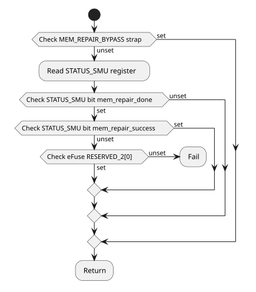
__metal_memory_repair_check.2.1.5. Per-Core Reset
See the SMC CPU reset description in the Technical Reference Manual for the hardware behavior, the drain handshake and the associated risks.
|
Do not reset a hart while any hart is performing coherent memory accesses. |
A software reset through CPU_CTRL.RESET_CTRL is withheld until the CPU AXI
isolation boundary drains. Holding any core in reset terminates the other
cores' MMIO accesses with SLVERR and stalls L2 frontend traffic until every
core is released. An SMC hart that requests a reset therefore cannot read the
status registers below until the boundary reconnects. Request and monitor these
resets from a manager outside the cluster, normally the SEP, which reaches
CPU_CTRL at 0x4003_9000 in its view of the SMC.
To hold a core or the uncore in reset:
-
Program
CPU_CTRL.RESET_TIMEOUT.timeout_valuebounds, in SMC clock cycles, how long the request may wait for the drain; zero waits indefinitely.timeout_modechooses the expiry behavior:0reports the timeout and keeps withholding the reset,1forces the reset and flushes the isolation blocks. -
Clear the core or uncore reset bit in
RESET_CTRL. -
Poll
RESET_TIMEOUT.reset_applied, which rises once the reset is applied by a completed drain or a forced timeout.RESET_TIMEOUT.reset_timeoutreports an expired wait in either mode and stays high until the request is removed. -
Set the reset bit again so the boundary reconnects.
Use force mode only for recovery from an unresponsive cluster. The flush clears only the CPU isolation blocks: a block elsewhere in the fabric that holds a response can leave its route or AXI ID blocked, and must be recovered separately or by cold reset.
A safe startup scenario, subject to the warning above, is when three of four
harts remain parked after ROM boot and must start at a different firmware
address. Before they join normal coherent operation, software can program a
parked hart’s RESET_VECTOR[n] and pulse its reset to start it at that address.
Avoid this flow where possible for the reasons described in the Technical
Reference Manual.
Core Reset Pulse
A reset pulse restarts one core without software having to release it. The
pulse passes through the same drain handshake as a held reset, and
RESET_TIMEOUT applies to it in the same way. To restart core n:
-
Program
RESET_VECTOR[n]if the core must start at a different address. -
Program
CORE_RESET_PULSE_COUNT. Once the drain completes, the core stays out of reset forpre_reset_count + 1SMC clock cycles and is then held in reset forpost_reset_count + 1cycles. The reset values give 9 and 17 cycles. -
Write 1 to
RESET_CTRL.core<n>_reset_pulse_start, leavingcore<n>_reset_nat 1. A 0 incore<n>_reset_nholds the core in reset for the whole pulse and after it.
The pulse start bits read as 0, so a read-modify-write of RESET_CTRL does not
start another pulse. Writing a start bit while that core’s pulse runs restarts
the count of the current phase. CORE_RESET_PULSE_COUNT.core_resets_done bit
n reads 0 while the pulse of core n runs. It also reads 1 before a withheld
pulse starts, so confirm the restart through a handshake with the restarted
core, such as a scratch register it writes, rather than by polling
core_resets_done.
// SMC CPU control register addresses.
// In SEP-local address space, through the SEP view of the SMC.
#define SMC_CPU_CTRL_BASE 0x40039000
#define SMC_REG_RESET_VECTOR_LO(n) (SMC_CPU_CTRL_BASE + ((n) * 0x8))
#define SMC_REG_RESET_VECTOR_HI(n) (SMC_CPU_CTRL_BASE + ((n) * 0x8) + 0x4)
#define SMC_REG_RESET_CTRL (SMC_CPU_CTRL_BASE + 0x20)
// RESET_CTRL pulse start bit of core `n`.
#define RESET_CTRL_CORE_PULSE_START(n) (0x10 << (n))// Restart SMC core `n` at `entry` with a reset pulse.
void smc_core_restart(unsigned n, uint64_t entry) {
write32(SMC_REG_RESET_VECTOR_LO(n), (uint32_t)entry);
write32(SMC_REG_RESET_VECTOR_HI(n), (uint32_t)(entry >> 32));
__asm__ volatile("fence" ::: "memory");
uint32_t val = read32(SMC_REG_RESET_CTRL);
write32(SMC_REG_RESET_CTRL, val | RESET_CTRL_CORE_PULSE_START(n));
}2.1.6. External CPU Cluster NDM Reset
Read NDMRESET_REQUEST bit i as the NDM reset request from external
CPU cluster i. Write NDMRESET_PROCESS bit i to answer that
cluster. Read NDMRESET_CLUSTER_COUNT and mask both registers with
that value.
This harness reports 4 in NDMRESET_CLUSTER_COUNT. Bits of
NDMRESET_REQUEST at and above the count read as 0. Writes to those
bits of NDMRESET_PROCESS stay in the register.
The register block is Chip Config, Scratch, NDM Reset, and Misc Wrap in the Technical Reference Manual.
2.2. General Operation
2.2.1. Interrupt Control
There are 3 architectural interrupt sources that the cores of the SMU receive:
-
Timer interrupts — Interrupts generated by the system timer. In the SMC, the source of timer interrupts is the core local interruptor (CLINT).
-
Software interrupts — Interrupts signalled by other cores in the system. In the SMC, software-initiated interrupts are signalled through the CLINT.
-
External interrupts — Interrupts from all other peripherals. External interrupts are aggregated by the platform local interrupt controller (PLIC).
External interrupts have the highest priority, followed by Software interrupts, then Timer interrupts.
The mtvec CSR stores the trap vector which the cores transfer control to upon
taking an interrupt or encountering an exception. The mtvec CSR contains the
base address BASE of the trap vector, as well as a MODE field that
determines how the trap vector address is computed:
-
If
MODEis set to Direct (0b00), then all interrupts and exceptions cause the program counter to be set tomtvec.BASE. -
If
MODEis set to Vectored (0b01), then exceptions cause the program counter to be set tomtvec.BASE, and interrupts cause the program counter to be set tomtvec.BASE + (0x4 * i), whereiis the architectural interrupt type (Timer, Software, or External, per-privilege level).
Since program counter destinations in Vectored mode form a tightly-packed array, the entries for each interrupt should consist of a single jump instruction to a programmer-defined exception/interrupt handler function.
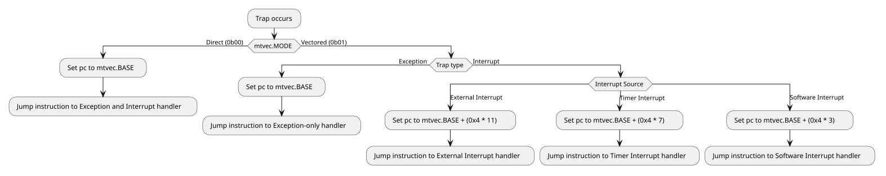
Timer and Software Interrupt Control
The SMC uses the core local interruptor (CLINT) for Timer interrupts,
as well as for software-initiated inter-processor interrupts (IPIs).
The base address for the CLINT — CLINT_BASE — is 0xC800_0000.
The current value of the timer is stored in the CLINT’s MTIME register, at
CLINT_BASE + 0xBFF8. The CLINT stores a timer comparison value corresponding
to each core of the SMC in the CLINT MTIMECMP register array, at
CLINT_BASE + 0x4000 + (0x8 * hartid). Both registers are 64-bits wide.
A timer interrupt becomes pending for a core once MTIME exceeds the core’s
corresponding MTIMECMP value. To dismiss the interrupt, the timer interrupt
handler should set the core’s corresponding MTIMECMP register to a new value
in the future.
|
There may be a delay between writing |
The following code samples should be used to read the full 64-bit MTIME value
using 32-bit reads, guarding against overflow between the two halves, and
setting the value of MTIMECMP without causing a spurious interrupt:
// CLINT addresses.
// In SMC-local address space.
#define CLINT_BASE 0xC8000000
#define CLINT_REG_MSIP(hartid) (CLINT_BASE + ((hartid) * 0x4))
#define CLINT_REG_MTIMECMP_LO(hartid) (CLINT_BASE + 0x4000 + ((hartid) * 0x8))
#define CLINT_REG_MTIMECMP_HI(hartid) (CLINT_BASE + 0x4004 + ((hartid) * 0x8))
#define CLINT_REG_MTIME_LO (CLINT_BASE + 0xBFF8)
#define CLINT_REG_MTIME_HI (CLINT_BASE + 0xBFFC)MTIME example C usage.uint64_t read_clint_mtime(void) {
uint32_t hi, lo;
// Make sure the high half has not overflowed
// while reading the lower half.
do {
hi = read32(CLINT_REG_MTIME_HI);
lo = read32(CLINT_REG_MTIME_LO);
} while (read32(CLINT_REG_MTIME_HI) != hi);
return ((uint64_t)hi << 32) | lo;
}MTIMECMP example C usage.unsigned long read_hartid(void) {
// Determine the current hartid by
// reading from the `mhartid` CSR.
unsigned long hartid;
__asm__ volatile(
"csrr %[hartid], mhartid"
: [hartid] "=r"(hartid)
:: "memory"
);
return hartid;
}
void write_clint_mtimecmp(uint64_t value) {
unsigned long hartid = read_hartid();
write32(CLINT_REG_MTIMECMP_HI(hartid), 0xFFFFFFFF);
write32(CLINT_REG_MTIMECMP_LO(hartid), (uint32_t)value);
write32(CLINT_REG_MTIMECMP_HI(hartid), (uint32_t)(value >> 32));
}Cores can send interrupts to other cores of the SMC by writing a value of 1
to the target core’s corresponding MSIP register, at
CLINT_BASE + (0x4 * hartid). This writes directly to the target core’s
MIE.msip bit.
Upon taking a software interrupt, a core may clear its software interrupt
pending bit by writing 0 to its corresponding MSIP register.
Neither timer nor software interrupts use a PLIC completion write.
void software_interrupt_send(unsigned long target_hartid) {
write32(CLINT_REG_MSIP(target_hartid), 1);
}
void software_interrupt_clear(unsigned long target_hartid) {
write32(CLINT_REG_MSIP(target_hartid), 0);
}External Interrupt Control
The SMC uses the standard RISC-V platform-level interrupt controller (PLIC) for managing external interrupts, see here for the RISC-V PLIC Specification and layout.
See the SMC CPU Interrupt Vector Map chapter of the Technical Reference Manual for the full generated interrupt map.
The allocation of additional interrupt IDs within the External interrupts block is defined by the integrator.
Before enabling delivery, initialize the PLIC priority, enable and threshold
registers, which are not reset by hardware, and the CPU mie CSR, then set the
individual enables and mstatus.MIE. Enable each source in the intended machine
or supervisor context with a priority above that context’s threshold. A source’s
priority is shared by every context that enables it, so changing it affects all
of them. Source ownership and core assignment are firmware decisions; the
hardware imposes no fixed roles.
The process of determining and servicing the specific external interrupt is as
follows, where PLIC_BASE = 0xC400_0000:
-
Claim the highest priority pending interrupt ID by reading from the PLIC
CLAIMregister for the hart atPLIC_BASE + 0x20_0004 + (0x1000 * hartid). -
If the returned interrupt ID is 0, return from the interrupt handler — any pending interrupts have been claimed by other cores on the system.
-
Dispatch to the corresponding interrupt handling routine, based on the claimed interrupt ID.
-
Complete the interrupt at the peripheral, clearing its interrupt pending signal to the PLIC.
-
Finally, complete the external interrupt at the PLIC, by writing the claimed interrupt ID to the PLIC
COMPLETEregister for the hart, also atPLIC_BASE + 0x20_0004 + (0x1000 * hartid).
|
If the interrupt is cleared at the PLIC before it is cleared at the interrupting peripheral, the interrupt may be raised again to the PLIC, causing a future spurious interrupt. Clearing of interrupt signals should be done from the inner-most source first (peripheral first, then PLIC), akin to popping the stack that narrowed in on the interrupt condition. |
Several PLIC sources are OR-combinations: the GPIO halves, each UART with its
Log Engine, and the AXI hang detectors. For these, inspect every contributing
local status that can keep the line asserted before completing. Claim and
complete do not clear a peripheral’s own sticky status, and they do not make
short or repeated pulses lossless: DMA and zeroer completions are pulses, not
counted queues, so track DMA retirement with DONE_0 rather than by counting
completion interrupts.
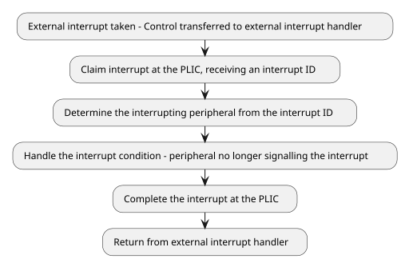
Bus Error Units
Each core has a Bus Error Unit (BEU) that accumulates its bus error events.
ACCRUED_ENABLE is sticky status, not an enable mask: events set its bits
regardless of ENABLE, an ordinary write replaces them, and writing zero
clears them. ENABLE gates capture of the first error’s CAUSE and
PHYS_ADDR while CAUSE is zero. LOCAL_ENABLE delivers accrued errors
directly to the core, bypassing the PLIC, and PLIC_ENABLE selects the PLIC
output; in machine mode, mstatus.MIE = 0 still suppresses the local delivery.
To service a BEU, capture CAUSE, PHYS_ADDR and ACCRUED_ENABLE first, then
clear ACCRUED_ENABLE and rearm capture by writing CAUSE to zero. Both
delivery paths select from the same accrued bits, so clearing them affects both.
2.2.2. Watchdog Timers
Each core of the SMC has a dedicated watchdog timer (WDT), that can generate
an interrupt and optionally a reset request if not serviced within a
configurable period of time. The watchdog timers are driven by the SMU clock
signal clk_smu_i.
The COUNT register contains the raw WDT timer value, and increments at the
frequency of the SMU clock signal clk_smu_i. The wdogscale field in the
CTRL register contains a right-shift amount which is applied to the COUNT
register, effectively dividing the WDT tick rate by 2CTRL.wdogscale.
The scaled counter after shifting can be read from the SCALED_COUNT register.
The SCALED_COUNT register is compared to the CMP register to determine if
the WDT has expired. If SCALED_COUNT >= CMP, a watchdog timer interrupt is
raised.
Every register write (with the exception of KEY) requires unlocking by writing
the value 0x51F15E to the KEY register. The WDT automatically locks after
one register write after unlocking.
The wdogenalways (bit 12) and wdogcoreawake (bit 13) fields of CTRL
control under what conditions COUNT is incremented. If wdogcoreawake is set,
COUNT is only incremented while the core is not in reset. If wdogenalways
is set, COUNT always increments. wdogenalways takes priority over
wdogcoreawake if both bits are set.
If wdogzerocmp (bit 9) is enabled in CTRL, the watchdog timer COUNT will
reset to 0 once the comparison threshold CMP has been reached and an
interrupt has been fired. Otherwise, COUNT will continue incrementing and
must be manually written to to set it to a lower value (after unlocking a
register write by writing to KEY).
If wdogrsten (bit 8) is enabled in CTRL when the WDT fires, the WDT latches
a reset request until the cluster uncore is reset. The request does not reset the core.
It starts that core’s second-stage countdown in CPU_CTRL, and when the
countdown expires the SMC warm reset restarts the whole CPU cluster.
CPU_CTRL.WDT_TIMEOUT sets the countdown length in SMC clock cycles, 16384
after reset, and writing 1 to WDT_TIMEOUT_RESET.reset_cycle_count_<n>
restarts the countdown of core n. Feeding the WDT does not withdraw a latched
request, so restarting the countdown only postpones the warm reset.
The core whose WDT fired is presumed unable to service its own interrupt. Other SMC cores should enable interrupts from each other’s watchdog timers to be notified, so that SMC software can save state or reallocate work before the warm reset, postponing it while it does.
In the event of a watchdog timer interrupt, software — running on a core other than the one whose WDT fired — should clear the interrupt at the
watchdog by:
-
Bringing the scaled count below
CMP, by feeding the watchdog or by writingCOUNT. Hardware setsCTRL.wdogip0on every cycle the scaled count is at or aboveCMP, so the bit cannot be cleared while that holds. This may not be necessary ifCTRL.wdogzerocmpis also set and not enough time has passed for the interrupt to be reasserted. -
Writing
KEYagain. Feeding or writingCOUNTconsumes the unlock, and feeding leaveswdogip0set. -
Writing
CTRLwithwdogip0(bit 28) at zero and its other fields unchanged.
// WDT register addresses.
// In SMC-local address space.
#define WDT_BASE 0xC0000000
#define WDT_REG_CTRL(hartid) (WDT_BASE + ((hartid) * 0x400) + 0x0)
#define WDT_REG_COUNT(hartid) (WDT_BASE + ((hartid) * 0x400) + 0x8)
#define WDT_REG_FEED(hartid) (WDT_BASE + ((hartid) * 0x400) + 0x18)
#define WDT_REG_KEY(hartid) (WDT_BASE + ((hartid) * 0x400) + 0x1C)
#define WDT_REG_CMP(hartid) (WDT_BASE + ((hartid) * 0x400) + 0x20)
// WDT register constants.
#define WDT_KEY_UNLOCK 0x0051F15E
#define WDT_FEED_VALUE 0x0D09F00D
#define WDT_CTRL_WDOGRSTEN 0x100
#define WDT_CTRL_WDOGENALWAYS 0x1000unsigned long read_hartid(void) {
// Determine the current hartid by
// reading from the `mhartid` CSR.
unsigned long hartid;
__asm__ volatile(
"csrr %[hartid], mhartid"
: [hartid] "=r"(hartid)
:: "memory"
);
return hartid;
}
static void wdt_write(uintptr_t addr, uint32_t value) {
// Helper to write to one of the core's WDT registers,
// unlocking it before performing the actual write.
unsigned long hartid = read_hartid();
// Unlock.
write32(WDT_REG_KEY(hartid), WDT_KEY_UNLOCK);
// Write.
write32(addr, value);
}
void wdt_configure(void) {
unsigned long hartid = read_hartid();
// 10ms at an assumed 50MHz SMU clock.
// = 500000 cycles. Use a divisor of 8
// (wdogscale = 3) so that the compare
// value fits in `CMP`, which is 16-bits.
uint32_t wdogscale = 3;
uint16_t compare = (uint16_t)(500000 >> wdogscale);
uint32_t ctrl = wdogscale | WDT_CTRL_WDOGRSTEN | WDT_CTRL_WDOGENALWAYS;
// Reset the count so that updating `CMP` and `CTRL`
// doesn't accidentally cause a WDT interrupt if
// `CMP` is decreased to below `SCALED_COUNT`.
wdt_write(WDT_REG_COUNT(hartid), 0);
wdt_write(WDT_REG_CMP(hartid), compare);
wdt_write(WDT_REG_CTRL(hartid), ctrl);
// Reset count.
wdt_write(WDT_REG_COUNT(hartid), 0);
}
void wdt_service(void) {
unsigned long hartid = read_hartid();
wdt_write(WDT_REG_FEED(hartid), WDT_FEED_VALUE);
}2.2.3. Logging Peripherals (UART, Log Engine)
Software may log info and error messages by transmitting over UART. For more advanced and flexible use-cases, such as logging asynchronously and from multiple cores, the Log Engine peripheral can drive UART transmission on the CPU’s behalf, with messages fed in from SMC memory.
The UARTs and Log Engines sit within the UART Controller block. Within this block, there are 4 UART and Log Engine pairs.
UART
The UART baud rate is configured by writing the 16-byte clock divisor value
to the DLM (most-significant byte) and DLL (least-significant byte)
registers. To access these registers, the DLAB bit (bit 7) must be enabled
in the LCR register. Once configured, the DLAB bit should be disabled to
access the registers hidden by that bit.
FIFO configuration is done using the FCR and ECR registers. The FIFO is
enabled by setting the least-significant bit in the FCR register.
The RCVR_TRIGGER_MS2B field of ECR and RCVR_TRIGGER field of FCR form
a 4-bit value which determines the receive FIFO trigger level. While the receive
FIFO contains more than this amount of characters, the UART asserts the
Received Data Ready interrupt.
| Value | ECR.RCVR_TRIGGER_MS2B |
FCR.RCVR_TRIGGER |
FIFO trigger level |
|---|---|---|---|
|
|
|
1 character. |
|
|
|
4 characters. |
|
|
|
8 characters. |
|
|
|
14 characters. |
|
|
|
32 characters. |
|
|
|
64 characters. |
|
|
|
128 characters. |
|
|
|
256 characters. |
|
|
|
512 characters. |
|
|
|
1024 characters. |
|
|
|
2048 characters. |
|
|
|
4096 characters. |
Data is written by writing to the THR register. If the FIFO is enabled, the
written data will be pushed onto the transmission FIFO. Data is popped from the
receive FIFO by reading the RBR register. Note that the THR and RBR
registers are accessible only when the DLAB bit of LCR is disabled.
// UART Register addresses.
// In SMC-local address space.
#define UART_BASE 0xC0006100
#define UART_REG_RBR_THR (UART_BASE + 0x0) // DLAB=0, Reads access RBR, writes access THR.
#define UART_REG_DLL (UART_BASE + 0x0) // DLAB=1
#define UART_REG_IER (UART_BASE + 0x4) // DLAB=0
#define UART_REG_DLM (UART_BASE + 0x4) // DLAB=1
#define UART_REG_IIR_FCR (UART_BASE + 0x8) // Reads access IIR, writes access FCR.
#define UART_REG_LCR (UART_BASE + 0xC)
#define UART_REG_LSR (UART_BASE + 0x14)
#define UART_REG_ECR (UART_BASE + 0x20)
// Register constants.
#define UART_IER_ALL 0x1f
#define UART_FCR_FIFO_ENABLE 0x1
#define UART_FCR_RCVR_FIFO_RESET 0x2
#define UART_FCR_XMIT_FIFO_RESET 0x4
#define UART_FCR_DMA_MODE_SELECT_0 0x0
#define UART_FCR_DMA_MODE_SELECT_1 0x8
#define UART_FCR_RCVR_TRIGGER_256C 0xC0
#define UART_LCR_PEN 0x8 // Parity enable bit.
#define UART_LCR_STB_2S 0x4 // 2 stop bits.
#define UART_LCR_STB_1S 0x0 // 1 stop bit.
#define UART_LCR_WLS_8B 0x3 // 8 bits per character.
#define UART_LCR_DLAB 0x80
#define UART_LSR_THRE 0x20
#define UART_ECR_RCVR_TRIGGER_MS2B_256C 0x1void uart_configure_nofifo(void) {
// Reset the UART.
// Disable interrupts.
write32(UART_REG_IER, 0);
// A divisor of 0 disables the transmitter and receiver.
write32(UART_REG_LCR, UART_LCR_DLAB);
write32(UART_REG_DLL, 0);
write32(UART_REG_DLM, 0);
// Reset and disable FIFOs.
write32(UART_REG_IIR_FCR,
UART_FCR_RCVR_FIFO_RESET | UART_FCR_XMIT_FIFO_RESET
| UART_FCR_DMA_MODE_SELECT_0);
// UART configuration: 8 bits per character, 1 stop bit, no parity bits.
uint32_t uart_config = UART_LCR_WLS_8B | UART_LCR_STB_1S;
// Write configuration to LCR, and enable DLAB to configure baud rate.
write32(UART_REG_LCR, uart_config | UART_LCR_DLAB);
// Calculate clock divisor for the intended baud rate, rounded to nearest.
uint16_t divisor = (CLOCK_FREQUENCY + 8 * TARGET_BAUD) / (16 * TARGET_BAUD) - 1;
// Write divisor bytes to DLL and DLM.
write32(UART_REG_DLL, (uint32_t)((uint8_t)divisor));
write32(UART_REG_DLM, (uint32_t)((uint8_t)(divisor >> 8)));
// Write configuration again to LCR, clearing the DLAB bit.
write32(UART_REG_LCR, uart_config);
// Enable interrupts.
write32(UART_REG_IER, UART_IER_ALL);
}
void uart_write(const char *str) {
while (*str) {
// Poll LSR until THR is empty.
while (!(read32(UART_REG_LSR) & UART_LSR_THRE));
// Write the character to THR.
write32(UART_REG_RBR_THR, (uint32_t)(*str));
str++;
}
}void uart_configure_fifo(void) {
// Reset the UART.
// Disable interrupts.
write32(UART_REG_IER, 0);
// A divisor of 0 disables the transmitter and receiver.
write32(UART_REG_LCR, UART_LCR_DLAB);
write32(UART_REG_DLL, 0);
write32(UART_REG_DLM, 0);
// Reset and disable FIFOs.
write32(UART_REG_IIR_FCR, UART_FCR_RCVR_FIFO_RESET | UART_FCR_XMIT_FIFO_RESET);
// FIFO configuration: Enabled, 256-character trigger level.
write32(UART_REG_ECR, UART_ECR_RCVR_TRIGGER_MS2B_256C);
write32(UART_REG_IIR_FCR,
UART_FCR_RCVR_TRIGGER_256C | UART_FCR_FIFO_ENABLE
| UART_FCR_DMA_MODE_SELECT_0);
// UART configuration: 8 bits per character, 1 stop bit, no parity bits.
uint32_t uart_config = UART_LCR_WLS_8B | UART_LCR_STB_1S;
// Write uart configuration to LCR, and enable DLAB to configure baud rate.
write32(UART_REG_LCR, uart_config | UART_LCR_DLAB);
// Calculate clock divisor for the intended baud rate, rounded to nearest.
uint16_t divisor = (CLOCK_FREQUENCY + 8 * TARGET_BAUD) / (16 * TARGET_BAUD) - 1;
// Write divisor bytes to DLL and DLM.
write32(UART_REG_DLL, (uint32_t)((uint8_t)divisor));
write32(UART_REG_DLM, (uint32_t)((uint8_t)(divisor >> 8)));
// Write configuration again to LCR, clearing the DLAB bit.
write32(UART_REG_LCR, uart_config);
// Enable interrupts.
write32(UART_REG_IER, UART_IER_ALL);
}
void uart_write_fifo(const char *str) {
while (*str) {
// Poll until transmit FIFO is empty.
while (!(read32(UART_REG_LSR) & UART_LSR_THRE));
// Burst write up to 4096 characters at a time.
for (size_t i = 0; i < 4096; i++) {
if (*str == 0) return;
write32(UART_REG_RBR_THR, (uint32_t)(*str));
str++;
}
}
}Reconfiguring Baud Rate and Frame
-
Quiesce the data path. Wait for
LSR.TEMTif queued transmit data must finish, and serialize accesses so that no other context usesTHR,RBRorIERwhileDLABselects the divisor view. -
Choose a supported frame format in
LCR. Computedivisor = round(clock_frequency / (16 * baud_rate)) - 1, and check that it is in the usable range 1 to 65535. The resulting rate isclock_frequency / (16 * (divisor + 1)). -
Set
LCR.DLAB, preserving the frame format. -
Write
DLLand thenDLM, then clearDLABbefore any data orIERaccess. The two divisor writes are not an atomic update.
At 50 MHz, 115200 baud gives divisor 26 (0x001A) and an actual rate of
50000000 / (16 * 27), approximately 115741 baud. Divisor zero disables both
the transmitter and the receiver; it is not the highest-speed setting.
#define UART_LSR_TEMT 0x40
// Change the baud rate, keeping the frame format programmed in LCR.
// The caller checks that the divisor is in the range 1 to 65535.
void uart_set_baud(uint32_t clock_frequency, uint32_t baud) {
// Let queued transmit data finish.
while (!(read32(UART_REG_LSR) & UART_LSR_TEMT));
uint32_t lcr = read32(UART_REG_LCR) & ~UART_LCR_DLAB;
uint32_t divisor = (clock_frequency + 8 * baud) / (16 * baud) - 1;
write32(UART_REG_LCR, lcr | UART_LCR_DLAB);
write32(UART_REG_DLL, divisor & 0xFF);
write32(UART_REG_DLM, (divisor >> 8) & 0xFF);
write32(UART_REG_LCR, lcr);
}FIFO Control and Polled Transfers
FCR is write-only and shares its address with the read-only IIR. Keep a
software copy of the persistent FCR settings rather than attempting a
read-modify-write through that address.
-
Changing
FCR.FIFO_ENABLEdiscards buffered data. -
Choose a receive threshold that
RX_FIFO_DEPTHsupports; an unsupported selection never asserts the receive watermark. -
Set
FCR.DMA_MODE_SELECTonly to use mode-1 DMA service indications. -
To discard data deliberately, pulse
FCR.RCVR_FIFO_RESETorFCR.XMIT_FIFO_RESET, preserving the FIFO enable, DMA mode and trigger settings.
For conservative polled transmission, wait for LSR.THRE, then write no more
than the configured transmit FIFO capacity, or one byte when FIFO mode is
disabled. An AXI write acknowledgement does not guarantee that a full transmit
buffer accepted the character. For reception, check LSR.DR, capture any line
errors, then read RBR.
Interrupt Service
Program IER with DLAB clear. In the handler, read IIR, service its
highest-priority source following the
UART interrupt service table
in the Technical Reference Manual, and repeat until IIR.INTERRUPT_PENDING
reads one. Reads of LSR and MSR clear fields, and an IIR read acknowledges
a THRE interrupt, so read each register once per pass. MCR.OUT2 is not an
interrupt enable in this implementation, and IER does not mask the receive
timeout.
Modem Status and Software Flow Control
The UART implements no automatic flow control. The modem inputs are
synchronized and reported in MSR only: the transmitter keeps sending while
its FIFO is non-empty regardless of CTS, and the receiver never deasserts
rts_no on its own. Software implements any flow control protocol.
To honour CTS on the transmit side:
-
Enable the modem status interrupt (
IER.EDSSI). -
On an interrupt, read
IIRto confirm the modem status source. -
Read
MSR.MSR.CTSreads 1 whilects_niis asserted (low), that is while the remote device can accept data, andMSR.DCTSreports a change since the previousMSRread. -
Stop writing
THRwhileMSR.CTSreads 0, and resume when the next modem status interrupt reports it back at 1.
The four delta bits (DCTS, DDSR, TERI, DDCD) are sticky and are cleared
by any read of MSR, so capture every modem input from a single read. TERI
records only the trailing edge of the ring indication; the other delta bits
record either transition. Because they are sticky, a delta bit reports a change
even if the input has returned to its previous level by the time software reads
it.
On the receive side, throttle the remote device by clearing MCR.RTS (which
drives rts_no high, deasserted) as the receive FIFO approaches its trigger
level, and set it again after draining RBR.
Both loopback modes bypass the pins, so the MSR level bits no longer reflect
the modem inputs. With MCR.LOOP set, MSR is fed from the MCR bits (CTS from
RTS, DSR from DTR, RI from OUT1, DCD from OUT2) and the modem outputs are
deasserted. With MCR.LINE_LOOPBACK set, the modem inputs are routed straight
back out to the modem outputs and all four MSR level bits read 0. With both
bits set, the modem outputs follow line loopback while MSR follows system
loopback. The delta bits and the modem status interrupt track whatever values
are substituted.
Log Engine Configuration
The Log Engine is a DMA-based logging peripheral that can efficiently transfer
log messages from SMC memory to a UART on the CPU’s behalf.
The UART exposes the txrdy_o signal directly to the Log Engine which notifies
it that more bytes can be accepted into the transmit FIFO.
Each Log Engine supports up to 16 log entries, which represent a message to be transmitted. The Log Engine uses round-robin scheduling for fairness in multi-threaded usage.
Before configuration begins, software should disable the Log Engine’s
operation by writing 0 to the Log Engine’s CTRL register. After
configuration is complete, the Log Engine can be enabled by writing 1
to the CTRL register.
The Log Engine is configured by writing the address and size of the region of
SMC memory that will be used for log entries, into the LOG_REGION_ADDR
and LOG_REGION_SIZE registers respectively. This memory buffer is divided
evenly into the 16 regions, each representing a separate log entry.
The Log Engine will write bytes to the UART address specified in the
LOG_WRITE_ADDR register. This must be set to the address of the associated
UART’s THR register, which feeds the transmission FIFO.
The UART used by the Log Engine must be configured first, before it can be used
by the Log Engine. The UART used must also be configured to use DMA Mode 0 by
clearing the DMA_MODE_SELECT bit in the UART’s FCR register.
See the previous section on configuring the UART.
| Start Address | End Address | Size | Description |
|---|---|---|---|
|
|
|
Log Entry 1/16 |
|
|
|
Log Entry 2/16 |
|
|
|
Log Entry 3/16 |
… |
… |
… |
… |
|
|
|
Log Entry 16/16 |
The size of memory region written to LOG_REGION_SIZE must be a multiple of
128-bytes, meaning each log entry is a multiple of 8-bytes in size.
The full configuration sequence is:
-
Start from reset or an idle engine with all pending lengths clear, and clear
CTRL.ENbefore changing shared configuration. -
Allocate a readable region with an 8-byte-aligned base and a size that is a multiple of 128 bytes, no larger than 512 KiB. For a 4 KiB region, each of the 16 slots has 256 bytes.
-
Write
LOG_REGION_SIZEand both halves ofLOG_REGION_ADDR. Only address bits[55:0]are implemented; bits[63:56]are reserved zero. -
Set
LOG_WRITE_ADDRto the UARTTHRaddress and configure the UART. The write target is not fixed in hardware; log output reaches the UART only when this register points atTHR. -
Clear stale error status by writing
0x11toINTR_STATUS. If interrupts are required, write0x11toINTR_ENABLEand configure the PLIC. -
Set
CTRL.EN.
The CPU and the Log Engine share the UART THR through an arbiter with no
hardware lock. Do not write THR directly while the Log Engine is active, or
CPU writes and log output interleave on the transmit path.
// Log Engine Register addresses.
// In SMC-local address space.
#define LOG_ENGINE_BASE 0xC0006200
#define LOG_ENGINE_REG_CTRL (LOG_ENGINE_BASE + 0x0)
#define LOG_ENGINE_REG_LOG_REGION_SIZE (LOG_ENGINE_BASE + 0x4)
#define LOG_ENGINE_REG_LOG_REGION_ADDR_LO (LOG_ENGINE_BASE + 0x8)
#define LOG_ENGINE_REG_LOG_REGION_ADDR_HI (LOG_ENGINE_BASE + 0xC)
#define LOG_ENGINE_REG_LOG_WRITE_ADDR (LOG_ENGINE_BASE + 0x10)
#define LOG_ENGINE_REG_INTR_STATUS (LOG_ENGINE_BASE + 0x14)
#define LOG_ENGINE_REG_INTR_ENABLE (LOG_ENGINE_BASE + 0x18)
#define LOG_ENGINE_REG_LOG_CTRL(num) (LOG_ENGINE_BASE + 0x40 + ((num) * 0x4))
// UART Register addresses.
#define UART_BASE 0xC0006100
#define UART_REG_RBR_THR (UART_BASE + 0x0)
// Register constants.
#define LOG_ENGINE_CTRL_ENABLE 1
#define LOG_ENGINE_CTRL_DISABLE 0
#define LOG_ENGINE_INTR_LOG_FETCH_ERR 0x1
#define LOG_ENGINE_INTR_LOG_WRITE_ERR 0x10
// Sample log region.
#define LOG_ENTRY_SIZE 1024
#define LOG_REGION_SIZE (LOG_ENTRY_SIZE * 16)
char log_region[LOG_REGION_SIZE];// Configure the Log Engine to read logs from `log_region`.
void configure(char *log_region, uint32_t log_region_size) {
// Disable operation.
write32(LOG_ENGINE_REG_CTRL, LOG_ENGINE_CTRL_DISABLE);
// Write address of log region.
write32(LOG_ENGINE_REG_LOG_REGION_ADDR_LO, (uint32_t)log_region);
write32(LOG_ENGINE_REG_LOG_REGION_ADDR_HI, (uint32_t)(log_region >> 32));
// Write size of log region.
write32(LOG_ENGINE_REG_LOG_REGION_SIZE, log_region_size);
// Write the address of the UART THR register.
write32(LOG_ENGINE_REG_LOG_WRITE_ADDR, UART_REG_RBR_THR);
// Enable error interrupts.
write32(LOG_ENGINE_REG_INTR_ENABLE,
LOG_ENGINE_INTR_LOG_FETCH_ERR | LOG_ENGINE_INTR_LOG_WRITE_ERR);
// Enable operation.
write32(LOG_ENGINE_REG_CTRL, LOG_ENGINE_CTRL_ENABLE);
}Log Engine Operation
To engage the Log Engine in transmitting a log entry, software must:
-
Choose a vacant log entry index.
-
Copy or write the message to be sent into the chosen log entry index’s corresponding region in the memory buffer.
-
Write the length of the to be sent message into the log entry’s corresponding
LOG_CTRLregister in the Log Engine.
Reading from the LOG_CTRL register array returns the number of remaining
bytes for each log entry. A log entry has finished transmission once reading
the corresponding LOG_CTRL register returns 0.
Observe these rules when submitting:
-
Wait for
LOG_CTRL[i].LOG_LENto read zero before reusing sloti. Writing a new length to an active slot is not a queueing operation, so assign slots to producers or serialize access in software. A zero length submits nothing. -
Keep the message within the slot capacity, and make the complete final fetch word readable.
-
Make the data visible to the engine using the platform’s cache-maintenance and memory-ordering rules before writing the length.
-
Leave the buffer and length unchanged while pending. Poll with a timeout appropriate to the UART speed and the other pending messages, or check completion later from a scheduler.
-
Inspect
INTR_STATUSbefore treating completion as success. A slot reaching zero only means the bytes were handed to the UART, not that the serial transmitter is empty, and the engine advances on bus error responses too.
// Print formatted output to UART, using the Log Engine.
void log_engine_printf(const char *format, ...) {
// Determine and pick a vacant log entry index.
// In this example, the arbitrary index `5` suffices.
int index = 5;
va_list args;
va_start(args, format);
// Write the message into the vacant log entry region,
// writing at most `LOG_ENTRY_SIZE` bytes.
int len = vsnprintf(&log_region[index * LOG_ENTRY_SIZE],
LOG_ENTRY_SIZE, format, args);
va_end(args);
if (len < 0) {
// Printing failed.
return;
}
// Write the length of the message. This queues up the transmission.
write32(LOG_ENGINE_REG_LOG_CTRL(index), len);
// Poll for completion.
while (read32(LOG_ENGINE_REG_LOG_CTRL(index)) != 0);
}|
A more performant implementation may choose to skip polling for completion, and only initially block while all log entries are in-use. As the log engine can only feed the UART transmit FIFO, message reception and draining the receive FIFO remains the responsibility of the cores. |
Log Engine Error Recovery
Read INTR_STATUS to distinguish fetch errors (LOG_FETCH_ERR) from write
errors (LOG_WRITE_ERR), diagnose the memory or UART path, then clear the
handled bits by writing one to them. There is no automatic retransmission, and
because the status is shared it does not identify which pending slot failed.
If progress stops, check UART readiness and outstanding bus responses. Do not
free pending buffers solely because CTRL.EN was cleared: disabling clears
neither the pending lengths nor the outstanding bus traffic, as the
Log Engine reset and disable behavior
in the Technical Reference Manual describes. Reconcile outstanding traffic
before reusing buffers, and account for characters already sent, since
restarting may duplicate output.
2.2.4. GPIO
The SMC exposes 65 GPIO pins, each controlled through its own register instance within the GPIO block.
The per-pin DATA_CTRL register contains the pin’s configuration and value.
The pad2core field (bit 31) contains the current sampled value of the pin.
The core2pad field (bit 0) contains the current value driven to the pad.
The enable_rx_tx field determines the direction of pin:
.GPIO enable_rx_tx values.
| Value | Description |
|---|---|
|
Output / TX |
|
Input / RX |
The pin may also raise edge-sensitive or level-sensitive interrupts.
The interrupt condition is configured in the interrupt_type field:
| Value | Description |
|---|---|
|
Level interrupt, Active-high |
|
Level interrupt, Active-low |
|
Edge interrupt, Rising-edge |
|
Edge interrupt, Falling-edge |
To enable interrupts for the specific pin, interrupt_enable (bit 18) must
be set.
The per-pin DATA_CTRL_ENABLE register provides per-field LSIO overrides.
When an LSIO peripheral controls the pad (DATA_CTRL.interface_enable is not set),
setting a bit here forces the corresponding DATA_CTRL field to take effect
for that field only.
-
use_reg_core2pad(bit 0) forces the register-controlledDATA_CTRL.core2padonto the pad, regardless of LSIO output. -
use_reg_tx(bit 4) forces the register-controlledDATA_CTRL.enable_rx_tx[0](TX enable) value, regardless of the LSIO output. -
use_reg_rx(bit 5) forces the register-controlledDATA_CTRL.enable_rx_tx[1](RX enable) value, regardless of the LSIO output.
DATA_CTRL_ENABLE is only meaningful for pins where an LSIO peripheral is used.
For general-purpose register-driven pin usage by the cores, DATA_CTRL_ENABLE
should be left at 0.
// GPIO Register addresses.
// In SMC-local address space.
#define GPIO_BASE 0xC0003000
#define GPIO_PIN_BASE(pin) (GPIO_BASE + ((pin) * 0x10))
#define GPIO_REG_DATA_CTRL(pin) (GPIO_PIN_BASE(pin) + 0x0)
#define GPIO_REG_DATA_CTRL_ENABLE(pin) (GPIO_PIN_BASE(pin) + 0x4)
#define GPIO_REG_ACCESS_FILTER(pin) (GPIO_PIN_BASE(pin) + 0x8)
// Register constants.
#define GPIO_DATA_CTRL_CORE2PAD 0x1
#define GPIO_DATA_CTRL_ENABLE_RX_TX_TX 0x10
#define GPIO_DATA_CTRL_ENABLE_RX_TX_RX 0x20
#define GPIO_DATA_CTRL_INTERFACE_ENABLE 0x10000
#define GPIO_DATA_CTRL_INTERRUPT_ENABLE 0x40000
#define GPIO_DATA_CTRL_INTR_RISING_EDGE 0x200000
#define GPIO_DATA_CTRL_PAD2CORE 0x80000000void gpio_configure_output(size_t pin, bool value) {
// Enable the GPIO and set the direction to TX.
uint32_t gpio_ctrl = GPIO_DATA_CTRL_INTERFACE_ENABLE | GPIO_DATA_CTRL_ENABLE_RX_TX_TX;
// If `value` is set, drive the GPIO.
if (value) {
gpio_ctrl |= GPIO_DATA_CTRL_CORE2PAD;
}
write32(GPIO_REG_DATA_CTRL(pin), gpio_ctrl);
}
void gpio_set(size_t pin, bool value) {
// Read the GPIO settings, then drive the value based on `value`.
uint32_t gpio_ctrl = read32(GPIO_REG_DATA_CTRL(pin));
if (value) {
gpio_ctrl |= GPIO_DATA_CTRL_CORE2PAD;
} else {
gpio_ctrl &= ~GPIO_DATA_CTRL_CORE2PAD;
}
write32(GPIO_REG_DATA_CTRL(pin), gpio_ctrl);
}
bool gpio_read(size_t pin) {
// Configure as input first if not already done.
write32(GPIO_REG_DATA_CTRL(pin),
GPIO_DATA_CTRL_INTERFACE_ENABLE | GPIO_DATA_CTRL_ENABLE_RX_TX_RX);
return (read32(GPIO_REG_DATA_CTRL(pin)) & GPIO_DATA_CTRL_PAD2CORE) ? true : false;
}
void gpio_configure_interrupt(size_t pin) {
write32(GPIO_REG_DATA_CTRL(pin),
GPIO_DATA_CTRL_INTERFACE_ENABLE | GPIO_DATA_CTRL_ENABLE_RX_TX_RX
| GPIO_DATA_CTRL_INTERRUPT_ENABLE | GPIO_DATA_CTRL_INTR_RISING_EDGE);
}The examples above assume that no LSIO function claims the pin. The sequences below cover the general case. They use register names relative to one pad’s interface and control banks; preserve unrelated fields when updating a register.
Register-Controlled Input and Output
-
Confirm that the shim’s secondary-function override is inactive, or arrange a controlled handover with that function.
-
Set
DATA_CTRL.lsio_disable = 1to prevent an LSIO request from taking the primary data and direction path. -
With TX disabled, program the intended output value and any required electrical settings.
CONTROL.config_enable = 1selects register-based electrical settings once hardware LSIO is disabled. -
Set
DATA_CTRL.interface_enable = 1and selectenable_rx_tx:00disables both paths,01enables TX,10enables RX, and11enables both. -
Read
DATA_CTRL.pad2corewith RX enabled to obtain the synchronized input.
For bidirectional use, coordinate the release of any external driver before enabling TX. Input-only mode disables TX; enabling both paths allows readback while driving. The pad implementation determines electrical behavior and settling requirements.
Reading Configuration Straps
After cold reset is released, read CONTROL.strap_valid and
CONTROL.strap_value from the control bank. A set strap_valid means the pad
was configured for input by default and strap capture is supported; it does not
indicate that reset has completed. Primary reset alone does not recapture the
strap.
Enabling Interrupts
-
Clear
DATA_CTRL.interrupt_enablewhile configuring the input. -
Ensure the selected owner enables the pad receiver. For register control, use
interface_enable = 1andenable_rx_tx = 10. -
Set
DATA_CTRL.interrupt_typefrom the table above. -
Configure the receiving interrupt controller for the GPIO request, then set
DATA_CTRL.interrupt_enable = 1.
A level interrupt can assert as soon as it is enabled if the selected level is already present. The block has no pending-event queue or software-clear bit: handle or mask the condition at its source.
Selecting and Reclaiming LSIO
For hardware selection, clear DATA_CTRL.lsio_disable. When the peripheral
asserts its LSIO select, its data and direction take priority over
interface_enable and the per-field overrides. DATA_CTRL.lsio_enable
reports this gated hardware request.
For software-forced selection, clear interface_enable and all
DATA_CTRL_ENABLE.use_reg_* bits, then set lsio_select = 1 with
lsio_disable = 0. Clear CONTROL.config_enable as well if LSIO should supply
the electrical settings. Software-forced LSIO ranks below register control and
does not set lsio_enable.
To reclaim the primary path, set lsio_disable = 1, then program register data
and direction. Setting interface_enable alone cannot reclaim a pad whose
hardware request remains asserted. In the SMC this includes the pads with
permanently selected hardware functions: the I3C pads, and the isolate-request,
boot-stall and cool-reset-out signals.
Software should not change a pad’s owner while the current owner is active, or
the pad output can glitch. This applies to interface_enable, lsio_select, lsio_disable,
the DATA_CTRL_ENABLE.use_reg_* bits, TIMER_GPIO_ENABLE.GPIO_ENABLE and
AVS_CONFIG.AVS_GPIO_ENABLE.
Configuring Access Filtering
Each pin’s ACCESS_FILTER compares the complete three-bit AXI protection value
of a transaction against a requirement:
| Bit | 0 | 1 |
|---|---|---|
0 |
Unprivileged |
Privileged |
1 |
Secure |
Non-secure |
2 |
Data |
Instruction |
Thus 0x0 is secure unprivileged data, 0x1 secure privileged data, 0x2
non-secure unprivileged data, and 0x3 non-secure privileged data.
-
Choose
ACCESS_FILTER.awprot_requirementandarprot_requirementfor the intended writers and readers. Both reset to0x1. -
Set
write_filter_enableand/orread_filter_enableto enforce those requirements. The current transaction must satisfy any filter already enabled. -
Read back
ACCESS_FILTER, using a read that satisfies the resulting policy. The register definition requires this readback before relying on the new settings for subsequent accesses. -
Check that permitted accesses succeed and rejected accesses return
DECERR.
The enables reset clear, so the reset requirements do not restrict access until
enabled. Changing the write requirement can exclude the agent making the
change, so plan the resulting read and write policy before applying it. PROT
does not identify a particular initiator, and the filter protects the interface
bank only, not the shim’s control bank. The
Register Access Filtering
section of the GPIO chapter in the Technical Reference Manual describes the
filter hardware.
2.2.5. eFuse
The eFuse block provides One-Time Programmable (OTP) storage for device identity, security, and boot configuration.
At boot time, the eFuse array is loaded into shadow registers by hardware, such that eFuse data can be read by software during early bring-up without the timing constraints of the underlying eFuse implementation.
Direct read and program operations are performed using the eFuse control interface, which can program arbitrary data bits and read whole data words (32 bits at a time). Programming operations are not reflected in the shadow registers until the next reset.
|
Bits of eFuse data are One-Time Programmable — A bit that is set using the control interface can never be cleared. |
The LOCKS register can be used to lock read and/or write access to fields
containing eFuse data words. Bits of the LOCKS register cannot be cleared
once they are set by software, but are reset at reset.
Locks cover whole fields of eFuse data, not necessarily individual 32-bit words.
For example, all 9 I2C_I3C_ID data words are controlled by a single lock in
the LOCKS register. Accesses through both the shadow registers and direct
word-read/bit-write accesses through the control interface are affected by the
setting of the LOCKS register.
Some fields in the shadow registers may be locked by the hardware integrator.
In that case, access through the shadow registers is forbidden, regardless of
the setting of LOCKS by software. This locking does not affect
word-read/bit-write accesses through the control interface.
The assignment of data fields and words within the eFuse data region can be found in the Memory Map section of the eFuse chapter in the Technical Reference Manual.
Command-Path Ownership
After fuse sense completes, program and read requests share one command path to
the OTP bank, and EFUSE_PROGRAM_CTRL.program_enable owns it whenever it is set:
a read issued while program_enable is high does not reach the bank. Firmware
must therefore assert program_enable and EFUSE_READ_CTRL.read_enable
exclusively, never together. Treat each enable as a mode-ownership bit rather
than sticky configuration: after PROGRAM_DONE, deassert program_enable
before any later read, and deassert read_enable before starting a program.
Address, data and the other program fields can be left as they are.
Program Sequence
-
Confirm
EFUSE_READ_CTRL.read_enableis 0. -
In
EFUSE_PROGRAM_CTRL, setprogram_enable, write the target bit address toefuse_addr, and setefuse_datato 1; only ones can be programmed. Optionally setefuse_program_read_backto verify the bit. -
Set
efuse_program_go. -
Poll until
program_busyclears andprogram_doneis set. -
Read
program_status: 0 is success and 1 is an error. The one-bit field does not distinguish failure causes. -
Clear
program_enable, returning the command path so a later read can proceed.
Read Sequence
Each read command returns one 32-bit word, and addresses are bit addresses. There is no read-length field: to read several words, issue one command per word and advance the bit address by 32 each time.
-
Confirm
EFUSE_PROGRAM_CTRL.program_enableis 0. -
In
EFUSE_READ_CTRL, setread_enableand write the word’s bit address toefuse_addr. -
Set
efuse_read_go. -
Poll until
read_busyclears andread_doneis set. -
Check
read_statusbefore consuming data. A read that reaches theEFUSE_READ_REQ_TIMEOUTbound completes withread_doneandread_statusboth set. -
Read the word from
EFUSE_READ_INTERFACE_READ_DATA. -
After the last word, clear
read_enableso a later program can own the command path.
// eFuse Register addresses.
// In SMC-local address space.
#define EFUSE_CTRL_BASE 0xC0008000
#define EFUSE_CTRL_REG_PROGRAM_CTRL (EFUSE_CTRL_BASE + 0x4)
#define EFUSE_CTRL_REG_READ_CTRL (EFUSE_CTRL_BASE + 0x8)
#define EFUSE_CTRL_REG_READ_DATA (EFUSE_CTRL_BASE + 0x10)
// Register constants.
#define EFUSE_PROGRAM_CTRL_DATA_ONE 0x10000
#define EFUSE_PROGRAM_CTRL_GO 0x20000
#define EFUSE_PROGRAM_CTRL_DONE 0x2000000
#define EFUSE_PROGRAM_CTRL_ERROR 0x4000000
#define EFUSE_PROGRAM_CTRL_ENABLE 0x8000000
#define EFUSE_READ_CTRL_GO 0x10000
#define EFUSE_READ_CTRL_DONE 0x2000000
#define EFUSE_READ_CTRL_ERROR 0x4000000
#define EFUSE_READ_CTRL_ENABLE 0x10000000// Program bit `bit_index` of the OTP bank to a 1.
// Returns whether or not the write succeeded.
// Note that this operation is irreversible.
bool efuse_program_bit(uint16_t bit_index) {
uint32_t ctrl = EFUSE_PROGRAM_CTRL_ENABLE
| EFUSE_PROGRAM_CTRL_DATA_ONE
| EFUSE_PROGRAM_CTRL_GO
| bit_index;
// Perform the operation.
write32(EFUSE_CTRL_REG_PROGRAM_CTRL, ctrl);
// Poll for completion.
while (!(read32(EFUSE_CTRL_REG_PROGRAM_CTRL) & EFUSE_PROGRAM_CTRL_DONE));
bool success = !(read32(EFUSE_CTRL_REG_PROGRAM_CTRL)
& EFUSE_PROGRAM_CTRL_ERROR);
// Reset the `PROGRAM_CTRL` register to release program mode.
write32(EFUSE_CTRL_REG_PROGRAM_CTRL, 0);
return success;
}
// Read the value of bit `bit_index` of the OTP bank into
// `*bit_value`. Returns whether or not the read succeeded.
// If the operation fails, `*bit_value` remains unmodified.
bool efuse_read_bit(uint16_t bit_index, bool *bit_value) {
// eFuse reads read a whole word (32-bits) at a time.
// Get the address of the containing word and bit offset
// within it for the requested bit.
uint16_t word = bit_index & ~0x1F;
uint16_t word_bit = bit_index & 0x1F;
uint32_t ctrl = EFUSE_READ_CTRL_ENABLE
| EFUSE_READ_CTRL_GO
| word;
// Perform the operation.
write32(EFUSE_CTRL_REG_READ_CTRL, ctrl);
// Poll for completion.
while (!(read32(EFUSE_CTRL_REG_READ_CTRL) & EFUSE_READ_CTRL_DONE));
bool success = !(read32(EFUSE_CTRL_REG_READ_CTRL)
& EFUSE_READ_CTRL_ERROR);
if (success) {
uint32_t word_value = read32(EFUSE_CTRL_REG_READ_DATA);
*bit_value = (word_value >> word_bit) & 0x1;
}
// Reset the `READ_CTRL` register to release read mode.
write32(EFUSE_CTRL_REG_READ_CTRL, 0);
return success;
}2.2.6. DMA Engine
The SMC DMA engine copies linear or two-dimensional (strided) regions. Only
stream bank 0 is functional: treat NEXT_ID_1..15 and their STATUS and DONE
registers as reserved.
A read of NEXT_ID_0 submits a transfer. Exclude it from diagnostic register
dumps, and note that any read whose bytes include it, such as a 64-bit read at
0x48, also submits. The source, destination, length, stride, repetition and
CONFIG registers are shared and have no lock, so serialize their writes and
the submission read between software contexts. Do not assume the low and high
32-bit halves of a 64-bit field update atomically. Program unused upper bits
as zero: the engine truncates each field to its effective width rather than
rejecting an out-of-range value.
For a linear copy, set CONFIG.ENABLED_ND, NUM_REPETITIONS_LO = 1 and
NUM_REPETITIONS_HI = 0. For a 2D copy, also program the source and destination
strides and the row count. The length must be nonzero. A command with zero
repetitions, including one with ENABLED_ND clear, retires a transfer ID
without copying any data, so a retired ID alone does not prove the copy
happened.
To run a transfer:
-
Establish exclusive ownership of the shared configuration, and prepare the source data and destination according to the platform’s memory-ordering and cache-maintenance rules.
-
Program
CONFIG, both halves of each address, the length, the strides and the repetition count, checking effective widths and address bounds. -
Make the configuration writes visible, then read
NEXT_ID_0exactly once and record the returned transfer ID. The read can be backpressured until the frontend accepts the request. -
Track retirement with
DONE_0, the most recently retired ID. With a single outstanding command, wait for its ID; with several, keep an ordered software record so a later retirement does not leave an equality test on an earlier ID waiting forever. IDs start at 2 (DONE_0resets to 1) and skip zero on wrap, so comparisons must be wrap-aware. -
Apply the platform’s completion-ordering and cache rules before consuming the destination. Treat a timeout as a recovery decision: there is no abort register.
Neither frontend readiness in STATUS_0 nor a zero STATUS value indicates
completion. The DMA interrupt (PLIC ID 323) is a pulse on the falling edge of
the engine’s busy state, not one interrupt per transfer; use it as a hint to
poll DONE_0.
// DMA register addresses.
// In SMC-local address space.
#define DMA_BASE 0xC0038000
#define DMA_REG_CONFIG (DMA_BASE + 0x0)
#define DMA_REG_NEXT_ID_0 (DMA_BASE + 0x48)
#define DMA_REG_DONE_0 (DMA_BASE + 0xC8)
#define DMA_REG_DST_ADDRESS_LO (DMA_BASE + 0x108)
#define DMA_REG_DST_ADDRESS_HI (DMA_BASE + 0x10C)
#define DMA_REG_SRC_ADDRESS_LO (DMA_BASE + 0x110)
#define DMA_REG_SRC_ADDRESS_HI (DMA_BASE + 0x114)
#define DMA_REG_LENGTH_LO (DMA_BASE + 0x118)
#define DMA_REG_LENGTH_HI (DMA_BASE + 0x11C)
#define DMA_REG_NUM_REPETITIONS_LO (DMA_BASE + 0x130)
#define DMA_REG_NUM_REPETITIONS_HI (DMA_BASE + 0x134)
// Register constants.
#define DMA_CONFIG_ENABLED_ND 0x400// Copy `len` bytes from `src` to `dst` as one linear transfer, with no
// other transfer outstanding. Returns once the transfer has retired.
void dma_copy(uint64_t dst, uint64_t src, uint32_t len) {
write32(DMA_REG_CONFIG, DMA_CONFIG_ENABLED_ND);
write32(DMA_REG_SRC_ADDRESS_LO, (uint32_t)src);
write32(DMA_REG_SRC_ADDRESS_HI, (uint32_t)(src >> 32));
write32(DMA_REG_DST_ADDRESS_LO, (uint32_t)dst);
write32(DMA_REG_DST_ADDRESS_HI, (uint32_t)(dst >> 32));
write32(DMA_REG_LENGTH_LO, len);
write32(DMA_REG_LENGTH_HI, 0);
write32(DMA_REG_NUM_REPETITIONS_LO, 1);
write32(DMA_REG_NUM_REPETITIONS_HI, 0);
// Make the configuration visible before submitting.
__asm__ volatile("fence" ::: "memory");
// Reading NEXT_ID_0 submits the transfer and returns its ID.
uint32_t id = read32(DMA_REG_NEXT_ID_0);
// Wait for the transfer to retire.
while (read32(DMA_REG_DONE_0) != id);
}2.2.7. Reset Overview
SMC firmware, or a manager outside the SMC cluster, can request the resets below. Resets from pins and power-good are described in the Reset chapter of the Technical Reference Manual. A debugger can also drive the SMC reset ports through IC_RESET Overrides.
| Reset | Control | Requested by | Sequence |
|---|---|---|---|
CPU core or uncore, held |
|
SEP, or another manager outside the SMC cluster |
|
CPU core restart |
|
SEP, or another manager outside the SMC cluster |
|
Warm reset on watchdog expiry |
SMC WDT |
SMC firmware arms it; an unserviced WDT triggers it |
|
Managed subsystem cold or warm reset |
Reset unit |
SMC firmware |
|
Function-level cool reset and isolation |
Reset unit |
SMC firmware prepares and recovers; a PCIe FLR triggers it |
|
External CPU cluster non-debug-module reset |
|
External cluster requests; SMC firmware answers |
The CPU cluster resets drain and isolate the cluster’s AXI paths in hardware before the reset takes effect. The reset unit’s subsystem resets do not, so software quiesces traffic to and from the target before requesting them.
2.2.8. Subsystem Resets
The SMC reset unit drives a cold reset, a warm reset and four warm-reset hold
requests to each of up to 32 managed subsystems. Bit i of every SS_*
register controls subsystem i. The integration assigns the indices and
defines what each hold preserves, as the adopter chiplet specification records.
The hardware is described in the
Subsystem Controls and Clock Gating
section of the Technical Reference Manual.
After a primary reset, SS_COLD_RESET_N reads 0, holding every managed
subsystem in cold reset, and SS_WARM_RESET_N reads all ones. The Boot ROMs do
not write either register, so later firmware releases the subsystems it uses.
The reset unit does not sequence releases: the order between subsystems is
firmware policy. These resets have no drain handshake, so quiesce traffic to and
from a subsystem before asserting either of its resets. To release subsystem
i from cold reset:
-
Program
SS_CONFIGand lock it withSS_CONFIG_LOCK, if the integration uses them. -
Set bit
iofSS_COLD_RESET_Nwith a read-modify-write that preserves the other bits. -
Poll bit
iofSS_RESET_COMPLETEuntil it reads 1, if the subsystem reports completion. The register shows the subsystem’s completion level after synchronization; it does not latch. -
Set bit
iofSS_COLD_RESET_LOCK. The matchingSS_COLD_RESET_Nbit then ignores writes until the next primary reset. Locking a bit while it is 0 keeps the subsystem in cold reset, which disables a subsystem the chiplet does not use.
To warm-reset subsystem i:
-
Set bit
iof each hold register,SS_CONFIG_HOLD,SS_SRAM_HOLD,SS_CRITICAL_HOLDandSS_DEBUG_HOLD, whose state the subsystem must keep. Leave the holds unchanged until the warm reset is released. -
Clear bit
iofSS_WARM_RESET_N, and keep it clear for as long as the subsystem requires; the reset unit does not time the warm reset. -
Set the bit again, and poll
SS_RESET_COMPLETEas for a cold release. -
Clear the hold bits.
A JTAG IC_RESET override can replace any subsystem’s cold or warm reset, as IC_RESET Overrides describes.
// Reset unit register addresses.
// In SMC-local address space.
#define RESET_UNIT_BASE 0xC0002000
#define RESET_UNIT_SS_COLD_RESET_N (RESET_UNIT_BASE + 0x40)
#define RESET_UNIT_SS_RESET_COMPLETE (RESET_UNIT_BASE + 0x60)
#define RESET_UNIT_SS_COLD_RESET_LOCK (RESET_UNIT_BASE + 0x70)// Release subsystem `i` from cold reset and keep it released
// until the next primary reset.
void ss_cold_release(unsigned i) {
uint32_t bit = 1u << i;
uint32_t val = read32(RESET_UNIT_SS_COLD_RESET_N);
write32(RESET_UNIT_SS_COLD_RESET_N, val | bit);
while (!(read32(RESET_UNIT_SS_RESET_COMPLETE) & bit));
// Lock bits are write-1-to-set, so this locks only bit `i`.
write32(RESET_UNIT_SS_COLD_RESET_LOCK, bit);
}2.2.9. Function-Level Reset and Isolation
The hardware behavior is described in the Function Level Reset and Isolation section of the Technical Reference Manual. To prepare and recover from an FLR:
-
Program the isolation masks (
ISOLATE_REQ_PINEN_REG,ISOLATE_REQ_SMCEN_REG) and both FLR timing registers before enabling requests. The counts cross to the reference clock domain through handshaked synchronizers, and reading them back in the SMC domain does not confirm their arrival. -
Choose
ISOLATE_REQ_FLR_COUNTER_VALUEfor the pre-reset countdown, or zero for none, and a nonzeroISOLATE_REQ_FLR_RESET_COUNTER_VALUEfor the cool-reset hold. A zero hold count disables the timed reset, but an FLR edge still sets the isolation latch. -
Coordinate FLR requests in the integration: the sequencer does not queue overlapping requests.
-
After the cool reset,
SS_COLD_RESET_Nagain holds every managed subsystem in cold reset. Release the subsystems as Subsystem Resets describes, re-establish the affected subsystem’s state and satisfy its isolation-release requirements. -
Write
ISOLATE_REQ_SMC_REGto clear the FLR isolation latch; any write with a byte strobe set clears it, whatever the data. The end of the cool reset does not clear it, and clearing it does not cancel a request held byISOLATE_REQ_REGor by the isolation pin.
To isolate subsystems without a cool reset, set their bits in ISOLATE_REQ_REG
and clear them to release. Software cannot start the FLR counters, and this
request does not assert the memory-repair skip. ISOLATE_REQ_VIS reports the
synchronized pin and cool-reset levels; it does not confirm that isolation has
completed.
Before reset, isolation or a clock change, quiesce the affected block following
its own requirements. A clock gate does not drain outstanding bus traffic. The
I2C, UART, I3C, AVSBus and telemetry windows answer SLVERR with read data
0xBADCAB1E while their CLOCK_GATE_CONTROL enable is set; other gated blocks
wake on bus activity.
2.2.10. AXI Hang Detectors
One hang detector watches each of the sys_axi, sep_axi and data_accel
masters; their interrupts are OR-combined onto one PLIC source. To arm a
detector:
-
Write
HANG_DET_<master>_TIMEOUT_THRESHOLD.valuewith a nonzero count that exceeds the longest legitimate stall on that bus. Smaller values detect a hang faster. -
Write
HANG_DET_<master>_CTRLwithenableandirq_enset.
The stall count picks up the threshold when it restarts, so a threshold write
applies to the next stall, not the one being timed. To disable a detector,
clear CTRL.enable, which takes effect at once and also silences irq_test;
a zero threshold takes effect only at the next restart and leaves irq_test
able to assert the interrupt. Use irq_test only to verify the interrupt path
during bring-up.
On the combined interrupt, read the three HANG_DET_*_CTRL registers to
identify the stalled master: irq reads 1 for each detector whose interrupt is
asserted, from a timeout or from irq_test. irq is a live level, so there is
nothing to clear: a timeout drops when that master’s bus makes progress, a test
assertion drops when irq_test is cleared, and either drops when its enable
or irq_en is cleared. The CPU AXI master is covered by the watchdog instead.
2.2.11. Design-for-Debug and CLA
The debug bus selection and the CLA event and action model are described in the Design-for-Debug chapter of the Technical Reference Manual. To set up a capture:
-
Program the debug-bus mux tree one mux at a time through
DEBUG_BUS_MUX: for each level-3 (IDs 7 to 14) and level-2 (IDs 3 to 6) mux in the path, write its ID toDbmidwithDbmmodeset and its lane selects. -
Program the CLA’s own mux stage through
CDbgMuxSelLowithDbmId0. -
Program the event/action pairs (EAPs), then enable them together, so that a partially programmed pair never triggers.
The CLA counter values, the timestamp fields and the sink’s trDstRamWPHigh
are live read/write state: software writes take priority over a simultaneous
hardware update, and later hardware updates can advance or clear them. Account
for this when programming or testing them.
2.2.12. OCTS System Timer
Configure and Start
-
Release reset on every participating timer and establish its primary or secondary role. Keep the synchronization inputs inactive during setup.
-
Program compatible
CTRLvalues. KeepCREDIT_VAL > max(PULSE_WIDTH, 1)and use a nonzero secondarySTEP. Choose pulse widths for the receiving clock domains, not just the primary clock. -
Write both halves of each timer’s preset before any load event. For a common initial count, use the same preset on all timers. There is no high-word commit operation; a load event samples the assembled preset.
-
Enable the GPIO LSIO path with
TIMER_GPIO_ENABLE.GPIO_ENABLE = 1where used, and establish the required pad ownership and direction. -
Write
TIMER_START.START = 1on the primary only. Its load pulse starts the secondaries after propagation and synchronization delay. A secondary ignores the write. -
Check mode and count progress with a bounded wait. Inspect
CREDIT_EXPIREDand the synchronization paths; RUNNING alone does not establish alignment.
For example, CTRL = 0x0001020A selects STEP=1, PULSE_WIDTH=2 and
CREDIT_VAL=10. These reset settings are an example, not a timing guarantee
for every clock ratio. Use the subsystem memory map for each instance’s base.
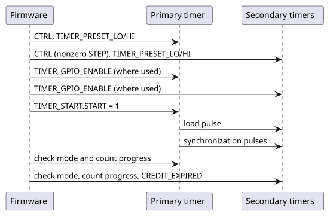
Read a Timestamp
The count occupies two live 32-bit registers with no snapshot latch. For a primary counting monotonically between reads, read high, low, then high again; retry if the high halves differ. Do not restart it during the read. Use a bounded retry in software if register access can stall.
// OCTS system timer register addresses.
// In SMC-local address space.
#define OCTS_BASE 0xC000A000
#define OCTS_REG_TIMER_COUNT_LO (OCTS_BASE + 0x14)
#define OCTS_REG_TIMER_COUNT_HI (OCTS_BASE + 0x18)
uint64_t octs_read_count(void) {
uint32_t hi, lo;
// Retry if the high half changed while reading the low half.
do {
hi = read32(OCTS_REG_TIMER_COUNT_HI);
lo = read32(OCTS_REG_TIMER_COUNT_LO);
} while (read32(OCTS_REG_TIMER_COUNT_HI) != hi);
return ((uint64_t)hi << 32) | lo;
}A secondary can correct its count at a credit boundary, including backward corrections. The monotonic-counter retry rule alone does not guarantee an atomic secondary timestamp across such a correction. Applications needing that guarantee require a system-level coherent capture scheme.
Counts use primary clock units, not inherently nanoseconds. Convert using the configured clock frequency. Sequential software reads of separate timers also include bus-access delay and are not simultaneous measurements.
Monitor and Reconfigure
Read CREDIT_EXPIRED to observe the largest interval spent waiting for
credit since the last clear. Write any value to start a new observation
window. Choose thresholds from the actual clocks and credit settings;
a universal good/warning/error scale would be misleading.
If waiting exceeds the expected interval, check primary operation, pulse routing, GPIO ownership and capture width. Clearing the diagnostic does not resynchronize the timer. A missed pulse or incompatible presets requires coordinated recovery.
Do not treat START as stop/resume. For role, preset or timing changes that must preserve a common epoch, coordinate all consumers, reset the timers, then repeat Configure and Start. An uncoordinated live change can disrupt pulse capture or move secondary timestamps backward.
2.2.13. Telemetry Receiver
Buffer Management
-
Check
STATUS.BUFFER_EMPTYbefore reading. -
Read
TELEMETRY_PROBE_IDandTELEMETRY_COUNTER_VLDS, then the required valid counter registers. Unused or invalid counter positions read as zero. -
Write a one to
CTRL.BUFFER_POPafter consuming the message. -
Repeat while the queue is nonempty.
Only one software consumer should own this sequence. Reception does not stop when the queue fills: a new message replaces the oldest, so incoming traffic can replace the head while it is being read, and these reads are not an atomic snapshot. Producers sharing a receiver must serialize complete messages.
Preserve CTRL.BUFFER_THRESHOLD and any outstanding TX-flush request when
issuing a pop or RX-flush pulse. These fields share one register; a full-word
write containing only the pulse bit would overwrite the other writable fields.
Serialize control-register updates between software contexts.
For notification on any queued message, set the threshold to zero and enable
INTR_ENABLE.BUFFER_THRESHOLD. The CSR field is 12 bits, but the core compares
only its low $clog2(BUFFER_DEPTH)+1 bits with occupancy, so values alias modulo
2 * BUFFER_DEPTH. The interrupt asserts while occupancy is strictly greater
than the threshold and occupancy never exceeds BUFFER_DEPTH, so only
thresholds 0 to BUFFER_DEPTH - 1 can assert it. With the default depth 8,
writing 16 acts as 0, and 8 to 15 never assert the interrupt from occupancy.
// Telemetry receiver register addresses, for receiver `i`.
// In SMC-local address space.
#define TELEMETRY_BASE(i) (0xC0009000 + ((i) * 0x100))
#define TELEMETRY_REG_CTRL(i) (TELEMETRY_BASE(i) + 0x0)
#define TELEMETRY_REG_STATUS(i) (TELEMETRY_BASE(i) + 0x4)
#define TELEMETRY_REG_PROBE_ID(i) (TELEMETRY_BASE(i) + 0x14)
#define TELEMETRY_REG_COUNTER_VLDS(i) (TELEMETRY_BASE(i) + 0x18)
#define TELEMETRY_REG_COUNTER(i, n) (TELEMETRY_BASE(i) + 0x80 + ((n) * 0x4))
// Register constants.
#define TELEMETRY_CTRL_BUFFER_POP 0x1
#define TELEMETRY_CTRL_RX_FLUSH 0x10
#define TELEMETRY_STATUS_BUFFER_EMPTY 0x1// Consume every queued message on receiver `i`.
void telemetry_drain(unsigned i) {
while (!(read32(TELEMETRY_REG_STATUS(i)) & TELEMETRY_STATUS_BUFFER_EMPTY)) {
uint32_t probe_id = read32(TELEMETRY_REG_PROBE_ID(i));
uint32_t valid = read32(TELEMETRY_REG_COUNTER_VLDS(i));
for (unsigned n = 0; n < 32; n++) {
if (valid & (1u << n)) {
uint32_t value = read32(TELEMETRY_REG_COUNTER(i, n));
// Handle the counter value here...
(void) probe_id;
(void) value;
}
}
// Pop the message, preserving the threshold and any
// outstanding TX-flush request.
uint32_t ctrl = read32(TELEMETRY_REG_CTRL(i))
& ~(TELEMETRY_CTRL_BUFFER_POP | TELEMETRY_CTRL_RX_FLUSH);
write32(TELEMETRY_REG_CTRL(i), ctrl | TELEMETRY_CTRL_BUFFER_POP);
}
}Flush Operations
-
Local discard: pulse
CTRL.TELEMETRY_RX_FLUSH. This discards queued messages and resets assembly position, without erasing stored bytes or flushing the wrapper crossing FIFO. New traffic can make the queue nonempty again. -
Upstream flush: set
CTRL.TELEMETRY_TX_FLUSHand poll until hardware clears it after acknowledgement. Choose a firmware timeout appropriate to the producer; the core provides no fixed completion deadline.
Neither operation makes stale trailing blocks safe: producers must still write the full configured message footprint and invalidate unused counters.
Interrupt Handling
Read INTR_STATUS and service the enabled sources. For BUFFER_THRESHOLD,
drain until occupancy is at most the threshold; clear the threshold test bit
if software asserted it. For MISSING_LAST, investigate the producer’s framing
and write one to that status bit after handling the event. A receiver flush
alone does not acknowledge this sticky interrupt.
2.2.14. AVSBus Controller
The controller starts issuing slave resync operations as soon as its resets are released, using a divide-by-4 AVS clock, so configuration adjusts defaults rather than enabling the block:
-
If the default AVS clock is not wanted, set
AVS_CFG_1.TURN_OFF_ALL_PREMUX_CLOCKS, writeAVS_CLOCK_SELECT,CLK_DIVIDER_VALUEandCLK_DIVIDER_DUTY_CYCLE_NUMERATOR, then clearTURN_OFF_ALL_PREMUX_CLOCKS. -
Set
AVS_CFG_0.MAX_RETRIESandAVS_CFG_0.RESYNC_INTERVAL. -
Clear the
AVS_INTERRUPT_MASKbits for the sources of interest. The register is a disable mask and resets to all ones, so every source starts masked. -
Write commands to
AVS_CMDand collect responses fromAVS_READBACK.
A write to a full command FIFO is dropped and completes with an error response.
When queuing commands in a burst, check AVS_NORMAL_STATUS.CMD_FIFO_FULL or
AVS_FIFOS_STATUS.CMD_FIFO_VACANT_SLOTS first, or detect the drop from the
write’s error response or CMD_FIFO_OVERFLOW_INT. Clear an interrupt by writing
one to the matching bit of AVS_INTERRUPT_CLEAR, which self-clears.
2.2.15. I2C Controllers
The SMC I2C controllers are OpenTitan I2C cores behind an OCAH register wrapper.
Program them following the
OpenTitan I2C programmer’s guide
and its device interface functions (DIF). In addition, set the wrapper’s
I2C_CTRL.I2C_EN to select the I2C function on the instance’s pads, and keep
I2C_CTRL.I2C_CONTROLLER_MODE_EN, which sets the direction of the SMBus alert
and suspend pads, in agreement with the role selected by CTRL.ENABLEHOST or
CTRL.ENABLETARGET. Neither wrapper field enables the core itself.
3. SEP Programming Guide
This Chapter details the bring-up process and run-time operation of the SEP for the purposes of firmware development, with references to the Production SEP ROM.
The Appendix contains a detailed reference to the Production SEP ROM implementation.
3.1. Bring-up
3.1.1. Address Map
See the Memory Map chapter of the Technical Reference Manual for the SEP CPU’s logical address-space layout and the full generated component address map.
3.1.2. Early Initialization
The SEP CPU cold-reset vector is 0x1004_0000, corresponding to the start of
BL0 ROM.
The production BL0 ROM linker script — hw/sys/sep/bootrom/prod/link/rom.ld
places the executable .text and read-only data .rodata sections in ROM. The
.data section and other runtime data are included in the ROM image, but have
runtime addresses within DCCM at 0xC004_0000. This data is copied by BL0 ROM
into DCCM by early assembly code in vector.S. The stack and the .bss section
reside only in DCCM. Unlike the SMC SRAM, ICCM and DCCM do not require
initialization.
3.1.3. NMI Vector Programming
The Security Processor (SEP) runs a VeeR-EL2 core whose Non-Maskable Interrupt
is driven by the watchdog timer bark (sep.sv wires nmi_int to
intr_wdog_timer_bark). When the NMI asserts, the core jumps to the address
held in the SEP_NMI_VEC register of the sep_cpu_ctrl block (offset 0x180).
Software reads and writes SEP_NMI_VEC as a byte address. The register’s
nmi_vec field occupies bits 31:1, so bit 0 is reserved and always reads back
as zero; the hardware imposes no stricter alignment than that. The reference DV
firmware nevertheless aligns its NMI trampoline to 256 bytes, which the linker
script enforces.
|
The
If a bark arrives while the reset value is still in place, the core jumps to
|
Because SEP_NMI_VEC_LOCK is write-one-to-set and sticky until reset, the
vector cannot be repointed once locked. Firmware that needs to install a
different handler after lock must do so through its own indirection — the
reference firmware keeps a runtime-writable handler pointer that the trampoline
dispatches through, so the locked vector always targets the trampoline.
If the watchdog bite threshold is also enabled, an unserviced bark still escalates to the watchdog reset path and resets the SEP. A mis-programmed vector therefore degrades to a watchdog reset rather than a silent hang, but it does so only after the bite interval and without running any handler.
3.1.4. Configuration Straps
BL0 selects startup options, such as primary or secondary chiplet operation and
normal or recovery boot, from configuration straps on SMC GPIO pins. The board
and boot firmware define which option each pin carries. A strap latch follows
its pad while cold reset is asserted and holds the level when cold reset is
released, so read the captured levels through the GPIO control registers after
reset release, as described in Reading Configuration Straps. strap_valid indicates
that a pin supports capture, not that reset has completed.
3.1.5. Reset Overview
SEP and Key Manager firmware can request the resets below. The cryptographic engine resets drain and isolate the engines' AXI paths in hardware before the reset takes effect. A debugger can also drive the SEP reset ports through IC_RESET Overrides.
| Reset | Control | Requested by | Sequence |
|---|---|---|---|
Cryptographic engines, TRNG and Key Manager |
|
SEP firmware |
|
Key Manager restart |
|
Key Manager firmware |
|
SEP CPU on watchdog bite |
SEP watchdog bite threshold |
SEP firmware arms it; an unserviced watchdog triggers it |
3.1.6. Software Reset of the Cryptographic Engines
SEP_RESET_CTRL.SW_RESET_N resets to 0x7E: the Key Manager is held in reset
and OTBN, AES, HMAC, KMAC, the TRNG and Adams Bridge are released. To reset one
engine:
-
Make sure no operation the reset would corrupt is in flight, or accept that it is aborted.
-
Clear the engine’s bit with a read-modify-write that preserves the other bits. Hardware isolates the engine’s AXI paths, drains accepted transactions, and only then asserts the reset; new accesses on those paths complete with SLVERR and read data
0x1501A7ED. -
Set the bit again. Reset and isolation release together.
// SEP reset control register address.
// In SEP-local address space.
#define SEP_RESET_CTRL_REG_SW_RESET_N 0x10803000
// SW_RESET_N bits; 0 holds the engine in reset.
#define SW_RESET_N_KM 0x01
#define SW_RESET_N_OTBN 0x02
#define SW_RESET_N_AES 0x04
#define SW_RESET_N_HMAC 0x08
#define SW_RESET_N_KMAC 0x10
#define SW_RESET_N_TRNG 0x20
#define SW_RESET_N_ABR 0x40// Hold the engines in `mask` in reset, preserving the other bits.
void sep_engine_reset_assert(uint32_t mask) {
uint32_t val = read32(SEP_RESET_CTRL_REG_SW_RESET_N);
write32(SEP_RESET_CTRL_REG_SW_RESET_N, val & ~mask);
}
// Release the engines in `mask`, preserving the other bits.
void sep_engine_reset_release(uint32_t mask) {
uint32_t val = read32(SEP_RESET_CTRL_REG_SW_RESET_N);
write32(SEP_RESET_CTRL_REG_SW_RESET_N, val | mask);
}Releasing the Key Manager from reset starts it; the SEP host can still reach the
SEP-to-KM mailbox while the Key Manager is in reset, because the mailbox’s
SEP-facing side is in the Key Manager’s cold domain. The Key Manager can also
restart itself by writing 0x53525354 (ASCII SRST) to its SOFT_RST_CODE
register; any other value has no effect. The soft reset takes the same
warm-reset path without isolation and re-enters the Key Manager Application ROM.
It keeps the cold-domain state: the KM SRAM contents,
BOOT_STATUS.COLD_BOOT_DONE, which the ROM reads to skip cold initialization,
OTP_READ_LOCK_COLD, the SRAM scrambling state and the mailbox FIFO contents,
which the ROM flushes during boot, so a request pending at the reset is lost.
It restores the warm-domain state: IRQ_ENTRY_ADDR and IRQ_ENTRY_LOCK return
to their reset values, OTP_READ_LOCK clears, and the local copies of the UIDs,
class key and public identities reload from the shadow bus.
The TRNG bit resets the whole internal entropy chain. Follow Failure Handling and Recovery rather than toggling it on its own.
A watchdog restart resets the SEP CPU but not the cryptographic engines or
their SW_RESET_N requests. Recovery firmware must account for engine state
that survived the restart, by resetting the engines or checking their state,
before submitting new work.
3.1.7. Programmable Interrupt Controller (PIC)
The
EL2 Programmer’s Reference Manual
defines the VeeR EL2 core and PIC programming model. The PIC numbers external
interrupt sources from 1; source 0 does not exist. Program source N through the per-source arrays, each indexed at
N * 4 from its region base:
-
meipl[N](PIC base+0x0000) sets its priority; -
meie[N](+0x2000) enables it; -
meigwctrl[N](+0x4000) configures its gateway; and -
meigwclr[N](+0x5000) clears its gateway’s pending state.
Pending status is the bitmap meip at +0x1000: source N is bit N % 32 of
meip[N / 32]. Never program entry 0 of the per-source arrays; it is reserved,
reads as zero and discards writes. Register tests that walk the PIC map must
skip it. The
SEP CPU Interrupt Vector Map
in the Technical Reference Manual lists the sources. Some of them need
specific service:
| Source | Service |
|---|---|
39, entropy pool pointer fault |
Level-sensitive with no write-one-to-clear.
Mask the source, or scrub the pool with |
40, token match fault |
Stays asserted until reset, with no write-one-to-clear.
Read |
41, 42, DMA register-path and host-path faults |
Write |
43, peripheral register-bridge fault |
Read |
// PIC register addresses, for source `n`.
// In SEP-local address space.
#define PIC_BASE 0xC0080000
#define PIC_REG_MEIPL(n) (PIC_BASE + 0x0000 + ((n) * 0x4))
#define PIC_REG_MEIE(n) (PIC_BASE + 0x2000 + ((n) * 0x4))
#define PIC_REG_MEIGWCTRL(n) (PIC_BASE + 0x4000 + ((n) * 0x4))
#define PIC_REG_MEIGWCLR(n) (PIC_BASE + 0x5000 + ((n) * 0x4))
// Register constants.
#define PIC_MEIGWCTRL_ACTIVE_LOW 0x1
#define PIC_MEIGWCTRL_EDGE 0x2// Enable source `n` (1 or above) at `priority`. `gwctrl` selects the
// gateway's polarity and type. The core takes the interrupt only while
// `mie.MEIE` is set and `priority` is above the `meipt` threshold.
void pic_enable_source(unsigned n, uint32_t priority, uint32_t gwctrl) {
write32(PIC_REG_MEIGWCTRL(n), gwctrl);
write32(PIC_REG_MEIGWCLR(n), 0);
write32(PIC_REG_MEIPL(n), priority);
write32(PIC_REG_MEIE(n), 1);
}3.1.8. Memory Error Handling
Corrected ICCM and DCCM errors are counted in two counters whose request is
delivered as MCEIP (mcause = 0x8000_001E). Bits [26:0] of each counter
are the count and bits [31:27] a threshold exponent: the request rises when
the count reaches 2threshold. To use the interrupt:
-
Program a threshold before enabling the interrupt. Counters and thresholds reset to zero, and a zero threshold raises the request on the first corrected error.
-
Set
mie[30](MCEIE), which is clear at reset; until then, corrected errors are counted silently. -
In the handler, read both counters to attribute the error, then write the one that tripped.
MCEIPfollows the comparator and has no write-one-to-clear, so returning without dropping the count below the threshold re-enters the handler. To clear the count while keeping thresholdN, writeN << 27.
A low threshold reports a degrading SRAM early at the cost of an interrupt per error; a high one lets transient flips accumulate before firmware is told.
Uncorrectable errors trap on the instruction that hit them, as an instruction,
load or store access fault, or as an NMI on the fast-interrupt path. On an
access fault, read mscause (0x7FF): 1 means uncorrectable ECC, which
mcause alone does not distinguish from a bad pointer. Treat the error as fatal
for the affected context. Do not resume the trapping instruction, since a retry
re-reads the same corrupted location; reset or quarantine the affected memory
instead.
3.2. OCAH TRNG Bring-up
The SEP has three entropy streams: the Key Manager, the AES/KMAC/OTBN group, and
the fabric entropy pool. SEP_CPU_CTRL.EXT_TRNG_SRC_SEL selects the source of
each stream independently:
-
bit 0 selects the Key Manager stream;
-
bit 1 selects the AES/KMAC/OTBN stream; and
-
bit 2 selects the fabric entropy-pool stream.
A bit value of 0 selects the internal ESRC → CSRNG → EDN chain. A bit value of 1 selects the corresponding external TRNG stream and bypasses the internal chain for that stream.
|
The OCAH internal entropy source has not been certified. Consequently,
The CSRNG and EDN blocks are derived from OpenTitan. OpenTitan describes CSRNG as compatible with NIST SP 800-90A and AIS31 and implements the approved CTR_DRBG construction, but this is not a certification of the OCAH integration. NIST CAVP validation applies to a specific implementation and operational environment. No CAVP or FIPS 140 validation is claimed for the OCAH entropy chain. See the OpenTitan CSRNG specification and NIST CAVP. |
EXT_TRNG_SRC_SEL_LOCK.LOCK makes the selection read-only until SEP reset.
Production firmware should lock the selection after it has verified that the
chosen source is operational. An external-TRNG integration must initialize and
test that device through its platform-specific control interface; the OCAH
sequence below applies only to streams firmware explicitly changes to 0.
3.2.1. Bring-up Sequence at a Glance
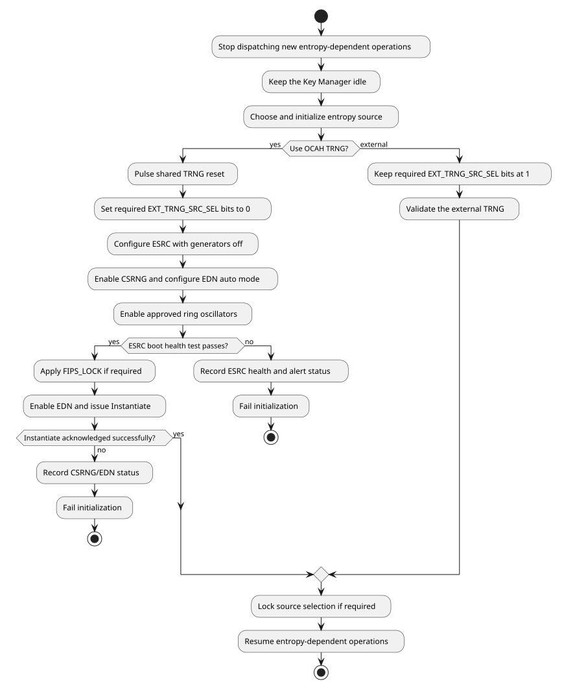
3.2.2. Internal Entropy-chain Initialization
The entropy source, CSRNG and EDN are OpenTitan IP. The OpenTitan entropy source, CSRNG and EDN programmer’s guides give the full programming sequence for each block. The sequence below composes them for the OCAH chain.
Use generated register definitions and named fields rather than copying complete
register literals. Several control fields use MuBi4 encodings, for which true is
0x6 and false is 0x9.
-
Prevent new entropy-dependent operations during initialization. On first boot, initialize entropy before accepting crypto work; the Key Manager is held in software reset, which keeps it idle. A runtime recovery must wait until KM is idle, or hold it in software reset, before pulsing the TRNG reset. AES, KMAC, and OTBN may stall until fresh entropy is available, or, after each is idle, firmware may hold them in software reset to abort their operations.
-
Reset the internal entropy chain by clearing and then setting
SEP_RESET_CTRL.SW_RESET_N.trng_sw_rst_nwith read-modify-write operations that preserve the other reset bits. This reset covers ESRC, CSRNG, EDN, their control-plane adapters, buffered internal entropy, and the fabric entropy pool.ESRC.CTRL[0]is reserved and is not a reset control. -
Select the internal source by clearing each required bit in
EXT_TRNG_SRC_SEL. This mux programming is a required part of OCAH TRNG initialization; the reset value deliberately continues to select the external source. -
Disable
ESRC.RING_OSC_ENABLE.ENABLEwhile programming the entropy-source policy. Program the approved sampling, health-test, FIFO, conditioning, and module-enable fields. In particular, the intended standards-aligned profile requiresCTRL.MODULE_ENABLE=1, the approved health-test thresholds and window, entropy-compressor bypass disabled, and SHA-256 whitening enabled. WriteHT_WATERMARK_NUMbefore togglingMODULE_ENABLEwhen the health-test watermark needs a deterministic baseline: the selector does not clear the shared watermark, and the 0-to-1 transition re-arms it. -
Enable the CSRNG with
CSRNG.CTRL.ENABLE. LeaveSW_APP_ENABLE,READ_INT_STATE, andFIPS_FORCE_ENABLEfalse unless the security policy explicitly requires those diagnostic interfaces. -
Configure EDN continuous-operation mode while EDN is disabled:
-
program
RESEED_CMDandGENERATE_CMDwith commands that request entropy from CSRNG; -
program
MAX_NUM_REQS_BETWEEN_RESEEDS; and -
set
BOOT_REQ_MODEfalse andAUTO_REQ_MODEtrue.
-
-
Enable the approved ring oscillators and sample clocks in
ESRC.RING_OSC_ENABLE. -
Poll
ESRC.MAIN_SM_STATUS.BOOT_PHASE_DONEwith a bounded timeout. While waiting, fail initialization ifMAIN_SM_STATUS.ALERT,MAIN_SM_STATUS.ERR, orINTR_STATUS.PERSISTENT_FAILUREasserts.BOOT_PHASE_DONEproves that the startup health-test gate opened; it does not by itself prove that CSRNG accepted a complete seed. -
If required by the security policy, set
ESRC.FIPS_LOCK.LOCKafter startup passes and before exposing entropy to consumers. The lock freezes the certified ESRC configuration until the internal entropy chain is reset.DEBUG_CTRLintentionally remains outside this lock; the platform must separately restrict any externally routed debug-observation signal. To close theFIFO_RDATAread path on a locked part, first clearFIFO_CTRL.ENABLE, readFIFO_RDATAuntilFIFO_STATUS.LEVELis zero, and only then setFIPS_LOCK.LOCK.FIFO_CTRL.ENABLEgates only the FIFO write, so the DRBG seed stream continues either way. -
Enable EDN with
EDN_ENABLE=true,AUTO_REQ_MODE=true,BOOT_REQ_MODE=false, andCMD_FIFO_RST=false. -
Wait for both
EDN.SW_CMD_STS.CMD_RDYandCMD_REG_RDY, then write an Instantiate command with no additional data toEDN.SW_CMD_REQ. PollCMD_ACKorINTR_STATE.EDN_CMD_REQ_DONEwith a bounded timeout and requireCMD_STSto report success. -
Lock
EXT_TRNG_SRC_SELif required, then release or initialize the entropy consumers.
The EDN Instantiate acknowledgement is the software-visible readiness event:
CSRNG cannot acknowledge that command until it has accepted a complete ESRC
seed. Firmware therefore does not need a delay or a hierarchical
drbg_seed_valid probe. BOOT_PHASE_DONE remains useful for separating an
ESRC startup-health failure from a downstream CSRNG or EDN failure.
|
Do not set EDN boot-request and auto-request mode true at the same time. Boot-request mode takes precedence and remains in its completed state until firmware clears it; merely setting both modes does not transition EDN to continuous auto-request operation.
|
3.2.3. Failure Handling and Recovery
Treat entropy initialization as a fallible operation. Every poll must have a platform-defined timeout, and firmware should preserve enough status to distinguish:
-
ESRC startup-health failure (
MAIN_SM_STATUS,HEALTH_TEST_STATUS, andINTR_STATUS); -
CSRNG command, exception, recoverable-alert, or fatal-alert failure; and
-
EDN command, recoverable-alert, or fatal-alert failure.
The boot policy must define whether any such failure stops secure boot or enters a platform recovery flow. Continuing into an entropy-dependent operation is not recovery: the consumer can wait indefinitely for entropy.
For a runtime restart of the internal chain:
-
Stop dispatching new entropy-dependent operations. The Key Manager must be idle before the TRNG reset is asserted: wait until it is not consuming entropy, or hold it in software reset. If policy requires aborting AES, KMAC, or OTBN in-flight work, wait for each to become idle, save
SW_RESET_N, and hold those consumers in reset. -
Clear
trng_sw_rst_n; hardware drains accepted control transactions, isolates the three internal TRNG register ports, and clears buffered internal and post-mux entropy before asserting reset. -
Set
trng_sw_rst_n. -
Repeat the complete internal initialization sequence, including the bounded ESRC startup poll and acknowledged EDN Instantiate command.
-
Restore any consumer-reset state saved in the first step after initialization succeeds.
The native EDN boundary uses request/acknowledge, not valid/ready. During TRNG reset the post-mux adapters suppress acknowledgements and discard buffered entropy. A request already asserted by AES, KMAC, or OTBN remains asserted and is serviced with fresh entropy after the adapter and internal chain restart. Resetting those consumers is an operation-abort policy, not a prerequisite for the coordinated TRNG reset.
The Key Manager AXI-Stream has no post-mux adapter, so TRNG reset does not scrub it. A reset while the DRBG sampler is requesting or assembling a word can mix leftover bytes into the next DATA read or raise a stream error. The Key Manager must be idle before the SEP host asserts the TRNG reset.
Do not try to recover only ESRC with CTRL[0]. A shared TRNG reset invalidates
the entire internal chain.
Changing EXT_TRNG_SRC_SEL takes effect immediately, with no switch-complete
handshake and no flush of previously queued words: an unselected internal
endpoint keeps its queued data, and an unselected external input is discarded.
Quiesce the consumers before changing the selection, and account for the
buffered words when choosing between a source change and a TRNG reset. Resetting
the internal TRNG does not unlock EXT_TRNG_SRC_SEL_LOCK.
3.3. General Operation
3.3.1. SEP to Key Manager Mailbox
The SEP and Key Manager communicate through a shared mailbox, which is
implemented with two FIFOs. Messages consist of an arbitrary number of
32-bit words, which are delimited by writing the 1 to the WRITE_SEPARATOR
register before the last word of the message is written. When reading messages,
the message is delimited by checking the outbound_separator field (bit 25) of
the SEP_STATUS register.
The FIFO directions should be read as relative to the Key Manager — the SEP writes messages to the inbound (from the KM’s perspective) FIFO and reads messages from the outbound (from the KM’s perspective) FIFO.
The SEP to Key Manager mailbox can also be configured to raise interrupts when either the inbound or the outbound FIFOs have overflowed, or have space available for writing and reading respectively.
|
The SMC and SEP address maps contain additional mailboxes for communication between each other. The SMC and other SEP mailboxes implement a different register interface from the SEP to KM mailbox register interface described here. Unlike the other mailboxes, this mailbox is internal to the SEP/KM and is inaccessible from the other agents on the system. |
// Key Manager mailbox register addresses.
// In SEP-local address space.
#define KM_MAILBOX_BASE 0x10920000
#define KM_MAILBOX_REG_WRITE_DATA (KM_MAILBOX_BASE + 0x0)
#define KM_MAILBOX_REG_WRITE_SEPARATOR (KM_MAILBOX_BASE + 0x4)
#define KM_MAILBOX_REG_READ_DATA (KM_MAILBOX_BASE + 0x8)
#define KM_MAILBOX_REG_STATUS (KM_MAILBOX_BASE + 0xC)
#define KM_MAILBOX_REG_IRQ_STATUS (KM_MAILBOX_BASE + 0x10)
#define KM_MAILBOX_REG_IRQ_ENABLE (KM_MAILBOX_BASE + 0x14)
#define KM_MAILBOX_REG_CTRL (KM_MAILBOX_BASE + 0x18)
// Key Manager mailbox register constants.
#define KM_MAILBOX_STATUS_INBOUND_FULL 0x2
#define KM_MAILBOX_STATUS_OUTBOUND_EMPTY 0x4
#define KM_MAILBOX_STATUS_OUTBOUND_SEPARATOR 0x2000000// Send an arbitrary length message to the Key Manager.
void km_mailbox_send(const uint32_t *message, size_t count) {
for (size_t i = 0; i < count; i++) {
// Poll until we can write.
while (read32(KM_MAILBOX_REG_STATUS) & KM_MAILBOX_STATUS_INBOUND_FULL);
if (i == count - 1) {
// Writing `1` to the `WRITE_SEPARATOR` register
// signals that the next written word terminates
// the message. This is automatically cleared
// after writing `WRITE_DATA`.
write32(KM_MAILBOX_REG_WRITE_SEPARATOR, 0x1);
}
write32(KM_MAILBOX_REG_WRITE_DATA, message[i]);
}
}
// Receive an arbitrary length message from the Key Manager.
// The received message is stored in the array pointed to by `words`.
// At most `capacity` words are written. Whether the message has
// ended is stored in `finished`.
// This function only completes once either `capacity` words have
// been read, or the message terminates before filling the buffer.
// Returns the number of read words, which may be less than
// `capacity` if the message terminates before filling the buffer.
size_t km_mailbox_receive(uint32_t *words, size_t capacity, bool *finished) {
size_t count = 0;
*finished = false;
while (count < capacity) {
// Poll until a word is available to read.
while (read32(KM_MAILBOX_REG_STATUS) & KM_MAILBOX_STATUS_OUTBOUND_EMPTY);
// Read message word and increment count.
words[count++] = read32(KM_MAILBOX_REG_READ_DATA);
// Was this the last word of the message?
*finished = read32(KM_MAILBOX_REG_STATUS)
& KM_MAILBOX_STATUS_OUTBOUND_SEPARATOR;
if (*finished) {
break;
}
}
// Out of capacity, or message has ended.
return count;
}|
The sample implementations provided are blocking on space being available to read/write in the FIFOs. A more performant implementation should be interrupt-driven to keep the FIFOs filled, without blocking the SEP’s other operations. See also the DV SEP firmware driver |
3.3.2. Watchdog
The SEP watchdog is an OpenTitan Always-On Timer. Program it following the
OpenTitan Always-On Timer programmer’s guide,
which gives the full watchdog initialization, servicing and locking sequence.
The OCAH integration connects the watchdog as follows. Firmware must service it
periodically by resetting its count, proving that the SEP CPU is still making
progress. If the count reaches the bark threshold, the watchdog raises the NMI,
which jumps through SEP_NMI_VEC; program and lock that vector first, as
NMI Vector Programming describes. If the count reaches the bite
threshold, the watchdog requests a SEP CPU reset. wdt_debug_sleep_mode_i
selects whether the timer keeps counting while the CPU is halted in debug.
// Watchdog register addresses.
// In SEP-local address space.
#define WDOG_BASE 0x10801000
#define WDOG_REG_REGWEN (WDOG_BASE + 0x18)
#define WDOG_REG_CTRL (WDOG_BASE + 0x1C)
#define WDOG_REG_BARK_THOLD (WDOG_BASE + 0x20)
#define WDOG_REG_BITE_THOLD (WDOG_BASE + 0x24)
#define WDOG_REG_COUNT (WDOG_BASE + 0x28)
// Register constants.
#define WDOG_CTRL_ENABLE 0x1// Start the watchdog and lock its configuration until reset.
// Program and lock SEP_NMI_VEC before calling this.
void watchdog_start(uint32_t bark_count, uint32_t bite_count) {
write32(WDOG_REG_CTRL, 0);
write32(WDOG_REG_COUNT, 0);
write32(WDOG_REG_BARK_THOLD, bark_count);
write32(WDOG_REG_BITE_THOLD, bite_count);
write32(WDOG_REG_CTRL, WDOG_CTRL_ENABLE);
// Writing 0 to REGWEN locks CTRL and both thresholds.
write32(WDOG_REG_REGWEN, 0);
}
// Service the watchdog before the count reaches the bark threshold.
void watchdog_pet(void) {
write32(WDOG_REG_COUNT, 0);
}3.3.3. DMA
The SEP DMA is the OpenTitan DMA controller. Program it following the
OpenTitan DMA programmer’s guide,
which gives the full programming sequence; the OCAH integration differs as
described here. Use address-space ID 0x7, the
core’s internal host port, for both source and destination, with both high
address registers zero; the other address spaces are tied off and never
complete. Reachability is governed by the SEP fabric and filters.
For one contiguous memory-to-memory copy:
-
Wait until the previous operation has finished and configuration is writable (
CFG_REGWEN). Configure a valid enabled-memory base/limit pair and setRANGE_VALIDbefore starting; observeRANGE_REGWENif firmware has locked that configuration. -
Write
SRC_ADDR_LOandDST_ADDR_LO, clear both high address registers, and select0x7for both fields inADDR_SPACE_ID(0x77combined). -
Set
TRANSFER_WIDTHto 0, 1 or 2 for 1, 2 or 4 bytes respectively. Align both addresses to that width. EnableINCREMENTand clearWRAPin bothSRC_CONFIGandDST_CONFIG. -
Set
CHUNK_DATA_SIZEandTOTAL_DATA_SIZEto the same nonzero byte count. -
Write
CONTROLwithOPCODE=0(copy),HARDWARE_HANDSHAKE_ENABLE=0,INITIAL_TRANSFER=1andGO=1. -
Check
STATUS.ERRORandERROR_CODEwhile waiting forSTATUS.DONE, with a bounded wait. For interrupt-driven operation, enable the required completion and error sources and acknowledgeINTR_STATE. The status completion and error bits are write-one-to-clear.
For hashing, select opcode 1, 2 or 3 for SHA-256, SHA-384 or SHA-512 and use
4-byte transfers. Set INITIAL_TRANSFER on the first transfer of the message,
and read the digest only when STATUS.SHA2_DIGEST_VALID is set. DIGEST_SWAP
controls byte order within each digest register, not register order.
Only handshake input 0 is connected, to the SPI host’s LSIO trigger. For SPI
handshake operation, select trigger 0 in HANDSHAKE_INTR_ENABLE, configure the
peripheral FIFO and chunk size, and enable hardware handshake. Each service
operation moves one chunk, and chunk completion is not reported per trigger in
this mode. Clear GO when stopping handshake operation. For a peripheral that
needs an explicit trigger-clear write, configure CLEAR_INTR_SRC,
CLEAR_INTR_BUS, INTR_SRC_ADDR and INTR_SRC_WR_VAL for the connected host
port (CLEAR_INTR_BUS bit 0 = 1); otherwise leave that source unselected in
CLEAR_INTR_SRC.
To abort an active operation, request CONTROL.ABORT and wait for
STATUS.ABORTED before reusing its buffers or configuration.
3.3.4. SPI Host
The SEP SPI host is the unmodified OpenTitan SPI Host. Program it following the
OpenTitan SPI Host programmer’s guide,
which gives the full initialization, command and software-reset sequences. In
the OCAH integration, its error and event interrupts share one PIC line. In the handler, read INTR_STATE to tell them
apart:
-
INTR_STATE.ERRORis latched. Clear it by writing one to it after handlingERROR_STATUS; clearingERROR_STATUSalone does not clear it. -
INTR_STATE.SPI_EVENTfollows the level of the events selected byEVENT_ENABLE; service the event condition or changeEVENT_ENABLE.
INTR_ENABLE gates only the interrupt line, so both state bits can be polled
with it clear. Activity is reported only by STATUS.ACTIVE. Access the
registers with 32-bit accesses: the 64-bit peripheral bus splits an 8-byte write
into two 4-byte register writes.
3.3.5. Entropy Pool
Read the entropy pool’s DATA register with a single 64-bit access; each read
pops one conditioned 64-bit word. A read of an empty pool returns SLVERR
rather than a zero word, and that error reaches the CPU as a bus error, so check
STATUS.fifo_level before reading. STATUS and IRQ_CAUSE are non-destructive,
and STATUS.pool_low reports the low-watermark condition. A 32-bit read of a
register’s upper word is not decoded and, for DATA, does not pop the pool. The pool is read-only and accepts
single-beat accesses only.
3.3.6. Cryptographic Engines
AES, HMAC, KMAC and OTBN are OpenTitan IP and Adams Bridge is Caliptra IP. Program each engine following its upstream programmer’s guide, which gives the full programming sequence; the subsections below give only the OCAH differences. Firmware can drive the OpenTitan engines through the OpenTitan cryptographic library API. The OCAH Key Manager is not the OpenTitan key manager, and its firmware interface is in Key Manager Application ROM.
The Key Manager delivers keys and seeds to the accelerators over a private interface, as two shares whose XOR is the value; the Key Manager Key Delivery section of the Technical Reference Manual defines the format. Software on the SEP host configures each accelerator to consume the delivered value, as the subsection for each engine describes.
AES
Program the cipher following the
OpenTitan AES programmer’s guide.
To use a delivered key, set CTRL_SHADOWED.sideload; while it is 0 the engine
uses its software key registers and reports no error. Program
CTRL_SHADOWED.key_len to the 256-bit encoding, since a shorter setting
consumes only part of the delivered key.
HMAC
Program the engine following the
OpenTitan HMAC programmer’s guide.
HMAC has no delivered-key select bit: it uses the delivered key whenever
KEY_CTRL.KEY_VALID is set. Program CFG.key_length to the 256-bit encoding.
An unset or unsupported length raises a configuration error, but a supported
length that disagrees with the delivered key produces a wrong but repeatable
digest with no error.
KMAC
Program the engine following the
OpenTitan KMAC programmer’s guide.
To use a delivered key, set CFG_SHADOWED.sideload. The key length is applied
automatically. Starting a keyed operation while KEY_CTRL.KEY_VALID is 0 raises an error.
OTBN
Program the engine and write its programs following the
OpenTitan OTBN programmer’s guide.
To use a delivered key, the OTBN program reads the two shares through the
KEY_S0_L / KEY_S0_H and KEY_S1_L / KEY_S1_H special registers and must
XOR them itself. Reading
a share that is not valid sets ERR_BITS.KEY_INVALID and stops the program.
Adams Bridge
Program the engine following the
Caliptra Adams Bridge documentation.
Enable the seed read before starting an operation that consumes a delivered
seed. The ML-KEM seed read completes only when both
MLKEM_SEED_D and MLKEM_SEED_Z are valid. A seed or message delivered by
the Key Manager and the same words written to the engine’s registers present
the same value, in the word order given in
ABR seed word order.
Detect completion from
STATUS.VALID and issue a zeroize between back-to-back operations, since the
core parks at the end state until then. A malformed register address inside
the Adams Bridge extent does not return a bus error, so do not rely on one.
3.3.7. Token Matching
SEP software or JTAG submits RMA and SEC_DIS tokens through the eFuse MMR interface:
-
Write all eight 32-bit words of the token’s input array (
RMA_SIP_TOKEN_I,RMA_CHIPLET_TOKEN_IorSEC_DISABLE_TOKEN_I). Index 0 holdstoken[31:0]and index 7token[255:224]. -
After all writes complete, write 1 to the token’s
TOKEN_EOPbit (0, 8 or 16). Keep the array unchanged until hashing finishes: the engine streams the array rather than taking a snapshot. Do not start the same engine again while it is hashing; there is no submission queue. -
Poll the token’s
*_TOKEN_MATCHresult with a bounded timeout. Only0x15authorizes the operation; idle (0x00) is not success, and RMA stays idle until fuse sensing completes. CheckTOKEN_MATCH_FAULTas well as the result.
// eFuse token register addresses.
// In SEP-local address space.
#define TOKEN_BASE 0x10930500
#define TOKEN_REG_RMA_SIP_TOKEN_I(i) (TOKEN_BASE + ((i) * 0x4))
#define TOKEN_REG_TOKEN_EOP (TOKEN_BASE + 0x60)
#define TOKEN_REG_RMA_SIP_TOKEN_MATCH (TOKEN_BASE + 0x64)
#define TOKEN_REG_TOKEN_MATCH_FAULT (TOKEN_BASE + 0x70)
// Register constants.
#define TOKEN_EOP_RMA_SIP 0x1
#define TOKEN_MATCH_STATUS 0x3F
#define TOKEN_MATCH_MATCHED 0x15
#define TOKEN_FAULT_RMA_SIP 0x1// Submit the SiP RMA token for the first time since reset.
// Returns whether the token matched.
bool rma_sip_token_submit(const uint32_t token[8], unsigned timeout) {
// token[0] holds bits 31:0 and token[7] bits 255:224.
for (unsigned i = 0; i < 8; i++) {
write32(TOKEN_REG_RMA_SIP_TOKEN_I(i), token[i]);
}
write32(TOKEN_REG_TOKEN_EOP, TOKEN_EOP_RMA_SIP);
// Idle (0x00) is not a result; wait for the comparison to finish.
uint32_t status = 0;
while (status == 0 && timeout--) {
status = read32(TOKEN_REG_RMA_SIP_TOKEN_MATCH) & TOKEN_MATCH_STATUS;
}
if (read32(TOKEN_REG_TOKEN_MATCH_FAULT) & TOKEN_FAULT_RMA_SIP) {
return false;
}
return status == TOKEN_MATCH_MATCHED;
}A fault flag in TOKEN_MATCH_FAULT stays set until reset and raises PIC source
40; mask the source after handling it, as Programmable Interrupt Controller (PIC) describes. A later
successful comparison does not clear the fault or show that operation is safe.
Reset clears the result but not the input arrays or the retained digest, so
reset does not revoke a prior token authorization.
An RMA match authorizes a lifecycle change but does not burn a fuse. After the
match, program the RMA lifecycle bits (LC_STATE[1] for SiP RMA, LC_STATE[2]
for chiplet RMA); the fuse controller gates that programming on the match.
Chiplet RMA additionally requires SiP RMA to be established first. For the
shadow-state transition, either request an explicit shadow update or rely on
TRANSIENT_RMA_EN for automatic updates; the
OTP Fuse Controller
chapter of the Technical Reference Manual gives the transition rules.
3.3.8. Security Disable Recovery
SEC_DIS recovers an A0 part whose fuse sensing fails, for debug. It is a JTAG procedure:
-
Present the SEC_DIS token through
SEC_DISABLE_TOKEN_Ifollowing Token Matching, and pollSEC_DISABLE_TOKEN_MATCHuntil it reads the match code. -
Apply a cold reset. The token arrays and the computed digest survive it, so the match holds from cold-reset release: fuse sensing does not start, every shadow register keeps its reset value, and SEP samples the secure test-mode request one cycle after cold-reset release.
-
Override
sep_reset_nthrough the SEP slice of the IC_RESET TDR to release the SEP reset, which a match alone does not release.
Without the cold reset, the shadow registers keep whatever the failed sense loaded before the match, and the secure test-mode request is never sampled. Present the token only to a part whose fuse sensing fails.
3.3.9. Lifecycle Demotion
The demote (bit 0) and lock (bit 1) fields of the demotion registers are
write-one-to-set and clear only on SEP cold reset. For each boot:
-
Decide whether to enable demotion for this boot.
-
Set
demoteif required, then setlockto commit the decision. The lock can commit either a demoted or a non-demoted state. -
Leave
lockclear only when a later boot stage is to decide.
The Lifecycle Controller chapter of the Technical Reference Manual describes what demotion opens.
4. SEP & SMC Common Blocks and Communication
4.1. Global Aperture and Address Remapping
During early boot, before other chiplets access SEP or SMC resources, program
the global apertures to match the chiplet’s assigned system address map: SEP
SEP_GLOBAL_BASE_ADDR and SEP_REGION_SIZE, and SMC GLOBAL_BASE and
REGION_SIZE. Both region sizes reset to 16 MiB. The apertures of different
chiplets must not overlap, and the hardware does not derive them from the
chiplet ID: any chiplet-ID-based assignment is platform policy that firmware
implements. The chiplet ID and chiplet BAR are available in SMC registers.
Issue a fence between programming these routing registers and later MMIO
accesses that depend on them. The surrounding system must use the same
assignments when it accesses the subsystems.
The SEP has sixteen and the SMC eight alias remap regions, each with an input
range, an output offset and an AxCACHE value that replaces the transaction’s
own on a hit. They are invalid out of reset and pass traffic through unchanged
until programmed, so local resources are reached at their local alias addresses
(SMC 0xC000_0000) until then. Program the range, offset and AxCACHE of each
region before relying on its translation or cacheability.
The SMC output fabric has separate Machine-mode and Xvisor remap regions,
selected by the address window a request targets rather than by its privilege.
A region with REGION_ATTRS.valid clear passes accesses through unchanged; set
valid once its offset is programmed to remap through it.
On the SEP outbound path, shared resources are reached through the AP- or
STEE-controlled remappers, which external software programs, and private
memory and system MMIO through the direct SMN path. Both remappers replace the
AxUSER source ID with OTHERS, and the secure DMA drives OTHERS as well. The
outbound filter checks the source ID after remapping, so configure it to keep
OTHERS traffic away from M-mode assets, and restrict the STEE remapper to
STEE access in the inbound filter.
4.2. AXI Inbound/Outbound Filters
SEP and SMC both gate their inbound and outbound AXI traffic through the common AXI filter block. AXI filtering uses a match then permit algorithm to determine which filter configuration entry an inbound/outbound transaction matches, and whether that filter entry permits the operation to take place. If the transaction does not match any filter entry, the transaction is denied and terminated in the default case, with the exception of the SMC outbound filter which is permit-by-default.
An AXI filter entry consists of an address range described by the START_ADDR
and END_ADDR registers, and a configuration in FILTER_CONFIG, describing
the transaction types that are permitted for the address range.
A filter entry must be enabled by setting the entry_enabled (bit 4) field.
Filter entries with this bit unset do not participate in the match then permit
algorithm.
Each filter entry can be locked by setting the locked (bit 63) field in
the FILTER_CONFIG register, preventing further modification.
The allow_burst (bit 24) field controls whether AXI burst transactions are
permitted to the address range. If this field is set, the address rounding
granule is increased from 8 bytes to 4 KiB.
See AXI Traffic Filter for more details on the match then permit algorithm, address granule rules, and blocked transaction behavior.
| Component | Direction | Behavior on unmatched traffic | Bypass |
|---|---|---|---|
SEP |
Inbound |
Blocked |
Only while SEP debug is enabled. |
SEP |
Outbound |
Blocked |
Never |
SMC |
Inbound |
Blocked |
Never |
SMC |
Outbound |
Permitted |
Never |
The SMC outbound AXI filter differs from the SMC inbound and the SEP inbound and
outbound filters in that unmatched traffic is permitted rather
than blocked. In this case, the filtering configuration behaves as a deny-list
rather than an allow-list. To deny outbound access to a memory region from the
SMC, a matching filter entry must be created that does not have the
read_allowed (bit 0) or write_allowed (bit 1) fields set in the filter’s
corresponding FILTER_CONFIG register.
Most SMC instances block all inbound traffic out of reset, so firmware must configure the inbound policies during cold boot. When programming entries:
-
Program the most specific policy at the lowest index and the broader fallback above it. The lowest-numbered matching entry decides: if its permission bit is clear, the access is blocked without examining later entries.
-
An entry matches one security state only (
allow_nsselects non-secure). Covering both secure and non-secure accesses to one range takes two entries; a mismatchedallow_nsdoes not deny, it only fails to match. -
Size protected regions in whole granules: 8 bytes, or 4 KiB with
allow_burst. A range is widened outward to granule boundaries, so preferallow_burst = 0for an object smaller than 4 KiB. -
Do not trust read-back as the effective range. Hardware writes the widened values back only when both ends fall in the same granule; otherwise read-back returns the programmed values while matching still widens them.
-
Do not set
allow_burston a SEP inbound entry that covers a register region: register regions accept single-beat accesses only.
The following C code examples demonstrate configuring an AXI filter to permit (SEP inbound, SEP outbound, SMC inbound) or deny (SMC outbound) external AXI requests.
4.2.1. Example
// AXI Filter register addresses.
// In SEP-local address space.
#define SEP_FILTER_OUTBOUND_BASE 0x10A20000
#define SEP_FILTER_INBOUND_BASE 0x10A21000
// In SMC-local address space.
#define SMC_FILTER_INBOUND_BASE 0xC0015000
#define SMC_FILTER_OUTBOUND_BASE 0xC0016000
#define FILTER_ENTRY_BASE(base, i) ((base) + (i) * 0x20)
#define FILTER_CONFIG_LO(base, i) (FILTER_ENTRY_BASE((base), (i)) + 0x0)
#define FILTER_CONFIG_HI(base, i) (FILTER_ENTRY_BASE((base), (i)) + 0x4)
#define FILTER_START_ADDR_LO(base, i) (FILTER_ENTRY_BASE((base), (i)) + 0x8)
#define FILTER_START_ADDR_HI(base, i) (FILTER_ENTRY_BASE((base), (i)) + 0xC)
#define FILTER_END_ADDR_LO(base, i) (FILTER_ENTRY_BASE((base), (i)) + 0x10)
#define FILTER_END_ADDR_HI(base, i) (FILTER_ENTRY_BASE((base), (i)) + 0x14)
// AXI Filter register constants.
#define FILTER_CFG_READ_ALLOWED 0x1
#define FILTER_CFG_WRITE_ALLOWED 0x2
#define FILTER_CFG_ENTRY_ENABLED 0x10
#define FILTER_CFG_ALLOW_NS 0x100
#define FILTER_CFG_SRC_ID(x) (((x) & 0xF) << 16)
#define FILTER_CFG_ALLOW_BURST 0x1000000// Using SEP inbound filter entry `i`,
// open address range [`start`, `start` + length`] to
// inbound secure and single-beat transactions only.
// Note that `start` will be rounded down to be 8B-aligned,
// and `start` + `length` will be rounded up to be 8B-aligned.
void sep_inbound_filter_open_range(uintptr_t start, size_t length, uint8_t i) {
// Clear the filter configuration, disabling the entry.
write32(FILTER_CONFIG_LO(SEP_FILTER_INBOUND_BASE, i), 0);
// Make sure the write has committed.
asm volatile("fence" ::: "memory");
uintptr_t end = start + length;
write32(FILTER_START_ADDR_LO(SEP_FILTER_INBOUND_BASE, i),
(uint32_t)start);
write32(FILTER_START_ADDR_HI(SEP_FILTER_INBOUND_BASE, i),
(uint32_t)(start >> 32));
write32(FILTER_END_ADDR_LO(SEP_FILTER_INBOUND_BASE, i),
(uint32_t)end);
write32(FILTER_END_ADDR_HI(SEP_FILTER_INBOUND_BASE, i),
(uint32_t)(end >> 32));
// Make sure the write has committed before enabling the entry.
asm volatile("fence" ::: "memory");
uint32_t config_lo = FILTER_CFG_READ_ALLOWED | FILTER_CFG_WRITE_ALLOWED
| FILTER_CFG_ENTRY_ENABLED;
write32(FILTER_CONFIG_HI(SEP_FILTER_INBOUND_BASE, i), 0);
// Make sure the write has committed before enabling the entry.
asm volatile("fence" ::: "memory");
write32(FILTER_CONFIG_LO(SEP_FILTER_INBOUND_BASE, i), config_lo);
}
// Using SMC inbound entry `i`,
// open address range [`start`, `start` + `length`] to
// inbound secure single-beat or burst transactions.
// Note that `start` will be rounded down to be 4KiB-aligned,
// and `start` + `length` will be rounded up to be 4KiB-aligned.
void smc_inbound_filter_open_range_burst(uintptr_t start, size_t length, uint8_t i) {
// Clear the filter configuration, disabling the entry.
write32(FILTER_CONFIG_LO(SMC_FILTER_INBOUND_BASE, i), 0);
// Make sure the write has committed.
asm volatile("fence" ::: "memory");
uintptr_t end = start + length;
write32(FILTER_START_ADDR_LO(SMC_FILTER_INBOUND_BASE, i),
(uint32_t)start);
write32(FILTER_START_ADDR_HI(SMC_FILTER_INBOUND_BASE, i),
(uint32_t)(start >> 32));
write32(FILTER_END_ADDR_LO(SMC_FILTER_INBOUND_BASE, i),
(uint32_t)end);
write32(FILTER_END_ADDR_HI(SMC_FILTER_INBOUND_BASE, i),
(uint32_t)(end >> 32));
// Make sure the write has committed before enabling the entry.
asm volatile("fence" ::: "memory");
uint32_t config_lo = FILTER_CFG_READ_ALLOWED | FILTER_CFG_WRITE_ALLOWED
| FILTER_CFG_ALLOW_BURST
| FILTER_CFG_ENTRY_ENABLED;
write32(FILTER_CONFIG_HI(SMC_FILTER_INBOUND_BASE, i), 0);
// Make sure the write has committed before enabling the entry.
asm volatile("fence" ::: "memory");
write32(FILTER_CONFIG_LO(SMC_FILTER_INBOUND_BASE, i), config_lo);
}The same entry fields express other policies. A secure-only inbound entry
(allow_ns = 0 with the required read/write permissions) leaves non-secure
traffic to the inbound default, which blocks it; make sure no other entry
permits it. On the SMC outbound filter the same entry does not block non-secure
traffic, because unmatched traffic passes; add matching deny entries for it,
accounting for entry priority. AXI-Lite filters check AxPROT instead: with
awprot_requirement and arprot_requirement at 0x1 (data, secure,
privileged) and both write_filter_enable and read_filter_enable set, only
transactions whose three PROT bits equal 0x1 are allowed.
|
The hardware places no constraints on the order in which register writes are executed. This means ordinary writes that modify the address range and permissions risk temporarily opening up a wider access window before the new access permissions are committed. The code examples above guard different steps of configuring the
filter with |
4.3. Mailboxes
The SEP and SMC contain mailbox instances which can be used for message-passing
between other cores on the SMC, the SEP and the SMC, as well as the Application
Processors and the SEP or SMC. Mailboxes consist of a read and write FIFO,
exposed through the READ_DATA and WRITE_DATA registers respectively.
FIFO messages consist of 64-bit data words.
Interrupts can optionally be enabled to fire whenever the number of data words
in the read FIFO, or in the write FIFO, is strictly greater than the configured
threshold. The write threshold therefore reports words still queued for the
peer, not that the peer has received them. The read and write fill level
thresholds are configured in the RIRQT and WIRQT registers respectively.
Individual interrupt conditions can be enabled by setting bits in the IRQEN
register.
Observe these rules when using a mailbox:
-
Assign one software producer and one consumer per direction, or serialize shared access; the register interface does not allocate FIFO ownership.
-
Before sending, check the write-full status, then write
WRITE_DATA. HandleSLVERRif another writer consumed the space in between. -
Before receiving, check the read-empty status, then read
READ_DATA. Each successful read consumes one word, and the status and data accesses are not one atomic operation. -
Read
ERROR_FLAGSonce to capture access errors, then acknowledgeIRQS[2]separately if it was set. Avoid diagnostic reads that consume data or clear error information. -
To be interrupted on any available data, program
RIRQT = 0, acknowledge old status, and enableIRQEN[1]. Drain received words before acknowledgingIRQS[1], since a remaining live condition sets it again. -
Coordinate FIFO flushes with the peer: a flush discards words already queued for it.
-
On the SEP, keep the mailbox aperture marked side-effect in
mrac. Clearing it enables load-to-load forwarding and speculative accesses, which pop entries unpredictably.
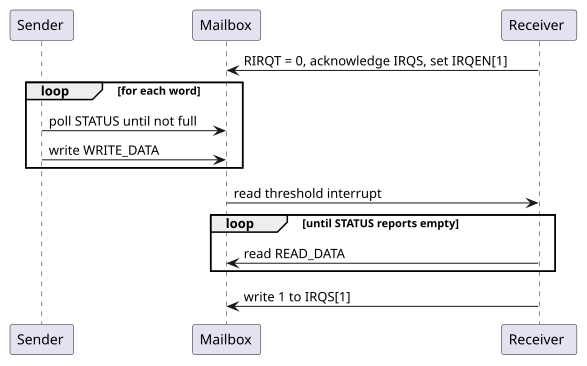
|
The SEP and Key Manager address maps contain a separate mailbox for communication between each other. The SEP to KM mailbox implements a different register interface from the SEP to SMC mailbox register interface described here. |
|
As the SEP CPU implements the 32-bit RV32 architecture and the mailbox data registers are 64-bits wide, SEP reads from the mailbox discard the upper/lower half of the popped data, and SEP writes to the mailbox write zeroes to the half of the data register not written. When communicating between the SMC and the SEP through the mailbox, only one 32-bit half of each entry should be used, and the choice must be agreed on by the software of both components. |
// Mailbox register addresses.
// In SMC-local address space.
#define MAILBOX_BASE 0xC0018000
#define MAILBOX_OUTBOUND_BASE(i) (MAILBOX_BASE + ((i) * 0x1000) + 0x0)
#define MAILBOX_INBOUND_BASE(i) (MAILBOX_BASE + ((i) * 0x1000) + 0x800)
#define MAILBOX_REG_WRITE_DATA(i) (MAILBOX_OUTBOUND_BASE(i) + 0x0)
#define MAILBOX_REG_OUTBOUND_STATUS(i) (MAILBOX_OUTBOUND_BASE(i) + 0x10)
#define MAILBOX_REG_READ_DATA(i) (MAILBOX_INBOUND_BASE(i) + 0x8)
#define MAILBOX_REG_INBOUND_STATUS(i) (MAILBOX_INBOUND_BASE(i) + 0x10)
#define MAILBOX_REG_INBOUND_RIRQT(i) (MAILBOX_INBOUND_BASE(i) + 0x28)
#define MAILBOX_REG_INBOUND_IRQS(i) (MAILBOX_INBOUND_BASE(i) + 0x30)
#define MAILBOX_REG_INBOUND_IRQEN(i) (MAILBOX_INBOUND_BASE(i) + 0x38)
// Mailbox register constants.
#define MAILBOX_STATUS_EMPTY 0x1
#define MAILBOX_STATUS_FULL 0x2
#define MAILBOX_IRQ_WTIRQ 0x1
#define MAILBOX_IRQ_RTIRQ 0x2
#define MAILBOX_IRQ_EIRQ 0x4// Send a message through mailbox `i`.
void mailbox_send(uint8_t i, uint32_t message) {
// Poll until the outbound FIFO has space.
while (read32(MAILBOX_REG_OUTBOUND_STATUS(i)) & MAILBOX_STATUS_FULL);
write32(MAILBOX_REG_WRITE_DATA(i), message);
}
// Enable and configure the read threshold interrupt on
// mailbox `i` to signal when there are any messages
// pending in the FIFO.
void mailbox_configure_read_threshold_interrupt(uint8_t i) {
write32(MAILBOX_REG_INBOUND_RIRQT(i), 0);
write32(MAILBOX_REG_INBOUND_IRQEN(i), MAILBOX_IRQ_RTIRQ);
}
// Handle the read threshold interrupt by handling each message
// in the FIFO and acknowledging the interrupt once empty.
void mailbox_handle_read_threshold_interrupt(uint8_t i) {
// While the inbound port is not empty,
// pop messages and handle them.
while (!(read32(MAILBOX_REG_INBOUND_STATUS(i)) & MAILBOX_STATUS_EMPTY)) {
uint32_t message = read32(MAILBOX_REG_READ_DATA(i));
// Handle the message here...
(void) message;
}
// Acknowledge the receive threshold interrupt,
// clearing the interrupt pending bit.
write32(MAILBOX_REG_INBOUND_IRQS(i), MAILBOX_IRQ_RTIRQ);
}4.4. Reference Counter
The SEP and SMC each expose a free-running 64-bit REFERENCE_COUNTER in their
CPU control block, counting the always-on reference clock from reset. To reload
it, write one value at a time: write the new value, then poll
REFERENCE_COUNTER until the readback is at or just above the written value
before issuing the next write. Compare against a window above the written value
rather than for equality, since the counter advances while the poll runs. Where
the written value is too close to the free-running count to tell the two apart,
separate consecutive writes by at least eight reference-clock periods instead.
// SMC CPU control register address.
// In SMC-local address space.
#define SMC_CPU_CTRL_REG_REFERENCE_COUNTER 0xC0039040
// Load `value` into the reference counter. `window` is the largest
// number of reference-clock periods that can elapse while polling.
void reference_counter_load(uint64_t value, uint64_t window) {
write64(SMC_CPU_CTRL_REG_REFERENCE_COUNTER, value);
// Wait until the readback is at or just above `value`.
while (read64(SMC_CPU_CTRL_REG_REFERENCE_COUNTER) - value > window);
}5. DTP Programming Guide
The Debug and Test Ports (DTP) are programmed from two sides: firmware or a debugger configures the cross-trigger network through its CSR window, and an external debugger drives the JTAG test access ports.
5.1. Cross-Trigger Network
Cross-trigger configuration is static. Software programs every external CTP from the SiP cross-trigger topology once per boot, then opens the CTM routes that use those ports, and leaves both unchanged for the rest of the session. Register offsets are relative to the CTN base address; the CTN address allocation table lists the CTM and CTP windows. Firmware and an external debugger share this window, and whichever of them programs cross triggers follows the sequence below.
5.1.1. Requirements
-
Both ends of a CTP link use the same protocol and polarity, and the board determines both:
-
A shared wire-OR line with pull-ups uses
MODE= 0 andINVERT= 0; with pull-downs it usesMODE= 0 andINVERT= 1. -
A point-to-point link with active-high signaling uses
MODE= 1 andINVERT= 0; with active-low signaling it usesMODE= 1 andINVERT= 1.
-
-
The configuration stays fixed for the session. Change a port whose routes are already open only through the sequence in Changing a Port’s Configuration.
-
After reset every CTP is in wire-OR mode with
INVERT= 0, and every CTM output is disabled because eachCT_DST_SELECTresets to zero. Until software writesCONFIG, a CTP drives neitherCT_Req_outnorCT_Ack_out, so the board pulls set the level the far end sees on those lines. Choose pulls that the far end reads as deasserted. -
Internal CTPs have no registers. The
INT_CT_MODEparameter fixes their protocol. -
The CTM configuration across the SiP is free of loops. A wire-OR CTP receives its own assertion of the shared wire, so a route from a wire-OR CTP back to the same CTP is a loop.
5.1.2. Initialization Sequence
-
For each external CTP
ithat the SiP uses:-
For a wire-OR port, write
STRETCH_MULTwith the pulse width the shared wire requires, minus one. -
Write
CONFIGwithMODEandINVERTfor the board in a single write, withRESET= 0.
-
-
For each CTM output
nthat carries triggers, writeCT_SRC[n].CONFIG_0.CT_DST_SELECT. Setting bitmforwards the triggers that portmreceives to portn. The CTM port index table maps port indices to external and internal CTPs.
The order matters. A CTM route delivers triggers to a CTP from the moment it
is written. A CTP still in its reset-default wire-OR mode transmits a trigger
by driving CT_Req_out to the asserted wire-OR level, which is low with
INVERT = 0. A point-to-point far end built for active-low signaling reads
that level as a request. Writing MODE and INVERT together keeps a port from
running, even briefly, with one field set for the board and the other still
at its reset value.
The following example configures external CTP 0 for an active-low point-to-point link and external CTP 1 for a wire-OR line with pull-ups, then routes triggers between them.
#define CTP_REG(i, reg) (ctn_base + CROSS_TRIGGER_NETWORK_CTP_BASE_ADDR(i) + (reg))
#define CTM_ROUTE(n) (ctn_base + CROSS_TRIGGER_NETWORK_CTM_BASE_ADDR + \
CROSS_TRIGGER_MATRIX_CT_SRC_CONFIG_0_BASE_ADDR(n))
#define CONFIG_MODE_P2P (1u << 0)
#define CONFIG_INVERT (1u << 1)
#define CONFIG_RESET (1u << 2)
// Configure every port before opening any route.
write32(CTP_REG(0, CROSS_TRIGGER_PORT_CONFIG_BASE_ADDR), CONFIG_MODE_P2P | CONFIG_INVERT);
write32(CTP_REG(1, CROSS_TRIGGER_PORT_STRETCH_MULT_BASE_ADDR), 15); // 16-cycle pulses
write32(CTP_REG(1, CROSS_TRIGGER_PORT_CONFIG_BASE_ADDR), 0);
// Triggers received on port 1 go out on port 0, and the reverse.
write32(CTM_ROUTE(0), 1u << 1);
write32(CTM_ROUTE(1), 1u << 0);5.1.3. Example SiP Routing
The TRM’s example SiP cross-trigger topology links six chiplets: Chiplets 0, 1 and 2 share a wire-OR line, and point-to-point pairs link Chiplet 0 with Chiplets 3 and 4, and Chiplet 3 with Chiplet 5. CTM programming for the example SiP lists the CTM routing that each chiplet programs for that topology. No route leads from a CTP back to itself.
| Chiplet | CTM forwarding |
|---|---|
0 |
From Chiplets 1 and 2 through the wire-OR CTP to the local CLAs and Chiplets 3 and 4. |
1 |
From Chiplets 0 and 2 through the wire-OR CTP to the local CLAs. |
2 |
From Chiplets 0 and 1 through the wire-OR CTP to the local CLAs. |
3 |
From Chiplet 0 to the local CLAs and Chiplet 5. |
4 |
From Chiplet 0 to the local CLAs. |
5 |
From Chiplet 3 to the local CLAs. |
5.1.4. Changing a Port’s Configuration
Changing CONFIG after routes are open is discouraged. When a link must
change protocol or polarity, for example after both chiplets agree on a new
topology, reconfigure port p as shown below. A poll that times out means
the point-to-point far end never acknowledged; recover the port as described in
Handshake Deadlock Recovery.

The CTP holds its point-to-point handshake idle while wire-OR mode is
selected. After point-to-point mode is selected, the handshake ignores
CT_Req_in and CT_Ack_in until their synchronized levels are valid.
Closing the routes first keeps triggers from being sent or forwarded while
the two ends of the link disagree.
5.1.5. Handshake Deadlock Recovery
A point-to-point sender waits for CT_Ack_in without a timeout. If the far
end stops responding, STATUS.REQ_OUT and STATUS.BUSY stay 1, and the port
transmits no further triggers.
-
Write
CONFIGwithRESET= 1, keepingMODEandINVERTunchanged.CT_Req_outdeasserts, and the port discards triggers delivered to it whileRESETis set. -
Write
CONFIGwithRESET= 0.
RESET does not affect the receiving side. A far end that holds CT_Req_in
asserted keeps STATUS.BUSY at 1 until it releases the request.
5.2. Debug Host Procedures
These procedures are performed by an external debugger through the chiplet’s JTAG port. An IR scan loads an instruction with the IR-Scan sequence; a DR scan shifts the selected test data register (TDR) with the DR-Scan sequence, least significant bit first. The TRM defines every instruction and TDR field.
5.2.1. Primary TAP Registers
To read or write a primary TAP TDR:
-
Shift its instruction into the instruction register with an IR scan.
-
Shift the TDR with a DR scan, starting with the least significant bit.
-
Read the TDR contents shifted out on TDO.
The TDRs differ in what the shifted-in bits do:
-
IDCODE and JTAG_CAPS are read-only. Shift in any pattern; the bits are ignored. Read JTAG_CAPS to discover which instructions and ports an instance enables before using them.
-
DEBUG_CONTROL captures the bits shifted into its read/write fields and ignores those shifted into its read-only fields.
-
Boundary scan instructions that select the boundary-scan registers shift their contents out on TDO. An instruction disabled in the instance behaves as BYPASS.
The DEBUG_CONTROL fields table and the JTAG_CAPS fields table define the fields.
5.2.2. Running BIST
The PTAP adds no scan cell of its own to the RUNBIST path, so the attached iJTAG network defines the length and contents of the RUNBIST DR.
-
Shift RUNBIST into the instruction register with an IR scan.
-
Shift the configuration vector that the attached iJTAG network defines for reaching the BIST TDR with a DR scan. A hierarchical network needs one DR scan for each level of Segment Insertion Bits (SIBs) opened on the way.
-
Shift the BIST TDR contents, together with the bits of every SIB and register still on the scan path, with a DR scan.
-
Read the captured contents of the same scan path on TDO.
5.2.3. iJTAG Segment Access
The JTAG Interface Unit’s iJTAG network starts with three one-bit SIBs. With every SIB closed the DR is three bits long: bit 0 (nearest TDO, shifted in first) is the DFD SIB, bit 1 the DFT Non-Secure SIB and bit 2 the DFT Secure SIB. A SIB whose debug-disable field is set stays closed and captures 0.
-
Shift SELECT_IJTAG, or RUNBIST to run BIST, into the instruction register with an IR scan.
-
Open the target SIB with a three-bit DR scan:
3’b100for DFT Secure,3’b010for DFT Non-Secure or3’b001for DFD. The target SIB’s debug-disable field must be clear. -
Shift the lengthened DR with the target SIB’s bit held at 1. With the DFT Non-Secure SIB open and an N-bit segment, the DR is N + 3 bits long: bit 0 is the DFD SIB, bits N to 1 are the segment with the bit nearest its scan output at bit 1, bit N + 1 is the DFT Non-Secure SIB and bit N + 2 is the DFT Secure SIB. The network attached to each segment defines its contents and length.
-
Read the captured contents of the same scan path on TDO.
-
Close the SIB by shifting the same DR with the target SIB’s bit at 0.
The iJTAG network description gives the SIB bit map and segment ports.
5.2.4. IC_RESET Overrides
Each IC_RESET port has an active-low reset_control value and a reset_enable
select that is also active low: writing 0 hands the port to reset_control.
Consumers select between the functional reset and reset_control with a
hazard-free multiplexer, which holds its output only while the select moves
alone. To assert an override:
-
Shift IC_RESET into the instruction register with an IR scan.
-
Write the port’s
reset_controlwith a DR scan, leavingreset_enableat 1. -
Clear
reset_enablein a second DR scan, so that its Update-DR moves only the select.

Changing both in one Update-DR can pulse a reset on a port that neither source
is resetting. Write reset_hold to 0 to keep the override asserted across
Test-Logic-Reset; only TRST clears reset_hold itself. The
IC_RESET override description
gives the TDR slice order.
5.2.5. SEP Reset Vector Redirect
The SEP CPU reset vector is held in a TDR of the EL2 debug TAP, reached through the SEP Core Debug STAP. To start the SEP CPU from a memory other than the Boot ROM for bring-up or failure analysis:
-
Hold the SEP CPU in reset, for example with the SEP main-reset IC_RESET override (IC_RESET Overrides).
-
Select the reset-vector TDR with JTAG instruction opcode
0x18and shift in the alternate address. The TDR stores address bits [31:1]; bit 0 is zero. -
Release the reset.
The value persists until it is rewritten or the TAP is reset (TRST or Test-Logic-Reset); CPU reset alone does not restore the Boot ROM default.
5.2.6. SMC Debug Module Abstract Command Errors
The SMC Debug Module departs from the RISC-V External Debug Support
specification: a command write while abstractcs.cmderr is nonzero replaces
the stored command, and no abstract command executes until cmderr is cleared.
A debugger therefore:
-
Reads
abstractcsto capture the error code of a failed command before it writescommandagain. -
Clears
cmderrby writing 1s to the field and confirms that it reads 0 before issuing the next command.
The SMC Debug Module description gives the full write behavior.
6. AoU Programming Guide
This section gives information about operation guide for the AOU_CORE.
6.1. SFR setting
| Register | Offset | Bit field name | Bit field | Type | Reset value |
|---|---|---|---|---|---|
|
0x0000 |
0x00010000 |
|||
|
[31:16] |
RO |
0x0001 |
||
|
[15:0] |
RO |
0x0000 |
||
|
0x0004 |
0x00000000 |
|||
Rsvd |
[31:28] |
RO |
0x0 |
||
|
[27] |
RW |
0x0 |
||
|
[26] |
RW |
0x0 |
||
|
[25] |
RW |
0x0 |
||
|
[24] |
RW |
0x0 |
||
|
[23] |
RW |
0x0 |
||
|
[22] |
RW |
0x0 |
||
|
[21] |
RW |
0x0 |
||
|
[20] |
RW |
0x0 |
||
|
[19:12] |
RW |
0x4 |
||
|
[11] |
RW |
0x0 |
||
Rsvd |
[10:5] |
RO |
0x0 |
||
|
[4] |
RW |
0x0 |
||
|
[3] |
RW |
0x0 |
||
|
[2] |
RW |
0x0 |
||
Rsvd |
[1:0] |
RO |
0x0 |
||
|
0x0008 |
0x00004608 |
|||
Rsvd |
[31:11] |
RO |
0x0 |
||
|
[10] |
RO |
0x1 |
||
|
[9] |
RO |
0x1 |
||
|
[8] |
W1C |
0x0 |
||
|
[7] |
W1C |
0x0 |
||
|
[6:4] |
RW |
0x0 |
||
|
[3] |
RO |
0x1 |
||
|
[2] |
RO |
0x0 |
||
|
[1] |
RW |
0x0 |
||
|
[0] |
RW |
0x0 |
||
|
0x000C |
||||
Rsvd |
[31:9] |
RO |
0x0 |
||
|
[8] |
RW |
0x0 |
||
|
[7] |
RW |
0x0 |
||
|
[6] |
RW |
0x0 |
||
|
[5] |
RW |
0x0 |
||
|
[4] |
RW |
0x0 |
||
|
[3] |
RW |
0x0 |
||
|
[2] |
RW |
0x0 |
||
Rsvd |
[1] |
RO |
0x0 |
||
Rsvd |
[0] |
RO |
0x0 |
||
|
0x0010 |
||||
Rsvd |
[31:14] |
RO |
0x0 |
||
|
[13:11] |
RW |
0x4 |
||
|
[10:8] |
RW |
0x4 |
||
|
[7] |
W1C |
0x0 |
||
|
[6] |
W1C |
0x0 |
||
|
[5:2] |
RO |
0x0 |
||
|
[1] |
W1C |
0x0 |
||
|
[0] |
W1C |
0x0 |
||
|
0x0014 |
0x00000000 |
|||
Rsvd |
[31:14] |
RO |
0x0 |
||
|
[13:12] |
RW |
0x3 |
||
Rsvd |
[11:10] |
RO |
0x0 |
||
|
[9:8] |
RW |
0x2 |
||
Rsvd |
[7:6] |
RO |
0x0 |
||
|
[5:4] |
RW |
0x1 |
||
Rsvd |
[3:2] |
RO |
0x0 |
||
|
[1:0] |
RW |
0x0 |
||
|
0x0018 |
||||
Rsvd |
[31:28] |
RO |
0x0 |
||
|
[27:24] |
RW |
0xA |
||
|
[23:20] |
RW |
0x5 |
||
Rsvd |
[19:18] |
RO |
0x0 |
||
|
[17:16] |
RW |
0x3 |
||
Rsvd |
[15:14] |
RO |
0x0 |
||
|
[13:12] |
RW |
0x2 |
||
Rsvd |
[11:10] |
RO |
0x0 |
||
|
[9:8] |
RW |
0x1 |
||
Rsvd |
[7:6] |
RO |
0x0 |
||
|
[5:4] |
RW |
0x0 |
||
Rsvd |
[3:2] |
RO |
0x0 |
||
|
[1:0] |
RW |
0x0 |
||
|
0x001C |
0x00000000 |
|||
|
[31:16] |
RW |
0x0 |
||
|
[15:0] |
RW |
0x0 |
||
|
0x0020 |
0x00000F0F |
|||
Rsvd |
[31:16] |
RO |
0x0 |
||
|
[15:8] |
RW |
0xF |
||
|
[7:0] |
RW |
0xF |
||
|
0x0024 |
0x0 |
|||
Rsvd |
[31:22] |
RO |
0x0 |
||
|
[21:12] |
RO |
0x0 |
||
|
[11:2] |
RO |
0x0 |
||
|
[1] |
W1C |
0x0 |
||
|
[0] |
W1C |
0x0 |
||
|
0x0028 |
0x0 |
|||
Rsvd |
[31:15] |
RO |
0x0 |
||
|
[14] |
RO |
0x0 |
||
|
[13] |
W1C |
0x0 |
||
|
[12:11] |
RO |
0x0 |
||
|
[10:1] |
RO |
0x0 |
||
|
[0] |
RW |
0x0 |
||
|
0x002C |
0x0 |
|||
|
[31:0] |
RW |
0x0 |
||
|
0x0030 |
0x0 |
|||
|
[31:0] |
RW |
0x0 |
||
|
0x0034 |
||||
Rsvd |
[31:22] |
RO |
0x0 |
||
|
[21:12] |
RO |
0x0 |
||
|
[11:2] |
RO |
0x0 |
||
|
[1] |
W1C |
0x0 |
||
|
[0] |
W1C |
0x0 |
||
|
0x0038 |
0x00000F0F |
|||
Rsvd |
[31:16] |
RO |
0x0 |
||
|
[15:8] |
RW |
0xF |
||
|
[7:0] |
RW |
0xF |
||
|
0x003C |
0x0 |
|||
Rsvd |
[31:22] |
RO |
0x0 |
||
|
[21:12] |
RO |
0x0 |
||
|
[11:2] |
RO |
0x0 |
||
|
[1] |
W1C |
0x0 |
||
|
[0] |
W1C |
0x0 |
||
|
0x0040 |
0x0 |
|||
Rsvd |
[31:15] |
RO |
0x0 |
||
|
[14] |
RO |
0x0 |
||
|
[13] |
W1C |
0x0 |
||
|
[12:11] |
RO |
0x0 |
||
|
[10:1] |
RO |
0x0 |
||
|
[0] |
RW |
0x0 |
||
|
0x0044 |
0x0 |
|||
|
[31:0] |
RW |
0x0 |
||
|
0x0048 |
0x0 |
|||
|
[31:0] |
RW |
0x0 |
||
|
0x004C |
||||
Rsvd |
[31:22] |
RO |
0x0 |
||
|
[21:12] |
RO |
0x0 |
||
|
[11:2] |
RO |
0x0 |
||
|
[1] |
W1C |
0x0 |
||
|
[0] |
W1C |
0x0 |
||
|
0x0050 |
0x00000F0F |
|||
Rsvd |
[31:16] |
RO |
0x0 |
||
|
[15:8] |
RW |
0xF |
||
|
[7:0] |
RW |
0xF |
||
|
0x0054 |
0x0 |
|||
Rsvd |
[31:22] |
RO |
0x0 |
||
|
[21:12] |
RO |
0x0 |
||
|
[11:2] |
RO |
0x0 |
||
|
[1] |
W1C |
0x0 |
||
|
[0] |
W1C |
0x0 |
||
|
0x0058 |
0x0 |
|||
Rsvd |
[31:15] |
RO |
0x0 |
||
|
[14] |
RO |
0x0 |
||
|
[13] |
W1C |
0x0 |
||
|
[12:11] |
RO |
0x0 |
||
|
[10:1] |
RO |
0x0 |
||
|
[0] |
RW |
0x0 |
||
|
0x005C |
0x0 |
|||
|
[31:0] |
RW |
0x0 |
||
|
0x0060 |
0x0 |
|||
|
[31:0] |
RW |
0x0 |
||
|
0x0064 |
||||
Rsvd |
[31:22] |
RO |
0x0 |
||
|
[21:12] |
RO |
0x0 |
||
|
[11:2] |
RO |
0x0 |
||
|
[1] |
W1C |
0x0 |
||
|
[0] |
W1C |
0x0 |
||
`AXI_SPLIT_TR_RP3q |
0x0068 |
0x00000F0F |
|||
Rsvd |
[31:16] |
RO |
0x0 |
||
|
[15:8] |
RW |
0xF |
||
|
[7:0] |
RW |
0xF |
||
|
0x006C |
0x0 |
|||
Rsvd |
[31:22] |
RO |
0x0 |
||
|
[21:12] |
RO |
0x0 |
||
|
[11:2] |
RO |
0x0 |
||
|
[1] |
W1C |
0x0 |
||
|
[0] |
W1C |
0x0 |
||
|
0x0070 |
0x0 |
|||
Rsvd |
[31:15] |
RO |
0x0 |
||
|
[14] |
RO |
0x0 |
||
|
[13] |
W1C |
0x0 |
||
|
[12:11] |
RO |
0x0 |
||
|
[10:1] |
RO |
0x0 |
||
|
[0] |
RW |
0x0 |
||
|
0x0074 |
0x0 |
|||
|
[31:0] |
RW |
0x0 |
||
|
0x0078 |
0x0 |
|||
|
[31:0] |
RW |
0x0 |
||
|
0x007C |
||||
Rsvd |
[31:22] |
RO |
0x0 |
||
|
[21:12] |
RO |
0x0 |
||
|
[11:2] |
RO |
0x0 |
||
|
[1] |
W1C |
0x0 |
||
|
[0] |
W1C |
0x0 |
Table 7. Register Map
ERR SET is restricted to change the value while the system is running
For details on the ACTIVATE and DEACTIVATE SFRs, please refer to Activation & Deactivation Flow.
AOU_INIT.ACTIVATE_START
-
After link-up is completed, AOU_CORE can send or receive an ActivateReq message.
-
AoU Activation Request can only be triggered by AOU_INIT.ACTIVATE_START, and it is allowed to be set before and after the completion of the UCIe Link-up.
AOU_INIT.DEACTIVATE_START
-
AOU_CORE must exchange both DeactivateReq and DeactivateAck messages before the UCIe Core transitions to the Link Down state.
-
The DEACTIVATE_START field in AOU_INIT initiates deactivation and ensures that a DeactivateReq is issued only after both conditions below are satisfied:
-
All outstanding responses to remote die requests have been completed.
-
No additional messages remain to be transmitted within a window defined by TIME_OUT_VALUE.
-
-
AOU_INIT.DEACTIVATE_TIME_OUT_VALUE configures the timeout value used for this condition. This field is 3 bits wide and encodes a timeout of 2^(DEACTIVATE_TIME_OUT_VALUE + 3) cycles.
MAX BURSTLEN
-
The MAX_AWBURSTLEN and MAX_ARBURSTLEN register fields define the maximum burst length that the splitter may issue to the local bus.
-
The splitter inside AOU_CORE issues AXI transfers with burst lengths less than or equal to the configured values (MAX_AWBURSTLEN, MAX_ARBURSTLEN).
-
If AOU_CORE receives a larger burst length from the remote die, the splitter divides it into smaller bursts based on MAX_AxBURSTLEN.
-
Since Splitter only supports maximum burst lengths in the form of 2^n, the field must be configured with one of the following: 1, 3, 5, 7, 15, 31, 63, 127 or 255.
ACTIVATE_STATE_ENABLED/DISABLED
-
This signal indicates the activation status of the AOU_ACTIVATION_CTRL.
-
The ENABLE signal is asserted to indicate that activation has been completed.
The DISABLED signal is asserted to indicate that deactivation has been completed.
MST_TR_COMPLETE/SLV_TR_COMPLETE
-
This signal indicates that there are no pending transactions in both local die and remote die.
ACK_TIME_OUT_VALUE/MSG_CREDIT_TIME_OUT_VALUE
-
After sending an AoU Activation/Deactivation Request message, if an Ack message is not received within the specified ACK_TIME_OUT_VALUE, a LinkReset interrupt is sent to the SW.
-
After receiving the Activation Ack message from the remote die, if a creditgrant message is not received within the specified MSGCREDIT_TIME_OUT_VALUE, a LinkReset interrupt is sent to the SW.
-
These fields are 3 bits wide and encode a timeout of 2^(TIME_OUT_VALUE + 18) core clock cycles.
WRITE_EARLY_RESPONSE
-
For the EARLY_RESPONSE_EN SFR setting to enable or disable early response, there must be no pending write requests.
-
EARLY_RESPONSE_EN: If this field is set(1), It performs the early response function.
-
WRITE_RESP_DONE: It indicates that there are no pending write requests and all write responses have been received from the remote die.
-
WRITE_RESP_ERR: It indicated that although the early response feature was enabled and an early response has already been delivered to the local die, an error occurred later in the write response received from the remote die. The BRESP value of the error is stored in WRITE_RESP_ERR_TYPE_INFO, and the BID of the transaction that caused the error is stored in WRITE_RESP_ERR_ID_INFO SFR. When an error occurs, an interrupt is generated. Afterward, writing 1 to the WRITE_RESP_ERR SFR clears ERR_TYPE_INFO, ERR_ID_INFO, and RESP_ERR.
Low Power mode
-
For lowering power, AOU_CORE uses low power mode. By setting AOU_CON0.TX_LP_MODE = 1, AOU_CORE only sends payload to FDI when there are remaining AXI messages to send. Since AOU_CORE need to send Credit when there are no remaining AXI messages, by setting AOU_CON0.TX_LP_MODE_THRESHOLD value, SW can configure the message transmission frequency.
-
AOU_CON0.TX_LP_MODE_THRESHOLD = 0 selects a fully-gated low-power mode: the periodic heartbeat is disabled and the TX only launches an FDI flit when there is real work to send (AXI traffic, CrdtGrant credit-return messages, or pending MsgCredit-header credits). Once a flit is started it always finishes; any granule slots that were not filled are sent as zeros and the corresponding MsgStart bits are 0.

-
Default value is 0. AOU_CORE always sends messages to FDI for lowering latency
6.2. Debugging Features
6.2.1. Overview
AOU_CORE provides several error-detection and debug features, each with a dedicated interrupt output and a per-feature mask bit in the AOU_INTERRUPT_MASK register (0x000C). The table below summarises the mask bits and corresponding interrupt signals.
| Mask Bit | Feature | Interrupt Signal |
|---|---|---|
[8] |
Activate-ack timeout |
INT_REQ_LINKRESET |
[7] |
Deactivate-ack timeout |
INT_REQ_LINKRESET |
[6] |
Invalid ACTMSG |
INT_REQ_LINKRESET |
[5] |
MsgCredit timeout |
INT_REQ_LINKRESET |
[4] |
Early write-response error |
INT_EARLY_RESP_ERR |
[3] |
Manager ID mismatch |
INT_MI0_ID_MISMATCH |
[2] |
Subordinate ID mismatch |
INT_SI0_ID_MISMATCH |
Setting a mask bit to 1 masks (disables) the corresponding interrupt.
6.2.2. AXI ID Mismatch Error
AOU_CORE can detect AXI ID mismatches on both the manager and subordinate interfaces. A mismatch occurs when a B or R response arrives with an AXI ID that does not correspond to any outstanding request.
Manager side. The split/aggregator path (AOU_AXI_SPLIT_TR / AOU_AXI4MUX_3X1_TOP) maintains pending-ID tables for both read and write transactions (AOU_SPLIT_RD_PENDING_INFO and AOU_SPLIT_WR_PENDING_INFO). When a B response arrives with an ID that does not match any pending write entry, SPLIT_BID_MISMATCH_ERR is asserted and the offending ID is captured in SPLIT_BID_MISMATCH_INFO. The same logic applies to R responses via SPLIT_RID_MISMATCH_ERR and SPLIT_RID_MISMATCH_INFO. These fields are in the per-RP ERROR_INFO_RPn register (RP0 at 0x0024, RP1 at 0x003C, RP2 at 0x0054, RP3 at 0x006C). SW clears each error by writing 1 to the corresponding W1C bit. The aggregate interrupt is INT_MI0_ID_MISMATCH.
Table depth and backpressure. Each pending-ID table is sized by M_RD_MO_CNT / M_WR_MO_CNT (default 32), matching the manager interface outstanding transaction limit. An entry is allocated on the split-AR or split-AW handshake and freed when the corresponding R (with RLAST) or B response completes. When all entries are occupied, the O_AR_Slot_Available_Flag / O_AW_Slot_Available_Flag signal goes low, which suppresses new split transactions and effectively deasserts ARREADY / AWREADY toward the upstream path. This is backpressure, not an error -- no entries are overwritten or dropped. Because the table depth equals the AXI outstanding count, the table should never overflow during correct operation.
No disable mechanism. There is no RTL parameter or SFR to disable the pending-ID tables or the mismatch check. The interrupt can be masked via AOU_INTERRUPT_MASK.INT_MI0_ID_MISMATCH_MASK [3], but this only suppresses the interrupt signal. The tables continue to operate, backpressure still applies when full, and the sticky error bits in ERROR_INFO_RPn are still set on a mismatch.
Subordinate side. An analogous pending-ID table exists in AOU_SLV_AXI_INFO, with SFR fields in AXI_SLV_ID_MISMATCH_ERR_RPn (RP0 at 0x0034, RP1 at 0x004C, RP2 at 0x0064, RP3 at 0x007C). However, the subordinate-side mismatch outputs are currently tied to 0 in RTL; the SFR fields are allocated but will always read 0. The aggregate interrupt INT_SI0_ID_MISMATCH will therefore never fire in the current implementation.
6.2.3. LinkReset Error Reporting
When AOU_CORE detects a protocol-level error during activation or deactivation, it asserts O_AOU_REQ_LINKRESET (to FDI) and INT_REQ_LINKRESET (to SW). Both signals share the same net and are the logical OR of the four sub-conditions below. After handling the interrupt, SW must perform a LinkReset sequence.
All LinkReset-related SFR fields reside in LP_LINKRESET (0x0010).
Activate/Deactivate Ack Timeout. After sending an ActivateReq or DeactivateReq message, a counter begins. If the remote die does not return an Acknowledge within 2^(ACK_TIME_OUT_VALUE + 18) core clock cycles, the timeout fires. ACK_TIME_OUT_VALUE [13:11] is 3 bits wide with a default of 4, giving a default timeout of 2^22 = ~4M cycles. The sticky error bits are ACT_ACK_ERR [7] and DEACT_ACK_ERR [6], both W1C.
Invalid ACTMSG. The activation FSM (AOU_ACTIVATION_CTRL) checks each received activation opcode against the current state. If the opcode is not permitted in the current state, INVALID_ACTMSG_ERR [1] is set and the offending 4-bit opcode is captured in INVALID_ACTMSG_INFO [5:2]. Clear via W1C.
MsgCredit Timeout. After the local die receives ActivateAck, it expects a CreditGrant message from the remote die indicating the number of resource planes. If no CreditGrant arrives within 2^(MSGCREDIT_TIME_OUT_VALUE + 18) core clock cycles, MSGCREDIT_ERR [0] is set. MSGCREDIT_TIME_OUT_VALUE [10:8] defaults to 4. Clear via W1C.
6.2.4. R/B Response Error Debug FIFO
When the manager interface receives an AXI B or R response with a non-OKAY status (SLVERR or DECERR), AOU_CORE captures the error details in a dedicated per-RP FIFO so that the remote die can retrieve them via AXI read.
FIFO structure. The AOU_ERROR_INFO module (one instance per RP) implements a 4-entry circular FIFO. Each entry stores:
| Field | Width | Description |
|---|---|---|
AXI ID |
AXI_ID_WD |
ID of the failing transaction |
AXI ADDR |
AXI_ADDR_WD |
Address of the failing transaction |
RESP |
2 bits |
BRESP or RRESP value |
Both BRESP and RRESP errors can be pushed simultaneously (two entries in one cycle). If the FIFO is full, new errors are silently dropped.
Enabling access. Before the remote die can read error information, SW must:
-
Set AOU_CON0.RPn_ERROR_INFO_ACCESS_EN [27:24] to 1 for the target RP.
-
Configure the dedicated address window by writing the upper 32 bits to AXI_ERROR_INFO0_RPn.DEBUG_UPPER_ADDR and the lower 32 bits to AXI_ERROR_INFO1_RPn.DEBUG_LOWER_ADDR.
The AOU_AXIMUX_1XN_SS address decoder routes any AXI transaction whose address matches {DEBUG_UPPER_ADDR, DEBUG_LOWER_ADDR} to the AOU_ERROR_INFO module instead of the normal datapath.
Read protocol. The remote die issues an AXI read (AR) to the configured debug address. The module returns the FIFO head entry on RDATA (containing the concatenated ID, address, and response fields) with RLAST = 1.
Pop protocol. To advance to the next entry, the remote die issues a dummy AXI write (AW + W) to the same debug address. The simultaneous AW and W handshake advances the FIFO read pointer, discarding the head entry. A B response (OKAY) is returned.
The typical access sequence is: read the head entry, then pop it, and repeat until no more entries remain.

6.2.5. Write Early Response Error
When the early write-response feature is enabled (EARLY_BRESP_EN = 1) and the actual BRESP from the remote die carries an error for a transaction that already received an early OKAY, the error is reported via the INT_EARLY_RESP_ERR interrupt. The failing transaction's AXI ID and BRESP type are captured in WRITE_EARLY_RESPONSE_RPn. SW clears the error by writing 1 to WRITE_RESP_ERR (W1C).
+For a detailed description of the early response error flow, see +ifdef::backend-pdf[] +Transaction Flow -- Error Case +and +SFR Fields. +endif::backend-pdf[] +ifdef::backend-html5[] +Transaction Flow -- Error Case +and +SFR Fields. +endif::backend-html5[]
6.3. Activation & Deactivation Flow
The Activation of AOU_CORE begins after the UCIe Link-up process has been successfully completed. The completion of UCIe link-up is indicated by the I_INT_FSM_IN_ACTIVE signal of the AOU_CORE_TOP.
There is no dependency between the activation of the local die and the remote die. Each die may initiate the activation sequence independently, which means the timing of sending ActivateReq can differ. Both dies must exchange ActivateReq and ActivateAck messages to transition to the ENABLED state, at which point credited messages can be transmitted.
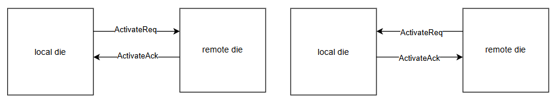
Regardless of its own activation state, a die must send an ActivateAck in response to an ActivateReq from the other die, to acknowledge receipt of the request.
6.3.1. Credit Management Type
There are two types of Credit Management Type. Since current AOU_SPEC cannot resolve pending AXI response without Activate again. When Credit Management type is set to 1, During Deactivate state, AOU_CORE can resolve pending AXI response itself. It can be configured through AOU_CON0.CREDIT_MANAGE, and the default value is 0.
-
0 (default) Based on AoU v0.5
-
After deactivation, if a new request is received from the remote die, no response message can be sent.
-
To deliver the corresponding response, the system must go through activation again after deactivation.
-
Credit management and transmission availability for both Request-related messages and Response-related message are controlled together.
-
Credited messages must not be sent, after the DeactivateReq message is sent.
-
Credits must not be sent after the DeactivateAck message is sent.
-
The Activate Interrupt and Deactivate Interrupt that occur in the process of resuming the exchange of response messages impose mandatory requirement to set Activate and Deactivate SFR.
-
-
1 Proposal by BOS.
-
When the AoU Activity state is DEACTIVATE, manage Request-related messages(WERQ, RREQ, WDATA) and Response-related messages(RDATA, WRESP) separately.
-
RDATA, WRESP Credited messages can be sent, after the DeactivateReq message is sent.
-
Credits for RDATA, WRESP messages must be sent after the DeactivateAck message is sent.
-
The Deactivate interrupt only provides a hint indicating that the remote die has started activate/deactivate.
-
6.3.2. Activation start
Activation can be initiated by setting ACTIVATE_START SFR: In the current implementation, credits are granted based on the depth of the RX FIFO, so it is required to ensure that all messages in the RX FIFO have been popped before sending the ActivateReq message.
Activation START(via SFR AOU_INIT.ACTIVATE_START SFR)
-
Activation can be triggered by setting ACTIVATE_START.
-
Activation does not proceed until I_INT_FSM_IN_ACTIVE is asserted, since no flits can be transmitted beforehand. Therefore, it is allowed to set the ACTIVATE_START SFR before I_INT_FSM_IN_ACTIVE is asserted. If it is set before the assertion, the activation process will automatically proceed after I_INT_FSM_IN_ACTIVE becomes asserted.
-
AOU_INIT.ACTIVATE_START SFR is automatically cleared to 0 once the activation is completed and AOU_ACTIVATE_STATE transitions to ENABLED.
6.3.3. Deactivation start
Deactivation is initiated by setting the AOU_INIT.DEACTIVATE_START register. Setting this register does not immediately trigger sending a DeactivateReq message. The detailed conditions and sequence for deactivation can be found in the Deactivation Sequence Flow section. This section will only describe AOU_INIT.DEACTIVATE_TIME_OUT_VALUE SFR.
-
When software initiates a DeactivateReq by setting the SFR, there may still be outstanding requests that have not yet reached out AOU_CORE.
-
To handle this safely, a timeout mechanism is implemented to ensure that no valid packets remain in the AOU_TX_CORE.
-
If software guarantees that all responses to its issued requests have been received before setting the deactivation start SFR, the deactivate TIME_OUT_VALUE(AOU_INIT.DEACTIVATE_TIME_OUT_VALUE SFR) can be safely configured to a shorter duration.
The ACTIVATION_OP field encodes deactivation messages as follows:
-
2 = DeactivateReq
-
3= DeactivateAck

6.3.4. Deactivation Sequence Flow
Once the local die issues a DeactivateReq, it can no longer provide responses to transactions initiated by the remote die. If the remote die continues to send requests or waits for responses without being notified, it may enter a hang state. To manage this safely, the remote die must take explicit action upon receiving a DeactivateReq: 1. Immediately generate an interrupt to the CPU to inform the system software that a DeactivateReq has been received and that it must set the DEACTIVATE_START SFR.
Although deactivation of the local die and the remote die operate independently, it is essential at the system level to communicate the deactivation & activation state through interrupts. This ensures that system software is explicitly informed of deactivation events and prevents the remote die from continuing to expect response that will never arrive, thereby avoiding hang conditions. This approach guarantees that once deactivation is initiated, both dies can coordinate the transition into safe and consistent DISABLED state.
If the software on both dies can explicitly coordinate to guarantee that all outstanding transactions have been completed and that no new transactions will be issued, then such an complicated implementation would not be necessary.
Figure 25 illustrates the current activate/deactivate implementation of AOU_CORE.

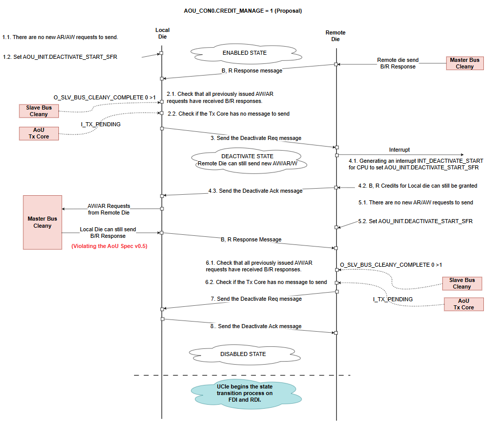
This system provides a bus cleany mechanism:
-
Subordinate bus cleanly indicates whether the local die has received all responses to the requests it sent to the remote die.
-
Manager bus cleanly indicates whether the remote die has received all responses to the requests it sent to the local die.
After the local die sends a DeactivateReq, if the remote die issues a new request and expects a response, the system must re-enter the activation sequence before any response can be provided.
Before sending a new ActivateReq, the Rx FIFO must be completely emptied - that is, all messages must be popped. After deactivation, the credit count is reset, and during the subsequent activation process, credits are advertised based on the RX FIFO depth. Therefore, before sending an ActivateReq, the local die must confirm, as described in the local die's sequence 10.1, that all messages in the RX FIFO have been popped.
To meet satisfy the condition in the local die's sequence 10.1, no backpressure must occur on the local die's MI AW/AR/W channels.
6.3.5. Activation/Deactivation Interrupt
INT_ACTIVATE_START
-
When this interrupt is detected, AOU_INIT.ACTIVATE_START SFR must be set to 1.
-
When AOU_INIT.ACTIVATE_STATE_ENABLED becomes 1, write 1 to clear the AOU_INIT.INT_ACTIVATE_START W1C SFR.
-
An interrupt occurs when AOU_INIT.ACTIVATE_START SFR is not set and any of the following conditions are met:
-
There is a message to send
-
When AOU_CON0.CREDIT_MANAGE = 0, if a new request arrives from the remote die after the local die has sent a DeactivateReq, this interrupt is asserted because the local die must return a response.
-
When AOU_CON0.CREDIT_MANAGE = 1, this interrupt can also be asserted if a new request arrives after the remote die has sent a DeactivateReq.
-
-
There is a response to be received (I_SLV_BUS_CLEANY_COMPLETE == 0)
-
When AOU_CON0.CREDIT_MANAGE = 0, this interrupt can be asserted if the local die issues new AXI requests after the remote die has sent a DeactivateReq.
-
-
An ActivateReq message is received from the remote die.
-
INT_DEACTIVATE_START
-
When AOU_CON0.CREDIT_MANAGE = 0: if the interrupt is detected, the manager IP must stop sending new request messages and AOU_INIT.DEACTIVATE_START SFR must be set to 1.
-
When AOU_CON0.CREDIT_MANAGE = 1: if the interrupt is detected, this serves only as a hint that the remote die intends to deactivate. The local die can continue sending request messages. Once all messages have been sent, AOU_INIT.DEACTIVATE_START SFR must be set. Otherwise, the remote die may end up in a state where it can never send requests again.
-
When AOU_INIT.ACTIVATE_STATE_DISABLED becomes 1, write 1 to clear the AOU_INIT.INT_DEACTIVATE_START W1C SFR.
-
An interrupt is asserted when AOU_INIT.DEACTIVATE_START SFR is not set and the local die receives a DeactivateReq message from the remote die.
6.3.6. PM entry / LinkReset / LinkDisabled sequence
For PM entry / LinkReset / LinkDisable entry sequence, UCIE_CORE check AOU_CORE state and try to change state. For this sequence, resolving pending AXI transactions is necessary.
Since current AOU SPEC has no way to send AXI response after sending DeactiveReq. CREDIT_MANAGE = 0 (Type 0) is matched with current AOU_SPEC. For this case, SW need to check whether there is pending AXI transaction.
-
PM entry SW sequence
-
Write AOU_INIT.DEACTIVATE_START to 1.
-
Polling AOU_INIT.ACTIVATE_STATE_DISABLED and AOU_INIT.SLV_TR_COMPLETE & AOU_INIT.MST_TR_COMPLETE.
-
Although AOU_CORE state becomes DISABLED, there may have pending AXI transaction.
-
AOU_CORE issue Interrupt for resolving pending AXI transactions.
-
Activate AOU_CORE and resolve pending AXI transactions.
-
Deactivate AOU_CORE
-
-
Polling AOU_INIT.ACTIVATE_STATE_DISABLED and AOU_INIT.SLV_TR_COMPLETE & AOU_INIT.MST_TR_COMPLETE.
-
Do PM Entry Sequence on UCIE_CORE.
-

-
LinkDisable SW sequence
Same as PM entry, before doing UCIE state transition, AOU_CORE need to Disabled properly.
-
Write AOU_INIT.DEACTIVATE_START to 1.
-
Polling AOU_INIT.ACTIVATE_STATE_DISABLED and AOU_INIT.SLV_TR_COMPLETE & AOU_INIT.MST_TR_COMPLETE.
-
Although AOU_CORE state becomes DISABLED, there may have pending AXI transaction.
-
AOU_CORE issue Interrupt for resolving pending AXI transactions.
-
Activate AOU_CORE and resolve pending AXI transactions.
-
Deactivate AOU_CORE
-
-
Polling AOU_INIT.ACTIVATE_STATE_DISABLED and AOU_INIT.SLV_TR_COMPLETE & AOU_INIT.MST_TR_COMPLETE.
-
Do LinkReset/LinkDisabled Sequence on UCIE_CORE.
-
LinkReset sequence
-
If AOU_CORE faces uncorrectable error (ex. AOU SPEC violation), AOU_CORE sends LinkReset to CPU and D2D adapter. LinkReset indicates that an error has occurred which requires the Link to go down.
While handling LinkReset, SW needs to do AOU_CORE SW reset by setting AOU_CON0.AOU_SW_RESET.
6.4. AoU Core Reset
Setting AOU_CON0.AOU_SW_RESET resets the AOU_CORE, as the LinkReset sequence
requires. The reset does not drain the AXI paths through the bridge, so SW
quiesces traffic to and from the AOU_CORE before setting it.
Appendix A: SMC Boot ROM
A.1. Overview
The SMC production ROM establishes a usable SMC execution environment and then services Open Chiplet Configuration Protocol (OCCP) requests over target-mode I2C and I3C interfaces. It performs early SRAM handling and memory-health checks before using a stack, initializes status and coordination state, applies the ROM’s lifecycle-based access policy, and exposes commands for status, memory transfer, and boot handoff.
The ROM follows one common flow regardless of the PRIMARY_CHIPLET strap.
The strap value is reported for observability, but the ROM does not implement separate primary and secondary boot algorithms.
The implementation is divided into:
-
assembly startup in
boot/, including SRAM initialization, MBIST, memory-repair checking, trap setup, and C-runtime entry; -
the Phase 0 through Phase 5 C flow in
src/main.c; -
I2C, I3C, strap, eFuse, and optional PLL drivers in
drivers/; -
OCCP, security, status, scratch-register coordination, and ring-buffer support in
lib/; and -
the ROM/SRAM image layout in
linker/smc/smc_rom.ld.
Selected adopter-facing services are weak-symbol ROM FW integration hooks. The open definitions allow the image to build without adopter-owned PLL or I3C implementations; a final adopter ROM FW image can replace them with strong definitions before the ROM FW is frozen. The detailed sections identify the hooks where they are used. For the build-time override method and the SMC override inventory, see Immutable ROM FW Integration in the Integrator Guide.
The ROM has two terminal handoff paths.
ExecuteImage sends a success response and transfers control directly in non-secure lifecycle states.
AuthenticateImage sends a success response, publishes a manifest offset to the coordination scratch registers, and parks the SMC in wfi.
A.2. OCCP protocol
OCCP is a request-response protocol carried as an ordered little-endian byte stream. A controller writes one request frame to an SMC target and reads the resulting response frame. The ROM implements version 1.0.0 of the Base and Boot applications.
A.2.1. Packet format
Every frame begins with the same eight-byte packet header.
The body immediately follows the header, followed by a body CRC only when the Body CRC present bit is set.
The 11-bit Length field is the body length in bytes and does not include either CRC.
byte 0 bytes 1..3 bytes 4..7 Length bytes optional +------------+----------------+-----------------+------------------+----------+ | Header CRC | transport word | OCCP header | message body | body CRC | +------------+----------------+-----------------+------------------+----------+
| Frame bits | Field | Meaning |
|---|---|---|
7:0 |
Header CRC |
CRC-8 over frame bytes 1 through 7. |
8 |
Body CRC present |
A CRC follows the body when set. |
31:9 |
I3C flags |
Reserved by this implementation; transmitted as zero in responses. |
39:32 |
Application ID |
|
47:40 |
Message ID |
Command within the selected application. |
51:48 |
Flags |
Request flags. Responses echo these bits. |
52 |
Error |
Set in an error response. |
63:53 |
Length |
Body size from 0 through 2047 bytes. |
Multi-byte integers in command bodies and responses are little-endian. Addresses are 64-bit values.
A.2.2. Integrity checks
Header CRC uses an initial value of 0xFF, polynomial 0xD3, most-significant-bit-first processing, and no final XOR.
It always covers the seven bytes after the CRC byte.
When a body CRC is present, bodies of up to 14 bytes use the same CRC-8 algorithm.
Bodies longer than 14 bytes use CRC-32 with initial value 0xFFFFFFFF, polynomial 0x992C1A4C, most-significant-bit-first processing, and final XOR 0xFFFFFFFF.
The CRC covers only the body.
Requests with a clear Body CRC present bit are accepted without body integrity validation.
Responses that contain a body set the bit and append the applicable CRC.
Successful responses with no body clear it.
A.2.3. Applications and commands
| AppID | MsgID | Command | Behavior |
|---|---|---|---|
|
|
|
Returns Base application version 1.0.0. |
|
|
|
Returns one OCCP status field or one entry from a status ring buffer. |
|
|
|
Writes bytes to an allowed, 32-bit-aligned address. |
|
|
|
Reads bytes from an allowed, 32-bit-aligned address. |
|
|
|
Returns Boot application version 1.0.0. |
|
|
|
Responds and transfers control to an allowed address in a non-secure lifecycle state. |
|
|
|
Responds, publishes a manifest address to the coordination registers, and parks in |
|
|
|
Not implemented; returns error code |
GetVersion
The request body is empty.
Both GetVersion handlers also flush the selected receive interface before
responding. If bytes remain after the nominal zero-length request, the ROM FW
returns Oversize_msg instead of the version.
The four-byte response body is:
| Offset | Size | Field |
|---|---|---|
0 |
1 |
Major version |
1 |
1 |
Minor version |
2 |
2 |
Patch version |
Both applications currently return 1, 0, 0.
GetStatus
The request body is exactly two bytes containing a 16-bit status ID. The response body is one 32-bit status value.
| Status ID | Returned value |
|---|---|
|
OCCP boot-status nibble, encoded as an SMC BL0 status message. |
|
OCCP interface-status nibble, encoded as an SMC BL0 status message. |
|
OCCP command count in bits 7:0, encoded as an SMC BL0 status message. The current implementation also copies the internal-error byte into bits 15:8. |
|
Last internal implementation error, encoded as an SMC BL0 error message. |
|
Next unread SEP ring-buffer entry. |
|
Next unread SMC ring-buffer entry. |
Other status IDs return Unsupported_StatusID.
If the STATUS_RPT_DISABLE strap is asserted, every GetStatus request returns that error.
An empty SEP or SMC ring buffer returns a zero value.
The internal error field returned for status ID 0x0003 is distinct from the
protocol error codes carried by error-response bodies:
| Value | Meaning |
|---|---|
|
No error |
|
Invalid command |
|
Access violation |
|
Alignment error |
|
Interface error |
|
Security violation |
|
Buffer overflow |
|
Timeout |
|
CRC failure |
|
Incomplete transport frame |
|
Oversized transport frame |
|
General error |
These are the values defined by the software OCCP status interface; not every
value is emitted by the current handlers. In particular, misaligned read,
write, execute, and authenticate addresses record access violation (0x02);
alignment error (0x03) is defined but not emitted.
For a packet-header read that is incomplete or oversized, the wire response
uses Incomplete_msg or Oversize_msg, but the internal error field remains
timeout (0x07) because the command-loop return value has not yet been
replaced. Equivalent failures returned from a command-body handler record
incomplete (0x09) or overflow (0x0A).
WriteData
The request body contains a 12-byte command prefix followed by the write data.
| Offset | Size | Field |
|---|---|---|
0 |
8 |
Destination address |
8 |
2 |
Bits 10:0: write size; bits 15:11: address attributes |
10 |
2 |
Reserved |
12 |
Write size |
Data |
The header body-length field must be from 12 through 2047 bytes. The encoded write size must be from 1 through 2035 bytes. The current handler validates these two values independently; it does not require the body-length field to equal 12 plus the encoded write size. The address attributes and reserved field are parsed but do not affect behavior. The destination must be 32-bit aligned and pass the target’s memory-access policy. For a four-byte transfer, the ROM FW performs one 32-bit access. For an eight-byte transfer to an eight-byte-aligned address, it performs one 64-bit access. All other transfer sizes use byte accesses in increasing address order. A successful response has an empty body.
ReadData
The request body is exactly 12 bytes.
| Offset | Size | Field |
|---|---|---|
0 |
8 |
Source address |
8 |
2 |
Bits 10:0: read size; bits 15:11: address attributes |
10 |
2 |
Reserved |
The read size must be from 1 through 2047 bytes. The address attributes and reserved field do not affect behavior. The source must be 32-bit aligned and pass the target’s memory-access policy. For a four-byte transfer, the ROM FW performs one 32-bit access. For an eight-byte transfer from an eight-byte-aligned address, it performs one 64-bit access. All other transfer sizes use byte accesses in increasing address order. The response body is the requested data and always carries a body CRC.
ExecuteImage and AuthenticateImage
Both commands use the same ten-byte body:
| Offset | Size | Field |
|---|---|---|
0 |
8 |
Execution or manifest address |
8 |
1 |
CPU ID |
9 |
1 |
Bits 2:0: reserved; bits 7:3: address attributes |
The CPU ID, reserved bits, and address attributes do not affect ROM behavior. The address must be nonzero, 32-bit aligned, and pass the target’s memory-access policy. The SMC ROM applies that policy to an eight-byte range beginning at the supplied address.
ExecuteImage is accepted only in a non-secure lifecycle state.
In a secure lifecycle state it returns Invalid_Msgid.
When accepted, the ROM sends an empty success response, records boot
completion, and jumps to the address.
AuthenticateImage is accepted in every valid lifecycle state.
After the empty success response, the ROM converts an in-range SRAM address to an offset in scratch register 8, sets MANIFEST_READY in scratch register 9, and remains in wfi.
An address outside the SMC SRAM range produces the scratch-register marker
0xFFFFFFFF; the current handler still sets MANIFEST_READY.
A.2.4. Error responses
An error response sets the header Error bit and has a four-byte body containing the numeric error code.
It always includes a CRC-8 body CRC.
The response normally echoes the request AppID, MsgID, and flags.
For a corrupt header CRC, AppID and MsgID are both 0xFF because the request identifiers are not trusted.
| Code | Name | Condition |
|---|---|---|
|
|
The application is not implemented. |
|
|
The message is not implemented for the application, or |
|
|
A command body length or encoded transfer size is invalid. |
|
|
Header CRC validation failed. |
|
|
Body CRC validation failed. |
|
|
An address is null, misaligned, outside an allowed range, or overlaps protected memory. |
|
|
A status ID is unsupported, status reporting is disabled, or |
|
|
Defined by the implementation but not emitted by current handlers. |
|
|
Defined by the implementation but not emitted by current handlers. |
The transport binding also uses 0x00010000 for an incomplete frame, 0x00010001 for an oversized frame, and 0x00010002 for a transport CRC failure.
The I2C/I3C binding does not generate the transport-CRC error.
When the eight-byte header itself is incomplete or oversized, the error
response also uses AppID and MsgID 0xFF because no valid header is available.
A.2.5. I2C and I3C transport binding
The controller sends the packet header, body, and optional body CRC in one target-write transaction.
The ROM first consumes the eight-byte header, then consumes the declared body and CRC from the same transaction.
A transaction ending before the expected byte count produces Incomplete_msg; bytes beyond the expected end produce Oversize_msg.
On protocol or framing errors, the ROM discards residual bytes belonging to the failed frame before sending the error response.
The controller obtains the response with a target-read transaction. For the open HCI I3C target implementation, response data is queued before the transmit descriptor advertises its length. Reads made before a response is armed are not accepted by the target hardware; the controller retries until the response descriptor is available. Large responses are streamed while the hardware drains the transmit queue. The I3C receive path retains frame-length accounting across the separate header and body reads, allowing it to distinguish incomplete, exact, and oversized writes.
I2C uses the target driver’s transaction boundaries for the same exact-length checks.
The transport timeout comes from eFuse RESERVED_1 in system-clock polling iterations; a zero value selects 10,000.
A.3. Boot flow
The assembly entry path runs before any stack or writable global data is used.
After the C runtime is ready, hart 0 runs Phase 0 through Phase 5.
Other harts remain in the runtime’s wfi loop.
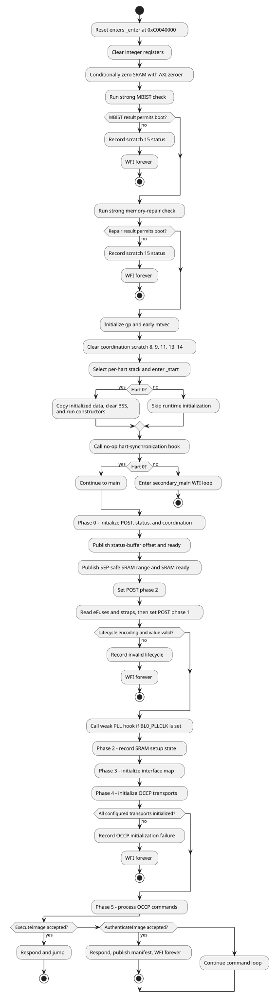
A.3.1. Assembly early boot
_enter performs these operations in order:
-
Clear general-purpose registers
x1throughx31. -
Call
__metal_sram_init_early. -
Call the strong
__metal_mbist_early_checkimplementation. -
Call the strong
__metal_memory_repair_checkimplementation. -
Establish
gp. -
Install
early_trap_vectorinmtvec. -
Clear coordination scratch registers 8, 9, 11, 13, and 14 while preserving scratch register 15.
-
Establish a 16-byte-aligned stack for the current hart and call
_start.
On hart 0, the C runtime copies initialized data from ROM, clears BSS, and
initializes TLS and constructors.
Other harts skip that initialization.
Every hart calls __metal_synchronize_harts, whose implementation linked into
the production ROM FW is a no-op, and then disables its interrupt sources.
Hart 0 calls main; the other harts enter the secondary_main wfi loop.
Unused ROM is filled with the 32-bit EBREAK instruction.
Once the early trap vector is installed, a breakpoint whose mepc lies in the linker-defined padding range writes 0xBADF00D0 to scratch register 15 and loops.
Other early traps write 0xFFFFFFFF to scratch register 0 and loop.
A.3.2. C boot phases
Initializes POST tracking, the software OCCP status word, both status ring buffers, and scratch coordination. Status initialization publishes the SEP ring-buffer offset, sets the status-buffer-ready bit, and emits its initial ring-buffer marker. The main flow then publishes the SEP-safe SRAM range and sets the SRAM-initialized bit. After publishing that state, the implementation writes POST phase 2 before it starts the phase 1 strap and eFuse work.
Caches the eFuse and strap fields used by the ROM.
The ROM validates the differential lifecycle encoding and halts on an invalid encoding or unsupported lifecycle value.
If BL0_PLLCLK is set, it calls smc_pll_init; the open implementation is a weak hook that returns success without programming a PLL.
Records the SRAM setup phase again after phase 1 completes. The actual conditional zeroing and memory-health checks have already completed in assembly.
Marks I2C0, I2C1, I3C0, I3C1, and I3C3 enabled in the software map. The current ROM uses one common map for all strap roles. OCCP initialization currently configures that same fixed set directly rather than querying the software map.
Initializes the fixed target-interface set, updates the OCCP interface status, and drives status GPIO 58 high on success or low on failure. Any initialization error is fatal to the C boot flow.
Enters the non-returning command loop described in OCCP command processing.
The ROM FW emits the SMC_STATUS_BOOT_COMPLETE ring-buffer value when the loop
is entered, but it does not set POST boot phase 6 at that point. POST phase 6
is set only before an accepted ExecuteImage transfers control.
Direct execution or authenticated handoff terminates command processing as
described in OCCP protocol.
A.4. Hardware initialization
A.4.1. Straps and eFuses
Early assembly reads strap registers at 0xC0403000 and 0xC0403004.
The C strap driver later caches the fields used for reporting or policy.
Boot stall is controlled by the dedicated GPIO 57 hardware path before ROM
execution and is not a captured strap.
| Strap | Bit | ROM use |
|---|---|---|
|
13 |
Skips the assembly memory-repair result check and records the bypass status. |
|
14 |
Cached by the strap driver; no later ROM behavior depends on it. |
|
18 |
Reported in the POST word; it does not alter the interface map. |
|
19 |
Reported as a warning and in the POST word; it does not select a different ROM flow. |
|
20 |
Controls whether the ROM calls the optional |
|
21 |
Causes |
|
22 |
Cached by the strap driver; no later ROM behavior depends on it. |
|
25 |
Reported in status and POST state; it does not select a different boot algorithm. |
|
26 |
Requests explicit SRAM clearing with the AXI zeroer. |
|
54 |
Skips the assembly MBIST result check and records the bypass status. |
|
58 |
Cached by the strap driver; no later ROM behavior depends on it. |
The four chip-ID strap bits are read from STRAPS_LO bits 11, 12, 15, and 23.
They contribute to the I2C/I3C identifier fallback described in Address selection.
The eFuse driver reads I2C/I3C identifier slots 0, 1, 3, 6, and 7 and the RESERVED_1 transport timeout.
Early assembly additionally reads:
-
RESERVED_0[6], which requests explicit SRAM clearing; and -
RESERVED_2[0], which permits boot to continue after an MBIST or memory-repair failure while preserving the failure code in scratch register 15.
A.4.2. SRAM initialization
Hardware auto-zero is assumed unless either SRAM_AUTO_ZERO_DISABLE or eFuse RESERVED_0[6] is set.
When explicit clearing is requested, __metal_sram_init_early:
-
disables machine interrupts while configuring the operation;
-
writes SRAM base
0xC0060000to zeroer destination register0xC0038200; -
writes size
0x00100000to zeroer size register0xC0038208; -
writes zero to control/status register
0xC0038210to start the operation; -
waits while busy bit 32 is set; and
-
restores the previous
mstatus.
The ROM does not perform a DMA-reset step.
A.4.3. MBIST and memory repair
The production ROM FW image links strong overrides for both early checks, so
the weak no-op definitions in mbist_check.S are not used.
Both checks read the SMU DFX status register at 0xC000B800.
They run after SRAM initialization and before stack setup.
The MBIST check uses:
-
bit 4,
mbist_done; -
bit 8,
mbist_pass; and -
bit 12,
mbist_abort.
If MBIST was not run, the ROM continues.
If it passed, the ROM continues.
An abort records 0xDEADC0DE and halts.
A failure records 0xDEADBEEF and halts unless eFuse RESERVED_2[0] permits continuation.
Scratch register 15 contains 0x12345678 while the MBIST result check is in
progress.
MEM_BIST_BYPASS records 0x12340002 and skips the check.
The memory-repair check uses:
-
bit 0,
mem_repair_done; and -
bit 1,
mem_repair_success.
If repair was not run or succeeded, the final status is normally 0x600DCAFE.
A failure records 0xBADC0FFE and halts unless eFuse RESERVED_2[0] permits continuation.
MEM_REPAIR_BYPASS records 0x12340001 and skips the check.
On its normal completion path, the repair check preserves a preceding MBIST failure, timeout, or bypass status.
If both bypass straps are asserted, the memory-repair check runs second and
replaces the MBIST-bypass value with 0x12340001.
A.4.4. Clock hook
The C flow calls smc_pll_init only when BL0_PLLCLK is asserted.
The open implementation is weak and its internal configuration function performs no register writes, so the default behavior is a successful no-op.
An adopter ROM FW build may provide a strong implementation through the
build’s additional driver-source hook.
If that implementation returns any value other than SMC_PLL_SUCCESS, the
ROM records an interface error and remains in wfi.
A.5. Memory and security
A.5.1. Image and SRAM layout
| Range | Size | Use |
|---|---|---|
|
128 KiB |
Executable ROM image. Unused bytes are filled with |
|
1 MiB |
SMC SRAM used for initialized data, TLS, BSS, stacks, heap, status buffers, and externally loaded data. |
The linker places .data, TLS, .bss, stacks, and heap upward from the SRAM base.
The global OCCP request buffer and the large read-response workspace are ordinary .bss objects; they do not occupy a separately fixed high-address window.
Two smc_ring_buffer_t objects are addressed downward from the exclusive SRAM end, 0xC0160000.
The SEP ring buffer is the last object in SRAM, and the SMC ring buffer immediately precedes it:
SMC_STATUS_BUFFER_ADDR = 0xC0160000 - 2 * sizeof(smc_ring_buffer_t) SEP_STATUS_BUFFER_ADDR = 0xC0160000 - sizeof(smc_ring_buffer_t)
Each structure contains three 32-bit metadata fields and 512 32-bit entries.
The code also defines 0xC0066400 through 0xC015AFFF as the SEP-safe region published in scratch registers 13 and 14.
A.5.2. OCCP memory-access policy
All read, write, execute, and authenticate handlers reject a zero-length policy check, arithmetic wraparound, or an access overlapping 0xC0060000 through 0xC00663FF.
That fixed 25 KiB range protects ROM-owned writable state regardless of lifecycle.
Read, write, execute, and authenticate addresses must also be 32-bit aligned; execute and authenticate addresses must be nonzero.
In a secure lifecycle state, the complete access must lie in 0xC0066400 through 0xC015FFFF.
In another valid lifecycle state, the policy function allows addresses outside SRAM as long as they do not overlap the protected ROM-owned SRAM range.
ExecuteImage adds a lifecycle check and is rejected in secure states.
AuthenticateImage uses the common policy check, then converts the address to an SRAM-relative offset for scratch register 8.
Both boot-command handlers validate an eight-byte range beginning at the
supplied address, so the complete range must satisfy the policy.
The offset helper accepts only 0xC0066400 through 0xC015FFFF; if a non-secure request supplies another otherwise permitted address, it writes the invalid marker 0xFFFFFFFF.
The current command handler still sets MANIFEST_READY after that marker is written.
The access policy does not reserve the status ring buffers from OCCP memory commands.
A.5.3. Lifecycle handling
The lifecycle register is CHIP_CONFIG.LC_STATE at 0xC000290C.
The ROM reads all eight bits as a differential encoding:
raw[7:4] == ~raw[3:0]
An encoding mismatch is invalid. For a valid encoding, the low nibble selects the policy:
| Low nibble | Classification | ROM policy |
|---|---|---|
|
Test/development |
Non-secure |
|
Production |
Secure |
|
RMA SoP |
Non-secure |
|
RMA chiplet |
Non-secure |
|
Production end |
Secure |
|
Invalid |
Record an error and remain in |
This classification affects OCCP address bounds and ExecuteImage.
It does not select different interface maps or role-specific boot flows.
A.6. Communication interfaces
The ROM enables the same target-interface set for every strap role:
-
I3C controllers 0, 1, and 3; and
-
I2C controllers 0 and 1.
I3C2 remains disabled in the software interface map.
The BOOT_I2C, BOOT_RECOVERY, and PRIMARY_CHIPLET straps are observable state but do not change this map.
A.6.1. Address selection
I3C controllers 0, 1, and 3 use eFuse identifier slots 0, 1, and 3.
The eFuse driver reads each slot as two 32-bit words but caches it in a 32-bit field, so the current ROM passes only the low 32 bits onward.
I2C controllers 0 and 1 take the low seven bits of slots 6 and 7.
An I2C value outside 0x08 through 0x77 is replaced with 0x55.
If a selected eFuse slot is zero, the ROM forms a fallback identifier by ORing the four-bit chip ID from straps with CHIP_CONFIG.CHIP_ID << 5.
The same fallback function is used for I2C and I3C slots.
I3C channels are started in subordinate mode. I2C channels are initialized in target mode.
A.6.2. Driver selection
The default I3C target symbols are weak. Their initialization functions succeed so the ROM remains linkable without an active I3C implementation, while their data methods report a hardware error and their receive-availability method reports no data. An adopter ROM FW build can replace those symbols with a strong driver.
Setting I3C_CORE=chipsalliance at build time enables the open MIPI HCI/I3CCSR implementation in i3c_hci_driver.c.
That implementation configures the target transaction interface, static address, dynamic-address-assignment acceptance, queue thresholds, and open-drain timing.
The HCI path reaches the pads through the LSIO selection and therefore leaves the GPIO hardware-function override clear. Every non-HCI build enables the GPIO hardware-function override for the I3C pad set before driver initialization, whether it uses the weak default or a strong platform driver. The ROM does not program GPIO drive strength from eFuses.
A.6.3. I3C response flow control
The HCI target implementation advertises a response only after response data is available. For responses that fit in the transmit queue, it writes all data and then writes the transmit descriptor. For larger responses, it fills the queue, writes the descriptor when the queue first becomes full, and continues filling as hardware drains data. The target hardware does not accept a private read until its response-start threshold is met.
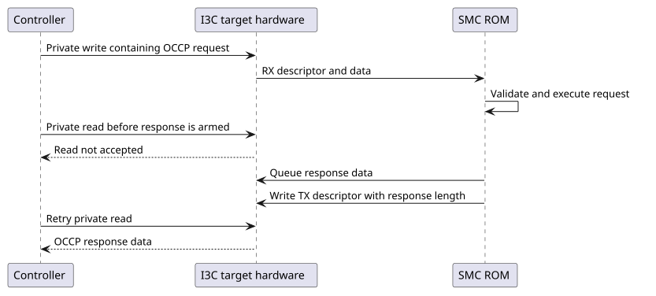
The HCI receive implementation separately tracks each inbound frame’s descriptor length and unconsumed bytes. That accounting persists across the OCCP layer’s header and body reads and supports exact incomplete/oversized-frame reporting. See OCCP protocol for the packet binding and controller-visible errors.
A.6.4. GPIO side effects
During OCCP initialization, the ROM enables the hardware-function override for CAT_THERM on GPIO 52. After transport initialization, GPIO 58 is configured as an output and driven high when all requested channel initializations succeeded or low when any failed. No status-sequence protocol is implemented on that GPIO.
A.7. Status and coordination
A.7.1. Scratch registers
The CPU-control block begins at 0xC0039000.
Scratch register 0 is at 0xC0039080; consecutive scratch registers are eight bytes apart.
| Index | Address | Use |
|---|---|---|
0 |
|
Simulation pass/fail and generic early-trap indication. |
1 |
|
Structured POST word. |
2 |
|
Virtual console output in debug-enabled builds. |
8 |
|
Manifest offset from SRAM base, or |
9 |
|
SMC-to-SEP coordination bits. |
10 |
|
Available through the MBIST-failure helper; the assembly checks use register 15. |
11 |
|
SEP status-buffer offset from SRAM base. |
13 |
|
SEP-safe SRAM start offset from SRAM base. |
14 |
|
SEP-safe SRAM size in bytes. |
15 |
|
MBIST, memory-repair, or ROM-padding-trap status. |
Assembly clears registers 8, 9, 11, 13, and 14 after installing the early trap vector. It deliberately preserves register 15.
| Bit | Name | Set when |
|---|---|---|
0 |
SRAM initialized |
Status buffers and the safe-region description have been initialized. |
1 |
Manifest ready |
|
2 |
Status buffer ready |
Scratch register 11 contains the SEP ring-buffer offset. |
3 |
SRAM protected |
Defined by the interface but not set by the current ROM. |
The published SRAM addresses are offsets from 0xC0060000.
The normal values in registers 13 and 14 describe 0xC0066400 through 0xC015AFFF.
A.7.2. Ring buffers
The ROM initializes separate SMC and SEP ring buffers at the end of SRAM.
Each holds 512 32-bit entries plus head, tail, and num_entries fields.
A write to a full buffer advances the tail and overwrites the oldest entry.
A read returns the oldest unread entry and advances the tail.
Status messages use this format:
| Bits | Field | Encoding |
|---|---|---|
31:24 |
Message type |
|
23:16 |
Firmware ID |
|
15:0 |
Value |
Boot or command-specific status value |
A.7.3. Ring-buffer status values
The SMC ROM FW writes the following boot values to the SMC ring buffer. Primary, secondary, and recovery values report sampled straps; they do not select different ROM FW algorithms.
| Value | Name | Type | Current emission |
|---|---|---|---|
|
|
Status |
|
|
|
Status |
After strap, eFuse, lifecycle, and optional PLL processing. |
|
|
Warning |
When the recovery strap is asserted. |
|
|
Status |
When the primary-chiplet strap is asserted. |
|
|
Status |
When the primary-chiplet strap is deasserted. |
|
|
Error |
Before halting on an invalid lifecycle encoding or value. |
|
|
Error |
Before halting when any configured OCCP transport fails initialization. |
|
|
Status |
After all configured OCCP transports initialize successfully. |
|
|
Status |
After the SEP-safe SRAM range and SRAM-ready indication are published. |
|
|
Status |
When the ROM FW enters the OCCP command loop, and again before an accepted
|
|
|
Error |
Only if the normally non-returning OCCP command loop returns. |
OCCP processing uses the following value families. Values described as
“base OR data” use SMC_OCCP_ERROR_WITH_DATA to OR the base with the low
eight bits of the associated command or error value. Access-denied details use
SMC_OCCP_ERROR_WITH_NIBBLE, which computes
base | ((detail & 0xF) << 8).
| Base value | Name | Current use |
|---|---|---|
|
|
Packet-header transport read failure. |
|
|
Unknown application or message ID; data identifies the rejected value. |
|
|
Header validation, command execution, or interface-unlatch detail. Unlatch events use warning type; command failures use error type. |
|
|
Invalid or excessive |
|
|
Misaligned or policy-rejected read address. |
|
|
Invalid or excessive write-command length. |
|
|
Misaligned or policy-rejected write address. |
|
|
Defined for authenticate security failures but not emitted by the current implementation. |
|
|
Authenticate transport, address, or policy failure. |
|
|
Accepted |
|
|
|
|
|
|
Handler-specific error values do not replace the command loop’s common error
report. After most handlers return an error, the loop emits a second
SMC_OCCP_ERROR_CMD_FAILED value with the returned internal error code.
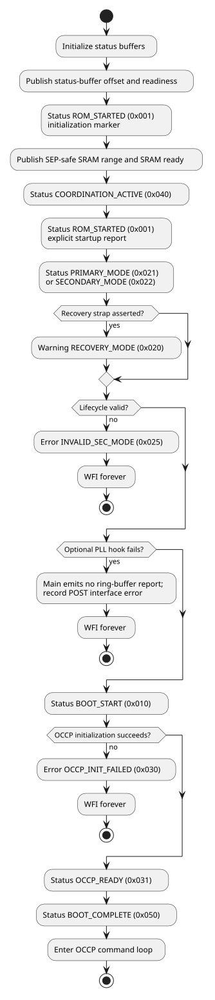
The STATUS_RPT_DISABLE strap does not disable ring-buffer initialization or writes.
It only rejects OCCP GetStatus.
A.7.4. Software OCCP status word
The ROM maintains an in-memory 32-bit status word:
| Bits | Field | Current update behavior |
|---|---|---|
3:0 |
Boot status |
Initialized to zero. The current main flow does not advance this field. |
7:4 |
Interface status |
Set to ready after successful transport initialization or error after failure. |
15:8 |
Command count |
Incremented when a successful packet-header transport read reaches the common end of the command iteration, including header-validation and dispatch errors; wraps from 255 to 0. Header-read transport failures and successful terminal handoffs are not counted. |
23:16 |
Last internal error |
Updated after command failures. |
31:24 |
Reserved |
Zero. |
GetStatus IDs 0x0000 through 0x0003 expose individual fields in the status-message envelope described in OCCP protocol.
A.7.5. POST word
Scratch register 1 carries a structured development-observability word.
| Bits | Field | Values used by the ROM |
|---|---|---|
31:28 |
Boot phase |
0 initialization, 1 straps/eFuses, 2 SRAM setup, 3 interface setup, 4 OCCP ready, 5 OCCP processing, 6 boot complete, 7 error |
27:24 |
OCCP state |
0 idle, 1 command received, 2 processing, 3 response ready, 4 complete, 5 error |
23:20 |
Latched interface |
0 none, 1 I3C0, 2 I3C1, 4 I3C3, 5 I2C0, 6 I2C1 |
19:16 |
Error |
0 none, 1 SRAM, 2 interface, 3 command, 4 access, 5 invalid security mode |
15:12 |
Security decisions |
Bits indicate secure, production, and RMA SoP classifications. |
11:8 |
Boot observations |
Bits indicate primary strap, recovery strap, I2C boot strap, and SRAM-auto-zero-disable strap. |
7:4 |
Strap observations |
Bits 7 and 4 are reserved; bits 6 and 5 indicate status-report disable and memory-repair bypass. |
3:0 |
Coordination |
Bits indicate SRAM ready, manifest ready, status buffer ready, and coordination active. |
POST state reports decisions made by the current ROM; it is not a separate boot-control interface.
During startup, the implementation writes boot-phase values in the sequence
0, 2, 1, 2, 3, 4, and 5. The first phase-2 write follows publication of the
SRAM coordination state; phase 1 then records strap and eFuse processing, and
the second phase-2 write records the explicit C-flow SRAM phase.
The SMC_STATUS_BOOT_COMPLETE ring-buffer value emitted on entry to the OCCP
loop does not set POST boot phase 6. The ROM FW sets phase 6 only immediately
before an accepted ExecuteImage transfers control.
A.8. OCCP command processing
This section describes the ROM command-loop implementation. Packet formats, command semantics, CRCs, transport binding, and controller-visible errors are defined in OCCP protocol.
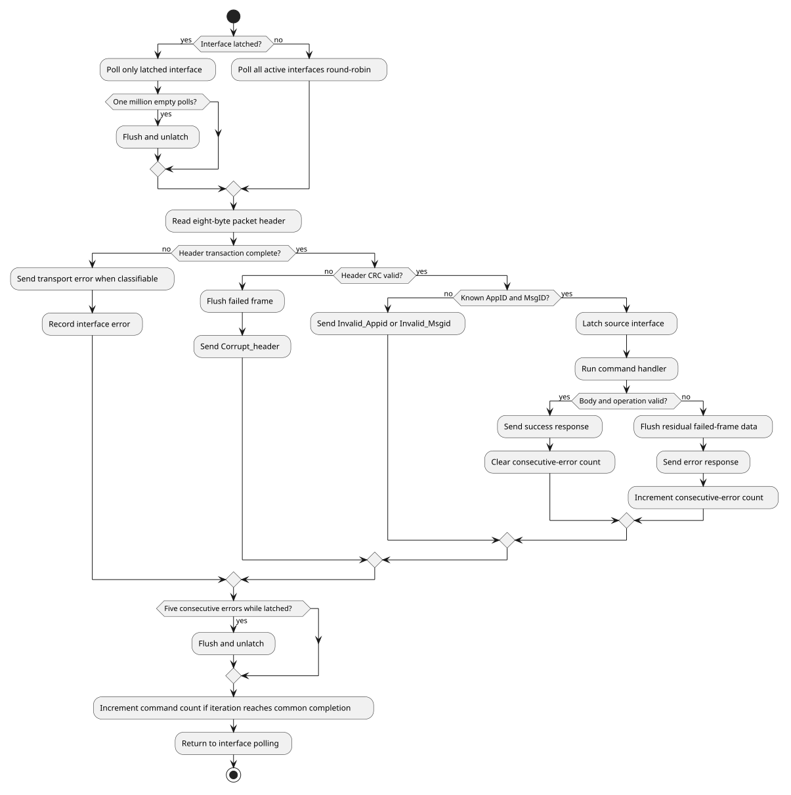
A.8.1. Polling and latching
Before latching, the loop polls each active interface in array order: I3C0, I3C1, I3C3, I2C0, and I2C1. After an unlatch, round-robin polling begins with the interface after the one just released.
The ROM latches when it receives a header with a valid CRC and a numerically recognized AppID/MsgID. Latching occurs before command-body length, CRC, address, and execution checks, so a recognized command that later fails validation still selects the interface. While latched, traffic on other interfaces is ignored.
One million polling iterations without receive data causes the current interface to be flushed and unlatched.
While an interface is latched, five consecutive header-read or
command-execution errors also cause an unlatch.
Errors received before any interface is latched do not increment that
threshold counter.
A successfully completed handler clears the consecutive-error count.
smc_occp_force_unlatch exposes the same unlatch operation to linked ROM FW
code.
A.8.2. Receive and dispatch
The loop reads the eight-byte packet header first. For a valid header, it dispatches directly on AppID and MsgID. Each handler then checks its required body length, reads the body plus optional CRC, validates body integrity, performs command-specific policy checks, and sends a response.
The POST OCCP-state field progresses through command received, processing, response ready, and complete or error.
The software OCCP command count increments when a packet-header transport read
succeeds and processing reaches the common end of the command iteration. This
includes header-validation failures, invalid application or message IDs, and
handlers that return success or error.
Successful ExecuteImage and AuthenticateImage handlers do not return and
therefore do not increment the count.
Initial header-read failures return to polling before that increment.
A.8.3. Failed-frame cleanup
Failed-frame cleanup occurs in these contexts:
-
header-validation errors flush residual body data before transmitting the error response;
-
the
GetVersionhandlers flush unexpected residual bytes and reportOversize_msgwhen any are found; -
a command failure flushes residual data unless its error-response path already performed the flush; and
-
an unlatch flushes the selected interface before returning to all-interface polling.
The I2C flush is bounded by the configured transport timeout and a maximum of 2,079 bytes. The HCI I3C flush is frame-aware: it discards bytes owed by the abandoned frame and complete stale frames already represented by descriptors, then stops when that frame ledger is clean. It does not use an idle-time window to consume newly arriving commands.
A.8.4. Terminal commands
ExecuteImage sends its success response before transferring control and therefore never returns to this loop.
AuthenticateImage sends its success response before publishing the manifest coordination state and parking in wfi.
No command-processing or status-only service loop remains active after AuthenticateImage.
Appendix B: SEP Boot ROM
|
The production ROM firmware and this documentation are works in progress and are not ready for production use. |
B.1. Overview
The SEP production ROM is the immutable BL0 Root-of-Trust firmware. It starts at the SEP CPU reset vector, establishes a usable machine-mode environment, selects a manifest source, validates that manifest and its payload, and transfers control to SEP BL1 in ICCM.
The firmware has three cold-boot modes. A primary chiplet in normal mode reads the primary or backup manifest from SPI flash. A primary chiplet in recovery mode and every secondary chiplet wait for the SMC to stage a manifest in SMC SRAM. A warm reset takes a separate assembly path and may return directly to a BL1 handler in ICCM.
The implementation is divided into:
-
reset, warm-dispatch, memory-health, PMP, and C-runtime setup in
src/vector.S; -
boot orchestration in
src/rom_main.c; -
manifest and payload processing in
src/oca_boot.c, which drives the OCA validator library vendored attools/tt-oca-manifest/, with this ROM’s platform callbacks (key authorization, revocation, anti-rollback, signature verification, payload decryption) insrc/oca_platform.c; -
SPI, DMA, cryptographic, lifecycle, and SMC-interface support in
src/andinclude/; and -
ROM and DCCM placement in
link/rom.ld.
These implementation files are the source of truth for firmware ordering and
policy. SEP RTL, generated register collateral, the SEP memory-map chapter,
and link/rom.ld define hardware addresses and image placement. The production
Makefile and configs/ define build and packaging behavior. DV tests provide
observable execution evidence but do not define the architecture.
Successful BL0 execution does not return and does not report a BL0 pass.
rom_handoff_bl1() transfers control to BL1, which owns the eventual success
verdict. A terminal BL0 error records its status and parks the hart in wfi
until reset.
The SEP Boot ROM chapter of the Technical Reference Manual specifies the boot flow requirements that this firmware implements.
B.2. Boot flow
The assembly entry path handles every operation that must run before a stack or trustworthy DCCM exists. The C path starts only after the memory-health gate, DCCM scrub, and runtime initialization complete.

B.2.1. Assembly entry
_start parks every hart except hart 0. Hart 0 installs a trap vector that
does not use the stack, configures the CPU memory attributes, and examines
cold_scratch[7] before touching DCCM. This ordering preserves the BL1 runtime
state on a watchdog reset.
The cold path establishes the stack and global pointer, installs the C-capable
trap vector, opens the outbound filter window used by later firmware, and
programs PMP. It then evaluates the SMC memory-repair and MBIST status. A
failed check stops the boot unless the corresponding strap or
SKIP_MEM_CHECK fuse policy permits it. Only after this gate passes does the
ROM scrub DCCM, copy initialized data from ROM, clear BSS, and call
rom_main().
B.2.2. C boot sequence
rom_main() performs these operations in order:
-
Verify that
.dataand.bsswere initialized. -
Probe the SMC scratch round-trip and report the ROM version and hash.
-
Read the captured straps and initialize status reporting and the selected clock.
-
Initialize
bl0_state, check that its DCCM reserve does not overlap the stack, validate the lifecycle state, and read the chip ID. -
Run the peripheral/bus reset sequence and the SHA-256 self-test, apply the configured SRAM and ICCM initialization, read
SBOOT_DIS, install the stack canary, and initialize the DMA. -
Select SPI, recovery, or secondary mode.
-
Probe the SMC coordination state and check the stack canary.
-
Load and validate a manifest and payload.
-
Decide demotion, lock sensitive fuse reads, verify the lock, and record the boot measurement.
-
Copy BL1 to ICCM and transfer control.
Errors detected by C code converge on rom_err_fail(). The function records the
error in bl0_state when available, publishes machine-readable status, writes
the failure verdict, and enters a non-returning wfi loop.
A trap takes a separate path. trap_handler_c() writes the failure verdict
alone, so neither bl0_state nor the machine-readable status word records a
trap-terminated boot. Status and error reporting describes both trap
vectors.
B.3. Hardware initialization
B.3.1. Captured straps
The ROM reads the captured GPIO straps through the SMC mandatory window.
include/sep_smc_interface.h defines the SEP-visible offsets and bit
positions.
| Strap | Register bit | ROM field | Effect |
|---|---|---|---|
Primary chiplet |
|
|
Selects the SPI path when recovery is clear; otherwise selects the secondary SMC-SRAM path. |
Boot recovery |
|
|
Makes a primary chiplet wait for an SMC-staged manifest. |
BL0 PLL clock |
|
|
Selects the PLL initialization hook instead of the reference clock. |
Disable status reporting |
|
|
Skips the SMC-SRAM status ring; scratch-register status remains available. |
Bypass SRAM repair |
|
assembly only |
Skips the memory-repair result check because repair did not run. |
Bypass MBIST result |
|
assembly only |
Ignores the MBIST result. |
Rotate update |
|
|
Swaps the order of the primary and backup SPI manifest slots. |
B.3.2. Early CPU and fabric setup
The reset path programs the VeeR EL2 memory-region attributes before its first scratch-register access. It then configures the outbound filter window used by later firmware status traffic and programs PMP regions for the Boot ROM, DCCM, status mailbox, SEP SRAM, SEP peripherals, and ICCM.
The cold policy grants the SEP-visible SMC boot aperture at 0x4000_0000
through 0x407F_FFFF. This covers every SMC register and SRAM location the ROM
uses without granting the separate SMU aperture.
PMP_ENABLE controls whether these entries are programmed. Enabled entries are
locked, bound to machine mode with Smepmp MMWP, and remain non-executable
except for the Boot ROM until the selected BL1 destination is released at
hand-off.
B.3.3. Memory-health gate
Before writing DCCM, the assembly path reads the SMC DFX status. It checks that memory repair succeeded unless repair was bypassed, waits for MBIST completion, and checks that MBIST passed unless its result was bypassed. A failed, aborted, or timed-out check records the raw status in SMC scratch register 10.
The current code uses a fixed MBIST_DONE_WAIT_ITERS bound. This value is an
implementation limit rather than a calibrated silicon duration. If
STATUS_RPT.SKIP_MEM_CHECK is clear, failure is terminal; if it is set, the
boot continues. That bit is not allocated by the current SEP eFuse RDL and
must not be treated as a production fuse contract without a corresponding
register specification.
B.3.4. Runtime memory initialization
The cold path scrubs DCCM_SCRUB_BYTES, then copies .data from its ROM load
address and clears .bss. The default is the full 128 KiB DCCM, including the
reserved bl0_state area, so each word receives valid ECC before C uses it.
The C path can clear part or all of SEP SRAM according to SRAM_SCRUB_BYTES.
The open build defaults this value to zero because the programmed simulation
flow may preload data in that memory. The manifest load overwrites its staging
region, but this simulation choice does not define a production sanitization
policy.
ICCM is initialized through the secure DMA because the CPU load/store path
cannot write it. ROM_ICCM_CLEAR_ENABLE defaults to one. With
ROM_ICCM_CLEAR_FULL=0, the BL1 copy establishes ECC for the image and the
handoff clears a bounded pad beyond it so adjacent instruction fetches are
valid. Setting ROM_ICCM_CLEAR_FULL=1 clears the entire ICCM before handoff.
BUILD_TYPE=release selects release keys and output paths but does not change
these two defaults; a release policy that requires clearing all ICCM residue
must set ROM_ICCM_CLEAR_FULL=1. Both variables are part of the build-flags
stamp, so changing either rebuilds the affected objects.
B.3.5. C initialization
The C path validates its runtime state, initializes the SMC-backed status
channel when enabled, and selects the reference or PLL-derived clock. It then
initializes bl0_state, validates the lifecycle state, reports the SMC chip ID,
and runs SHA-256 over the NIST "abc" vector as a crypto-engine self-test.
The peripheral/bus reset function currently reports that the sequence is not implemented. DMA setup and the selected SPI-controller initialization occur later, immediately before boot-source processing.
B.4. Memory and security
B.4.1. Image and runtime layout
| Region | Address | Size | Use |
|---|---|---|---|
SEP SRAM |
|
256 KiB |
Manifest and payload staging. |
Boot ROM |
|
64 KiB |
BL0 code, metadata, read-only data, and the load image of |
External XIP window |
|
256 MiB aperture |
Memory-mapped external flash window; an accepted secure-DMA source, and the boot-flash source when built with |
SMC SRAM |
SEP view |
1 MiB |
Recovery/secondary manifest source and status ring storage. |
ICCM |
|
256 KiB |
Validated BL1 execution image. |
DCCM |
|
128 KiB |
BL0 writable data, BSS, stack, and BL0-to-BL1 state. |
The linker keeps .text, .metadata, and .rodata in ROM. .data executes
from DCCM but has a ROM load image. .bss and the stack occupy only DCCM. A
256-byte reserve at the top of DCCM holds struct bl0_state
(BL0_STATE_RESERVE_BYTES in include/bl0_state.h, which link/rom.ld must
match); runtime and compile-time checks keep the structure from overlapping the
downward-growing stack.
bl0_state gives BL1 the validated manifest address, boot mode, secure-boot
decision, lifecycle and feature-control values, last error, boot measurement,
deferred BL2 demotion decision, and the SRAM address of the BL1 image.
B.4.2. Security ordering
The following ordering is part of the ROM security contract:
-
Memory repair and MBIST are evaluated before the ROM writes or trusts DCCM.
-
The lifecycle state is validated before it can select secure-boot policy.
-
Manifest bounds and structure are checked before payload addresses are used.
-
For an encrypted image, the payload hash covers ciphertext and is checked before in-place decryption; the TOC is parsed only after decryption.
-
Image ranges are checked before image data is hashed.
-
Sensitive fuse reads are locked before the demotion register is written.
-
The stack canary is checked before the non-returning manifest and handoff path.
-
BL1 is copied only after the manifest, payload, TOC, and BL1 entry have all passed validation.
Hash and public-key digest comparisons accumulate differences over every byte instead of returning on the first mismatch.
B.4.3. Lifecycle and secure-boot policy
The lifecycle controller accepts TEST_DEV, PROD, PROD_END, and the defined RMA encodings. An invalid value causes BL0 to hold the SMC cores in reset, report a terminal error, and stop.
SBOOT_DIS is an eFuse override that disables secure boot. When it is clear,
PROD and PROD_END enforce secure boot regardless of the manifest request, and
so do TEST_DEV and RMA_SiP when CHIPLET_DBG is set in SIP_DIS or
SYS_DIS (or either vector is read-locked). Otherwise TEST_DEV and both RMA
states enable secure boot when the manifest requests it. An encrypted
payload is rejected when secure boot is not active.
B.4.4. Manifest authentication
The ROM always checks the SHA-256 manifest hash over the to-be-signed region. When secure boot is active it additionally:
-
compares the manifest security version with the thermometer-encoded
BL1_VERSIONfuse; -
selects a ROM-embedded or eFuse public-key digest;
-
checks the corresponding revocation bit;
-
binds the manifest RSA modulus to the selected digest; and
-
verifies the RSA-3072 PKCS#1 v1.5 signature with OTBN.
The public key in the manifest is therefore not trusted by itself. The Key Manager does not participate in this verification path.
B.4.5. Payload protection
The payload SHA-256 is checked on both secure and non-secure boots. Secure
encrypted images derive an AES-128 key from the CLASS_KEY fuse with
KBKDF-HMAC-SHA256 and decrypt the payload in place with AES-CBC. Temporary key,
salt, and derivation buffers are explicitly cleared.
After decryption, the ROM validates the TOC and every image extent, requires a
usable SEP BL1 entry, and verifies each image SHA-256. It does not clear the
bytes in gaps between described images or after the final image; payload gap
zeroing is an open gap in the implementation-status table of rom.adoc.
B.4.6. Secret locking, demotion, and measurement
Before handoff, BL0 read-locks CLASS_KEY, both RMA token digests, and the
chiplet, SiP, and system UIDs. Failure to read back all requested lock bits is
terminal.
PROD_END prevents demotion and locks both demotion registers. Other lifecycle
states apply the BL1 decision or preserve a deferred BL2 decision according to
the manifest. BL0 records a SHA-256 boot measurement over the manifest hash,
lifecycle, demotion decision, secure-boot state, and SBOOT_DIS. This digest
reports the selected boot state to BL1; it does not itself bind a key to that
state.
B.5. SPI and manifest processing
B.5.1. Flash transports
include/boot_flash.h presents one flash-offset interface to the manifest
loader. BOOT_SPI_CONTROLLER_OT selects the implementation at build time:
-
The default (
BOOT_SPI_CONTROLLER_OT=1) uses the OpenTitan SPI host. It issues command/FIFO transfers and drains its receive FIFO through the secure DMA (BOOT_OT_SPI_USE_PIO=0). Thepio-toolchain-imagesprofile selects CPU programmed I/O (BOOT_OT_SPI_USE_PIO=1) and writes its ROM tobuild_pio/. -
BOOT_SPI_CONTROLLER_OT=0reads memory-mapped flash through the external XIP window with the secure DMA. Controller bring-up is the weak hook set insrc/sep_spi.c, which reports the controller as absent; an integrator overrides it with a real driver throughOCAH_FW_OVERLAY_SOURCES_sep.
Controller initialization receives the clock selected earlier in the boot. Failure is not immediately terminal because the loader can proceed to another configured slot.
B.5.2. Boot source and slot selection
The SPI path uses fixed manifest offsets:
| Slot | Manifest offset | Selection |
|---|---|---|
Primary |
|
First unless |
Backup |
|
Second unless |
On recovery or secondary boot, the ROM does not use either SPI offset. It waits
for SMC_SEP_STATUS_MANIFEST_READY, reads the manifest offset from SMC scratch
register 8, and adds that offset to the SEP-visible SMC SRAM base.
B.5.3. Manifest layout
The manifest is an OCA classic manifest with a 4096-byte body. Bytes
[0, 3172) are the signed region — everything from the magic through the
four-byte 0xCA trailer at offset 3168 — which both the RSA signature and the
manifest hash cover. Bytes [3172, 4096) are the unsigned tail holding the
signature, the manifest hash and the payload offset. Because the payload offset
is in that tail it is attacker-controlled even on a validly signed manifest, so
the ROM bounds it against the region the slot may reach rather than trusting it.
The payload begins with a PTOC header followed by the image entries and their
image data.
The format and its numeric constants come from the OCA specification and its
layout header, tools/tt-oca-manifest/validators/oca/lib/oca_layout_classic.h,
vendored as a submodule. The YAML files under configs/ are test-image producer
inputs; they do not supersede the format the library consumes on BL0’s behalf.
B.5.4. Per-slot validation
For each selected slot, BL0 performs this sequence:
-
Read the fixed manifest header into SEP SRAM.
-
Validate the identifier, major version, manifest length, alignment, payload offset and length, SRAM bounds, and non-overlap.
-
Verify the manifest hash.
-
Decide whether secure boot is active and apply selected lifecycle, chiplet ID, and package ID usage constraints.
-
Read any permitted manifest extension and stage the payload.
-
Under secure boot, check rollback, authorize and check the root key, verify RSA-3072, verify the payload hash, and decrypt an encrypted payload. Without secure boot, still verify the payload hash.
-
Validate the TOC, image count, image order and bounds, per-image hashes, and the presence and placement of SEP BL1.
An encrypted payload is authenticated as ciphertext before decryption. The TOC inside it is interpreted only after decryption.
B.5.5. Retry behavior
The SPI path can attempt both slots. rotate_update exchanges their order. A
failed attempt records its error; before another attempt BL0 clears the SEP
SRAM staging region and reinitializes the flash controller. A failed
reinitialization is terminal because the remaining slot cannot be read.
The SMC-SRAM path has one source and no alternate slot. Exhausting the
available attempts reports SEP_MSG_MANIFEST_LOAD_FAILED and enters the common
failure path.
B.5.6. Verification evidence
hw/sys/sep/dv/cocotb/tests/rom_fw/sep_rom_ot_secure_boot_test.py exercises
the signed OpenTitan SPI-host DMA path. It requires evidence that the ROM took
the SPI source, read the primary manifest at 0x1000, started RSA
verification, accepted the signature, and completed crypto validation. It also
forbids SBOOT_OFF, so a silent downgrade cannot satisfy the test.
That testcase injects deterministic raw noise at the entropy-source
decorrelator inputs with +esrc_noise_force because the ring oscillators do
not self-oscillate under Verilator. BL0 brings up the entropy source, CSRNG,
and EDN chain; the health tests and downstream command handshakes remain real.
The test therefore demonstrates ROM entropy-chain initialization as well as
the manifest, transport, OTBN RSA, and handoff paths. It does not demonstrate
the physical ring-oscillator noise source.
The DMA and PIO receive paths are covered separately because they are separate
datapaths. sep_rom_ot_pio_boot_test runs the build_pio image, which does
not link ot_spi_flash_read_dma at all, so passing one of the two proves
nothing about the other. hw/sys/sep/dv/testlists/rom_fw.toml lists the whole
ROM regression; the cases named here are the ones that bear directly on
manifest and transport processing, not the extent of ROM coverage.
B.6. SMC coordination
SEP reaches SMC resources through its outbound AXI path at
SEP_SMC_GLOBAL_BASE, 0x4000_0000. The offsets and status bits in
include/sep_smc_interface.h form the SEP side of the interface contract.
They are SEP-visible offsets and must not be replaced with SMC-local absolute
addresses.
B.6.1. Shared scratch registers
SMC CPU-control scratch registers have an eight-byte stride. The table covers
every low 32-bit entry SEP BL0 consumes or writes, together with the entries the
shared interface reserves for SMC alone. include/sep_smc_interface.h names all
of them except index 7, which BL0 addresses by literal index:
| Index | Name | BL0 role | Use |
|---|---|---|---|
1 |
POST code |
None |
SMC boot-status publication. |
2 |
Virtual console |
None |
SMC debug text channel. |
7 |
Scratch round-trip probe |
Writes |
BL0 writes four test patterns, reads each back, and clears the entry to zero before it selects a boot source. A read-back mismatch is terminal. SMC must not keep its own state here. |
8 |
Manifest address |
Consumes |
Byte offset of an SMC-staged manifest from the SMC SRAM base. |
9 |
Status to SEP |
Consumes |
SMC-to-SEP readiness flags. |
10 |
MBIST failure |
Writes |
Raw DFX status recorded by the SEP pre-C memory-health gate. |
11 |
Status-buffer address |
Consumes |
Byte offset of the SEP status ring from the SMC SRAM base. |
13, 14 |
SEP-safe SRAM start and size |
None |
SMC-published range available to SEP. |
15 |
Memory-repair status |
None |
SMC memory-repair result. |
Scratch register 9 defines four readiness flags: SRAM initialized, manifest ready, status buffer ready, and SRAM protected. BL0 reads the flags relevant to the operation it is about to perform rather than treating the word as one global ready indication.
B.6.2. Manifest handoff
Recovery and secondary boot wait until the manifest-ready bit is set. BL0 then reads the offset from scratch register 8 and forms the source address as:
SEP_SMC_GLOBAL_BASE + SMC_SRAM_OFFSET + manifest_offsetThe resulting manifest and payload must remain inside the one-MiB SMC SRAM window. The ROM copies them to SEP SRAM before validation and execution.
The two halves of that window requirement are enforced differently, and an
integrator has to account for both. The ROM checks the payload source range
itself: a payload that starts below the SMC SRAM base or ends above it is
rejected with OCA_FAIL_PAYLOAD_LOCATION (console PAYLOAD_LOC_FAIL), as is an address computation that
overflows. The manifest header read is not checked. BL0 adds the offset from
scratch register 8 to the SMC SRAM base and issues the header transfer without
a range or overflow test, so keeping that offset inside the window is SMC’s
obligation. A header read from outside the window is caught only afterwards, by
the manifest identifier, version, length, and hash checks on the bytes it
returned.
The normal primary-chiplet SPI path does not consume the SMC manifest offset, but it still uses SMC for captured straps, DFX status, chip identity, and status reporting.
B.6.3. Status-buffer handoff
When status reporting is enabled, BL0 waits for the status-buffer-ready bit in scratch register 9. It reads the ring-buffer offset from scratch register 11, checks that the ring header lies within SMC SRAM, and then publishes non-debug status through that ring. SEP owns the ring head and SMC owns the tail.
An invalid offset leaves the scratch-register status channel operational and prevents BL0 from writing through an untrusted ring pointer.
B.6.4. Probe behavior
Before loading a manifest, rom_smc_coordination_probe() reports the status
word, manifest offset, and status-buffer offset for diagnosis. The probe does
not replace the blocking checks in manifest and status initialization; it
records whether the corresponding SMC state was already ready at that point.
B.7. Status and error reporting
BL0 uses SEP cold scratch registers for channels that must be reachable before the outbound fabric and C runtime are available.
| Register | Channel | Contract |
|---|---|---|
|
Terminal verdict |
BL0 writes the failure value only. A successful boot transfers to BL1, which owns the pass verdict. |
|
Machine-readable status |
Carries encoded status and error values throughout assembly and C execution. |
|
Virtual console |
Carries packed debug characters when debug output is compiled in. |
|
Warm-reset handler |
Carries the BL1 ICCM re-entry address across a watchdog reset. |
B.7.1. Status encoding
include/errors.h encodes a status as an eight-bit type, an eight-bit firmware
stage ID, and a 16-bit value. BL0 uses information, warning, error, debug, and
extended-information types. include/status_values.h is the authoritative
registry for SEP_MSG_* values; consumers should use its names rather than
copying numeric values from this document.
Every status is written to cold_scratch[1]. Debug values stop there. Other
types are also offered to the SMC-SRAM ring when ring reporting is enabled and
valid.
B.7.2. Status ring
The status ring is lock-free: SEP advances head, and SMC advances tail.
Before an entry write, BL0 validates the entry count, head, tail, remaining
capacity, and destination address. An invalid state reports
SEP_MSG_STATUS_REPORTING_INVALID through cold_scratch[1] and does not write
the entry.
Capacity is reserved by severity. Informational status preserves space for a warning and an error; warning status preserves space for an error. At the reservation boundary BL0 inserts the corresponding overflow marker. An error can use the final free entry.
B.7.3. Trap handling
The reset path first installs a stack-free trap vector. It records a general
exception status followed by mcause, mtval, and mepc, then restores the
decodable status word and writes the failure verdict. It uses only SEP scratch
registers, so an early exception does not depend on external address decode.
After the stack is valid, BL0 installs the C-capable trap vector. It reports the same CSRs through the debug console, writes the terminal failure verdict, and stops.
B.7.4. Error convergence
C error paths converge on rom_err_fail(). When bl0_state is initialized,
the function stores the full error code there. It also publishes an encoded
error in cold_scratch[1], writes the failure verdict in
cold_scratch[0], and enters a wfi loop.
Manifest failures use the MANIFEST_ERR_* namespace, formed as
OCA_BOOT_ERR_BASE | oca_result_t — the OCA library’s verdict carried in the
low byte. The enumeration is
tools/tt-oca-manifest/validators/oca/lib/oca_validator.h, and
status_for_result() in src/oca_boot.c is the only bridge between it and the
SEP_MSG_* codes the status ring carries.
Other terminal firmware errors are defined next to their owning implementation
or in include/errors.h. These registries, rather than this document, are the
source of numeric values.
Memory-repair and MBIST failure can occur before the C runtime and
bl0_state exist. That path records the raw DFX word in SMC scratch register
10, leaves a terminal status in cold_scratch[1], and stops without relying on
the outbound mailbox.
B.8. BL1 handoff
The payload TOC may describe SEP and SMC images. BL0 scans it for the first
IMAGE_TYPE_SEP_BL1 entry and validates that the complete image lies inside
ICCM, that its length is nonzero and no larger than ICCM, and that its entry
offset lies inside the image. These checks run during payload validation and
are repeated at handoff.
B.8.1. ICCM copy
The VeeR EL2 instruction-fetch unit can execute from ICCM, but the CPU load/store unit cannot read or write it. ICCM and DCCM occupy the same VeeR region, and load/store address checking treats ICCM addresses outside the DCCM offset as unmapped.
BL0 therefore uses the secure DMA to copy the validated BL1 bytes from the
payload in SEP SRAM to the entry’s ICCM load address. A CPU memcpy cannot
replace this transfer.
BL1’s binary contains executable code and the load image of its own read-only
and writable data. Because BL1 also cannot read its ICCM copy, BL0 stores the
payload source address in bl0_state.bl1_image_src_addr. BL1 startup uses that
SRAM source when initializing DCCM.
B.8.2. Transfer of control
The entry address is the ICCM load address plus the TOC entry offset. After the
DMA succeeds, BL0 writes the entry to mepc, executes fence.i and fence,
and uses mret to transfer control. This makes the newly written instructions
visible to the fetch unit and completes prior memory activity before BL1 runs.
The handoff is non-returning. Reaching its caller again is an error. BL0 does not publish a success verdict before the transfer; BL1 proves successful execution through its own status path.
B.8.3. Shared state
BL1 locates struct bl0_state at the top of DCCM and validates its leading and
trailing magic words and size. The structure communicates:
-
the validated manifest and BL1 source addresses;
-
selected boot mode and secure-boot state;
-
lifecycle and feature-control values;
-
the boot measurement and deferred BL2 demotion decision; and
-
the last BL0 error, when execution did not reach handoff.
BL0 and BL1 must use the same include/bl0_state.h layout.
B.8.4. Warm-reset return
BL1 may place an ICCM handler address in SEP cold_scratch[7] before enabling
the watchdog. This register bank survives the warm watchdog reset. On reset,
BL0 reads the slot before setting a stack or touching DCCM:
-
zero selects a cold boot, after which BL0 poisons the slot with
-1; -
an address inside ICCM makes BL0 clear the slot to 0 and transfer control to the handler, so BL1 must re-arm the slot on every handler entry; and
-
any other nonzero value reports an invalid target and stops.
The direct warm path preserves BL1 DCCM and ICCM state. The handler must restore any CPU state reset by the watchdog before resuming normal execution.
Appendix C: Key Manager Application ROM
The KM ROM runs on PicoRV32. It initializes the subsystem, services SEP mailbox requests, manages KPV keys and crypto-engine sideloads, handles faults, and can hand control to mutable firmware in SRAM.
For SEP callers, start with the command reference, response reference and common sequences. The remaining sections describe the ROM implementation: initialization, message processing, interrupts, drivers, libraries and key management. After SRAM handover, the mutable image owns the mailbox service.
C.1. Firmware Global Parameters
SHRED_ITER indicates the number of extra overwrite passes used during
shred operations. Any shred sequence therefore performs SHRED_ITER + 1
total passes.
C.2. Command Message Reference
The SEP communicates with the KM through a framed command/response
protocol carried over the mailbox FIFOs. The ROM replies to complete command
frames with RESP_CMD, including validation failures. An overflowing partial
frame instead takes the recovery path; a fatal fault can prevent a normal
reply. Successful handover sends one confirmation before leaving the ROM
service. The KM also emits unsolicited readiness, shared-key and fault messages.
All reserved fields read as 0 and must be written as 0. The maximum payload length for a single message is 255 32-bit words (1020 bytes). The message header CRC and payload CRC are validated independently before command execution. Header validation, sequence checking, command decoding, payload-length checking, and payload CRC checking all occur before a command handler is allowed to act on the payload.
Packet diagrams show each 32-bit word from bit 31 (most significant) on the
left to bit 0 (least significant) on the right. Field widths are proportional
to their bit counts; reserved fields are shaded grey. Word offsets start at
zero within the message or payload shown. In the message layouts, n is
PAYLOAD_LEN.
All command messages use the following container format.
Key Manager command-message format shows the command header, payload words, and checksum placement.
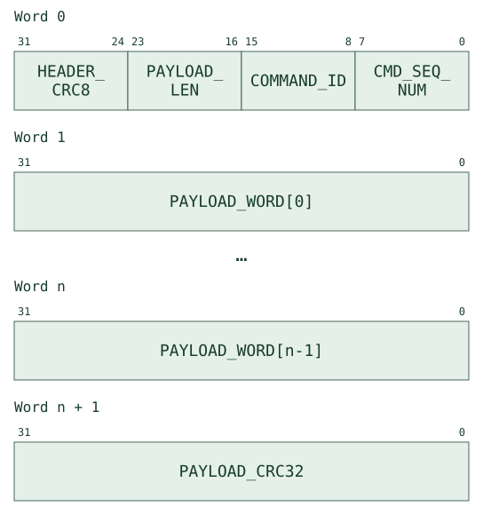
Key Manager command-message fields defines the command container fields.
| Field | Description |
|---|---|
|
The command message sequence number. It is reset to zero during initialization or during any message buffer flush. This value must increment with each message. It must roll over to 0 after reaching the maximum value. |
|
The ID of the command for the KM to execute. This determines how the |
|
The length of the message payload in number of 32-bit words, not including the |
|
A CRC-8/ROHC computed over the 24-bit message header { |
|
A 32-bit data word for the command message payload, where n is always less than |
|
A CRC-32C (Castagnoli) computed from the command payload in little endian order from |
The mailbox separator marks the final word: the header for a zero-payload
message, otherwise the payload CRC. Command and response counters are separate
8-bit counters, initially zero and wrapping after 255. Once a header passes
CRC and sequence validation, the expected command sequence advances even if a
later check rejects the command. header_crc and cmd_noseq do not advance it.
Mailbox recovery flushes reset both counters; see Error Recovery.
The full validation order is in Incoming Message Handler.
Key Manager command summary lists the command IDs and their functions.
| ID | Command | Purpose |
|---|---|---|
|
|
Request KM hardware version. |
|
|
Request KM ROM firmware version. |
|
|
Request KM SRAM firmware version (handled by mutable firmware once loaded). |
|
|
Request KM status information. |
|
|
Acknowledge a recoverable fault. |
|
|
Commit KM to ROM execution; disable all subsequent handover commands. |
|
|
Stream a firmware image from the mailbox, load to SRAM, and execute. |
|
|
Jump to previously-loaded mutable firmware in SRAM. |
|
|
Generate a random key. |
|
|
Revoke an existing key. |
|
|
Transfer a key to crypto engines. |
|
|
Purge crypto engine key registers. |
|
|
Load host-provided key material into the KPV. |
|
|
Capture the Adams Bridge ML-KEM shared key into the KPV. |
|
|
Set cold-reset-domain OTP field read-lock bits (survive warm reset). |
C.2.1. 0x00 - CMD_HW_VER
Description
Requests KM hardware version information.
Payload
This command has no payload.
Response
This command has a RESP_CMD response with a return code of success,
and a return argument containing the version of the hardware.
Key Manager hardware-version response shows the hardware-version fields returned on success.
C.2.2. 0x01 - CMD_ROM_VER
Description
Requests KM ROM firmware version information.
Payload
This command has no payload.
Response
This command has a RESP_CMD response with a return code of success,
and a return argument containing the version of the ROM firmware.
Key Manager ROM-version response shows the ROM-version fields returned on success.
C.2.3. 0x02 - CMD_SRAM_VER
Description
Requests KM SRAM firmware version information (if any).
The ROM always returns failure with no return argument, including when an image is stored in SRAM but is not executing. Once the KM has handed control to SRAM, that image is responsible for implementing the version query.
Payload
This command has no payload.
Response
The mutable-firmware version response uses success with the packed version argument below. ROM cannot provide that response on the image’s behalf.
Key Manager SRAM-version response shows the SRAM firmware-version fields returned on success.
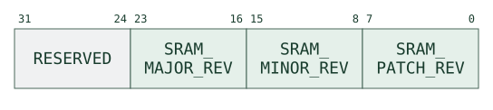
C.2.4. 0x03 - CMD_STAT
Description
Requests KM status information.
Payload
This command has no payload.
Response
This command has a RESP_CMD response with a return code of success,
and a return argument containing the KM status information.
Key Manager status response shows the status word returned by CMD_STAT.
Key Manager status fields defines the recoverable-fault flag and reserved status bits.
| Bit | Name | Description |
|---|---|---|
|
|
The value of the |
|
|
All other fields reserved. |
C.2.5. 0x04 - CMD_RECOV_ACK
Description
Acknowledges a recoverable error event in the KM. This command clears the
RECOVERABLE_ERR bit in the KMCSR.
Payload
This command has no payload.
Response
This command has a RESP_CMD response with a return code of success,
and no return argument.
C.2.6. 0x10 - CMD_EXEC_ROM
Description
Commits the KM to continued ROM execution for the lifetime of the current
warm-reset epoch. Once this command succeeds, all subsequent
CMD_EXEC_ROM, CMD_SRAM_LOAD_EXEC, and CMD_SRAM_EXEC commands return
failure without taking any action. The inhibit flag is cleared on every
warm or cold reset, so the SEP may choose again after reboot.
Payload
This command has no payload.
Response
This command has a RESP_CMD response with a return code of success on
first call, or failure if a handover command has already been issued in
this epoch (including a prior CMD_EXEC_ROM).
C.2.7. 0x11 - CMD_SRAM_LOAD_EXEC
Description
Loads an image at SRAM address 0x8000, verifies its CRC-32C and transfers
control to it. The SEP must wait for the direct RESP_CMD success confirmation
before streaming exactly FW_WORDS raw image words and a CRC-32C trailer,
with the separator on the trailer. This image frame bypasses normal message
buffering and the 255-word command-payload limit.
The command returns failure if CMD_EXEC_ROM disabled handover. Reserved
size bits, zero FW_WORDS, or an image extending above __km_fw_load_limit
return invalid_arg with argument 0, before requesting an image. The
region-aligned load ceiling protects the worst-case ROM stack, including
warm-reset restarts (ROM Stack Budget and the Static Load Ceiling).
Confirmation accepts the transfer; it does not certify the image. A CRC
mismatch raises the fatal fw_crc fault. On success, ROM performs the
SRAM Firmware Handover procedure and never returns to the dispatcher.
The mutable image must send its own ready message.
Payload
Key Manager SRAM-load command payload shows the image-size word sent with CMD_SRAM_LOAD_EXEC.
Key Manager SRAM-load payload fields defines the firmware word count and reserved bits.
| Field | Name | Description |
|---|---|---|
|
|
Must be written as zero. |
|
|
Firmware image size in 32-bit words. Does not include the trailing CRC-32C word appended by the SEP. Must be non-zero. |
Image Frame
After receiving the RESP_CMD confirmation, the SEP sends exactly one
mailbox frame with the following structure (Key Manager SRAM image frame).
| Word | Content |
|---|---|
|
Firmware image words, in order. |
|
CRC-32C of the image (words 0 to FW_WORDS-1), in little-endian byte order. The mailbox separator bit must be set on this final word. |
Response
If validation succeeds, the KM sends a RESP_CMD success response (the
"confirmation") directly to the outbound FIFO before reading the image.
This response has no return argument. The KM never returns to the
dispatcher after sending this response; no second RESP_CMD is emitted.
If validation fails (handover disabled, zero FW_WORDS, reserved bits set,
or image exceeds the stack guard region), a RESP_CMD error response is
sent by the normal dispatcher path.
C.2.8. 0x12 - CMD_SRAM_EXEC
Description
Instructs the KM ROM to jump to previously-loaded mutable firmware stored
in SRAM. The firmware must have been loaded by a prior CMD_SRAM_LOAD_EXEC
command in an earlier boot epoch (i.e., sram_fw_size > 0 in the
rom_persist region).
The KM sends a RESP_CMD success response directly, then executes the same
handover finish sequence as CMD_SRAM_LOAD_EXEC
(SRAM Firmware Handover). The mutable firmware
is responsible for sending its own ready message to the SEP.
Payload
This command has no payload.
Response
If a firmware image is present (sram_fw_size > 0), the KM sends a
RESP_CMD success response directly and then never returns.
If no firmware has been loaded (sram_fw_size == 0), the command returns
invalid_arg with no return argument via the normal dispatcher.
If the handover-disabled flag is set, the command returns failure.
C.2.9. 0x22 - CMD_KEY_GENERATE
Description
Requests a freshly generated random key.
Payload
The size of the requested key in multiples of 32-bit words (equal to
REQ_SIZE+1), as well as the valid destinations for the key.
Key-generation command payload shows the requested size and destination-policy words for CMD_KEY_GENERATE.
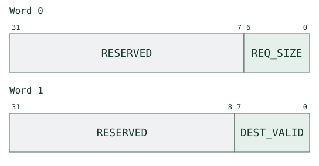
Key-generation destination policy defines the permitted-destination bits for a generated key.
| Bit | Name | Description |
|---|---|---|
|
|
Key transfer to the HMAC engine is permitted when set to 1. |
|
|
Key transfer to the KMAC engine is permitted when set to 1. |
|
|
Key transfer to the AES engine is permitted when set to 1. |
|
|
Key transfer to the OTBN engine is permitted when set to 1. |
|
|
Key transfer to the Adams Bridge ML-DSA seed is permitted when set to 1. |
|
|
Key transfer to the Adams Bridge ML-KEM seed D is permitted when set to 1. |
|
|
Key transfer to the Adams Bridge ML-KEM seed Z is permitted when set to 1. |
|
|
Key transfer to the Adams Bridge ML-KEM message is permitted when set to 1. |
Response
If any arguments are invalid, this command has a RESP_CMD response with
a return code of invalid_arg, and a return argument pointing to the
index of the invalid payload word: 0 for REQ_SIZE, 1 for DEST_VALID.
REQ_SIZE is a 7-bit field, so the largest key it can request is 128 words. Any
payload word greater than 127 is rejected as invalid_arg with return_arg =
0, including one whose reserved bits [31:7] are non-zero.
DEST_VALID must select at least one of the eight destinations and have no
reserved bits set. The KM returns failure if it cannot store the key or
allocate a handle. A key occupies ceil((REQ_SIZE + 1) / 16) consecutive
eligible slots: the encoded size counts words, not slots. Allocation and
failure effects are described in Key Management.
If the request is granted, this command has a RESP_CMD response with a
return code of success, and a return argument containing the parameters
of the generated key, including its handle, its size, and its valid
destinations. The granted size must always be equivalent to the requested
size.
Key-generation success response shows the generated key handle, size, and destination policy returned on success.

C.2.10. 0x23 - CMD_KEY_REVOKE
Description
Erases a vault key and invalidates its handle. Engine copies require a separate purge (Key Revocation).
Payload
The handle for the key to invalidate.
Key-revoke command payload shows the key handle sent with CMD_KEY_REVOKE.
Response
If any arguments are invalid, this command has a RESP_CMD response with
a return code of invalid_arg, and a return argument pointing to the
index of the invalid payload word.
If the request cannot be satisfied for any other reason, this command has
a RESP_CMD response with a return code of failure, and no return
argument.
If the request is granted, this command has a RESP_CMD response with a
return code of success, and a return argument containing the handle of
the revoked key.
Key-revoke success response shows the revoked key handle returned on success.
C.2.11. 0x24 - CMD_KEY_TRANSFER
Description
This command transfers a key from the KPV to one or more crypto engines, given a valid key handle and a bitfield of requested destinations. Requested destination crypto engines must be permitted by the destination-policy bitmask stored for the key handle in the key registry.
Payload
The handle of the key to transfer in the KPV and the bitmask of the destination crypto engines.
Key-transfer command payload shows the key handle and requested destination-engine mask.

Key-transfer requested engines defines the destination-engine bits in the transfer request.
| Bit | Name | Description |
|---|---|---|
|
|
Key transfer to the HMAC engine is requested when set to 1. |
|
|
Key transfer to the KMAC engine is requested when set to 1. |
|
|
Key transfer to the AES engine is requested when set to 1. |
|
|
Key transfer to the OTBN engine is requested when set to 1. |
|
|
Key transfer to the Adams Bridge ML-DSA seed is requested when set to 1. |
|
|
Key transfer to the Adams Bridge ML-KEM seed D is requested when set to 1. |
|
|
Key transfer to the Adams Bridge ML-KEM seed Z is requested when set to 1. |
|
|
Key transfer to the Adams Bridge ML-KEM message is requested when set to 1. |
Response
If any arguments are invalid, this command has a RESP_CMD response with
a return code of invalid_arg, and a return argument pointing to the
index of the invalid payload word.
If the request cannot be satisfied for any other reason, this command has
a RESP_CMD response with a return code of failure, and no return
argument. If any requested crypto engines are disallowed, the request
will result in failure and no requested key transfers will take place.
A driver failure after transfer begins does not undo earlier engine writes
(Key Management).
If the request is granted, this command has a RESP_CMD response with a
return code of success, and a return argument containing the key handle
and a bitfield of the crypto engines to which the key was transferred.
Key-transfer success response shows the key handle and completed-engine mask returned on success.
Key-transfer completed engines defines the destination-engine bits in the transfer response.
| Bit | Name | Description |
|---|---|---|
|
|
Key transfer to the HMAC engine was completed when set to 1. |
|
|
Key transfer to the KMAC engine was completed when set to 1. |
|
|
Key transfer to the AES engine was completed when set to 1. |
|
|
Key transfer to the OTBN engine was completed when set to 1. |
|
|
Key transfer to the Adams Bridge ML-DSA seed was completed when set to 1. |
|
|
Key transfer to the Adams Bridge ML-KEM seed D was completed when set to 1. |
|
|
Key transfer to the Adams Bridge ML-KEM seed Z was completed when set to 1. |
|
|
Key transfer to the Adams Bridge ML-KEM message was completed when set to 1. |
C.2.12. 0x25 - CMD_ENGINE_SHRED
Description
This command will purge the key data registers from one or multiple crypto engines. These registers will be scrambled with random data. Any nonzero subset of the eight engines may be selected.
Payload
A bitfield indicating the crypto engines to purge.
Key-purge command payload shows the engine mask sent with the key-purge request.
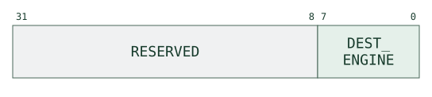
Key-purge requested engines defines the bits selecting the engines whose key registers are to be purged.
| Bit | Name | Description |
|---|---|---|
|
|
Key purging of the HMAC engine is requested when set to 1. |
|
|
Key purging of the KMAC engine is requested when set to 1. |
|
|
Key purging of the AES engine is requested when set to 1. |
|
|
Key purging of the OTBN engine is requested when set to 1. |
|
|
Key purging of the Adams Bridge ML-DSA seed is requested when set to 1. |
|
|
Key purging of the Adams Bridge ML-KEM seed D is requested when set to 1. |
|
|
Key purging of the Adams Bridge ML-KEM seed Z is requested when set to 1. |
|
|
Key purging of the Adams Bridge ML-KEM message is requested when set to 1. |
Response
If any arguments are invalid, this command has a RESP_CMD response with
a return code of invalid_arg, and a return argument pointing to the
index of the invalid payload word.
If the request cannot be satisfied for any other reason, this command has
a RESP_CMD response with a return code of failure, and no return
argument.
If the request is granted, this command has a RESP_CMD response with a
return code of success, and a return argument indicating the crypto
engines that were purged.
Key-purge success response shows the engine mask returned after a successful purge.
Key-purge completed engines defines the bits reporting which engines were purged.
| Bit | Name | Description |
|---|---|---|
|
|
Key material of the HMAC engine was purged when set to 1. |
|
|
Key material of the KMAC engine was purged when set to 1. |
|
|
Key material of the AES engine was purged when set to 1. |
|
|
Key material of the OTBN engine was purged when set to 1. |
|
|
Key material of the Adams Bridge ML-DSA seed was purged when set to 1. |
|
|
Key material of the Adams Bridge ML-KEM seed D was purged when set to 1. |
|
|
Key material of the Adams Bridge ML-KEM seed Z was purged when set to 1. |
|
|
Key material of the Adams Bridge ML-KEM message was purged when set to 1. |
C.2.13. 0x26 - CMD_KEY_LOAD
Description
This command loads and write-locks host-provided key material into the KPV.
Payload
The SEP must provide the key size in multiples of 32-bit words (where the
key size is KEY_SIZE+1) and the valid destinations for the key,
followed by the key material itself.
Key-load command payload shows the size, destination policy, and key words sent with CMD_KEY_LOAD.
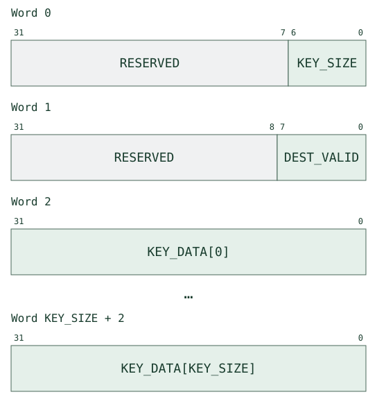
Key-load destination policy defines the permitted-destination bits for a loaded key.
| Bit | Name | Description |
|---|---|---|
|
|
Key transfer to the HMAC engine is permitted when set to 1. |
|
|
Key transfer to the KMAC engine is permitted when set to 1. |
|
|
Key transfer to the AES engine is permitted when set to 1. |
|
|
Key transfer to the OTBN engine is permitted when set to 1. |
|
|
Key transfer to the Adams Bridge ML-DSA seed is permitted when set to 1. |
|
|
Key transfer to the Adams Bridge ML-KEM seed D is permitted when set to 1. |
|
|
Key transfer to the Adams Bridge ML-KEM seed Z is permitted when set to 1. |
|
|
Key transfer to the Adams Bridge ML-KEM message is permitted when set to 1. |
On-wire payload integrity is provided by the standard mailbox
PAYLOAD_CRC32 trailer; there is no command-specific key CRC word. After
the key is accepted, the firmware computes its own CRC-32C over KEY_DATA
and stores it in the key registry for later integrity checks (see
Key Registry).
Argument validation
The KM validates the payload header words in a strict, fixed order and
returns RESP_CMD with return code invalid_arg at the first failure.
The return argument is the fixed header-word index of the offending field
(0 for KEY_SIZE / length, 1 for DEST_VALID), not an arbitrary
KEY_DATA position.
CMD_KEY_LOAD Validation Order lists the validation checks in order and the error returned at each failure.
| Step | Check | Return Code | Return Arg |
|---|---|---|---|
1 |
|
invalid_arg |
|
2 |
|
invalid_arg |
|
3 |
|
invalid_arg |
|
4 |
|
invalid_arg |
|
5 |
|
invalid_arg |
|
Capacity and success
A key requires ceil((KEY_SIZE + 1) / 16) consecutive eligible slots and a
previously unused handle. Resource exhaustion returns failure with no
argument before modifying the vault. The recovery gate also rejects this
command before its handler runs (Error Recovery).
The shared load path registers the handle and CRC, shreds and writes the selected slots, then write-locks them. A subsequent slot-write failure destroys the handle registration, but does not roll back vault writes already performed. Do not treat every failure as an atomic no-op.
On success, the return argument contains the new handle, requested size and allowed destinations. The handle works like a generated-key handle.
Key-load success response shows the loaded key handle, size, and destination policy returned on success.
C.2.14. 0x27 - CMD_ABR_SK_TRANSFER
Description
Captures the Adams Bridge ML-KEM shared key into the KPV. Adams Bridge
delivers a freshly computed ML-KEM shared key into the KM over the shared-key
sideload interface and raises the shared-key interrupt; the KM firmware
notifies the SEP with an unsolicited RESP_ABR_SHARED_KEY_READY (see
0x56 - RESP_ABR_SHARED_KEY_READY). The SEP then issues this command to direct
the KM to consume the pending shared key and store it as a managed KPV key.
The KM reads the 256-bit (8-word) shared key, clears the interface
KEY_VALID (which zeroizes the source key registers), writes the key into a
freshly allocated KPV slot, records the SEP-supplied DEST_VALID in the key
registry, write-locks the slot, and returns a key handle usable by every other
key-management command.
Payload
The valid crypto engine destinations for the captured key.
Adams Bridge shared-key capture payload shows the destination policy supplied for the captured shared key.
Adams Bridge shared-key destination policy defines the permitted destinations for the captured shared key.
| Bit | Name | Description |
|---|---|---|
|
|
Key transfer to the HMAC engine is permitted when set to 1. |
|
|
Key transfer to the KMAC engine is permitted when set to 1. |
|
|
Key transfer to the AES engine is permitted when set to 1. |
|
|
Key transfer to the OTBN engine is permitted when set to 1. |
|
|
Key transfer to the Adams Bridge ML-DSA seed is permitted when set to 1. |
|
|
Key transfer to the Adams Bridge ML-KEM seed D is permitted when set to 1. |
|
|
Key transfer to the Adams Bridge ML-KEM seed Z is permitted when set to 1. |
|
|
Key transfer to the Adams Bridge ML-KEM message is permitted when set to 1. |
Response
The KM validates the payload in a fixed order and returns RESP_CMD with
return code invalid_arg (return argument 0, the sole payload word index)
if DEST_VALID has any reserved bit set ([31:8]) or is zero.
If no shared key is currently available (the interface KEY_VALID is clear),
the command returns RESP_CMD failure with no return argument. A failure
response is also returned if storage or handle allocation fails. Capture
consumes and zeroizes the source key before allocation; an allocation
failure therefore cannot be retried against the same pending source key.
If the request is granted, the command returns RESP_CMD success with a
return argument containing the handle of the newly stored key.
Adams Bridge shared-key capture response shows the newly allocated key handle returned on success.
C.2.15. 0x28 - CMD_OTP_READ_LOCK_COLD
Description
Sets one or more cold-reset-domain OTP field read-lock bits in the
OTP_READ_LOCK_COLD register. The effective read-lock for each OTP
field is the OR of the corresponding bit in OTP_READ_LOCK (warm
reset domain) and OTP_READ_LOCK_COLD (cold reset domain). When
either lock bit is set, hardware returns zero for that field’s value
and complement words.
Unlike OTP_READ_LOCK, bits set by this command survive warm reset
(including soft reset) and are cleared only by cold reset. This
allows the SEP host to apply permanent read-locks that persist for
the lifetime of a power cycle, regardless of subsequent warm resets.
Payload
A bitmask selecting which OTP fields to lock. Bits [31:9] are
reserved and must be zero; a non-zero reserved field returns
invalid_arg. Writing 0 is a no-op; already-set bits are unaffected
(write-one-to-set, idempotent).
The command takes exactly one payload word. A frame carrying no payload word returns invalid_len rather than invalid_arg, because the length check precedes any inspection of the argument.
OTP cold-read-lock command payload shows the lock bits sent with CMD_OTP_READ_LOCK_COLD.
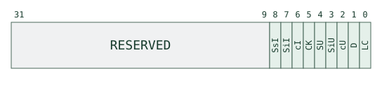
OTP cold-read-lock bit encoding maps each payload bit to the OTP field whose reads it locks.
| Bit | Field | Description |
|---|---|---|
|
|
Lock |
|
|
Lock |
|
|
Lock |
|
|
Lock |
|
|
Lock |
|
|
Lock |
|
|
Lock |
|
|
Lock |
|
|
Lock |
The three identity fields (cI, SiI, SsI) hold per-owner public values, so
locking them conceals nothing. They carry locks so that the OTP block stays
regular and so that firmware has the same means to gate their re-read as it has
for the secret UID fields.
Response
If any reserved bit [31:9] is set, the command returns RESP_CMD
invalid_arg with return_arg = the raw lock_bits word received.
On success the command applies the lock bits (triple-write convention)
and returns RESP_CMD success with return_arg = the resulting
OTP_READ_LOCK_COLD register value after the write.
OTP cold-read-lock success response shows the resulting lock-register value returned on success.
C.3. Response Message Reference
Key Manager response-message format shows the response header, payload, and checksum placement.
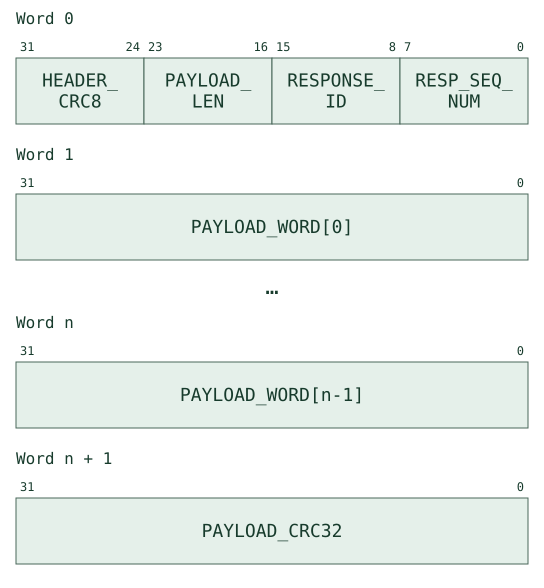
The KM sends response messages to the SEP using the exact same basic message container format as command messages.
The sequence numbers of response messages do not correspond to the sequence numbers of command messages. There is also no direct relationship between command IDs and response IDs.
Key Manager response summary lists the response IDs and the events that generate them.
| ID | Response | Trigger |
|---|---|---|
|
|
Command result or pre-handover confirmation. |
|
|
Unsolicited; KM finished init and entered main loop. |
|
|
Unsolicited; Adams Bridge ML-KEM shared key is available to capture. |
|
|
Unsolicited; KM hit a recoverable fault. |
|
|
Unsolicited; KM hit an unrecoverable fault. |
C.3.1. 0x00 - RESP_CMD
Description
The result of a command frame, or the confirmation that starts SRAM handover. Its payload echoes the source command; its response-header sequence number belongs to the independent response stream.
Payload
The sequence number from the source command, the source command ID, a
signed 8-bit return code, and an optional argument. The return code occupies
bits [7:0] of its word; bits [31:8] are zero, including for negative codes.
The fault-message payloads instead sign-extend their codes to 32 bits.
Key Manager command-response payload shows the source command, return code, and optional return argument.
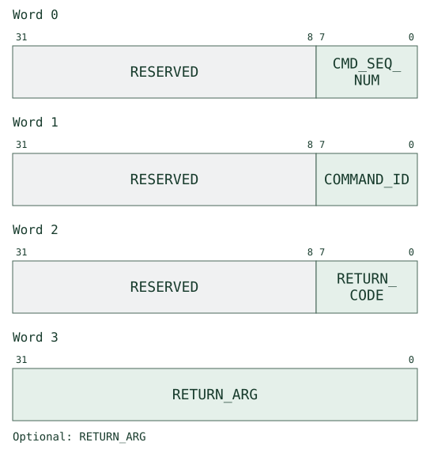
Key Manager command return codes defines the command result codes and their return arguments.
| Code | Name | Description | Argument Value |
|---|---|---|---|
|
|
General success code. |
Specific to the type of source |
|
|
General failure code. |
Specific to the type of source |
|
|
The header CRC-8/ROHC of the source command was invalid. No action was taken. |
The CRC-8/ROHC the KM computed over the received header, i.e. the value the SEP should have sent. |
|
|
The |
The next expected command sequence number. |
|
|
|
None. |
|
|
Either the |
The actual length of the message payload that was received. |
|
|
The payload CRC-32C of the source command was invalid. No action was taken. |
The CRC-32C the KM computed over the received payload, i.e. the value the SEP should have sent. |
|
|
One or more payload arguments of the source command were invalid. No action was taken. |
Usually the invalid payload-word index. |
Both CRC return arguments carry the KM’s computed value. Recovery gating and the ordering of fault and command responses are defined in Error Recovery.
C.3.2. 0x55 - RESP_KM_READY
Description
An unsolicited response message that indicates the KM has completed initialization and has entered its main event loop. Serves as a proof of life indicator for the SEP.
Payload
This message has no payload.
C.3.3. 0x56 - RESP_ABR_SHARED_KEY_READY
Description
An unsolicited response message that notifies the SEP that Adams Bridge has
delivered an ML-KEM shared key into the KM and it is available to capture. The
KM emits this notification from its main loop after the shared-key interrupt
fires and its ISR flags the pending event. The SEP responds by issuing
CMD_ABR_SK_TRANSFER (see 0x27 - CMD_ABR_SK_TRANSFER) to store the key in the
KPV and obtain a handle.
Payload
This message has no payload.
C.3.4. 0xFE - RESP_RECOVERABLE_FAULT
Description
An unsolicited response message that indicates the KM has encountered a recoverable fault.
Payload
A signed 8-bit code indicating the cause of the fault, sign-extended to the
full payload word. Only [7:0] is meaningful; because every code is negative,
[31:8] reads as all ones rather than zero.
Key Manager recoverable-fault payload shows the sign-extended recoverable-fault code.

Key Manager recoverable-fault codes lists the recoverable faults reported to the SEP host.
| Code | Name | Description |
|---|---|---|
|
|
The CRC-32C check for a key slot has failed. Whatever operation triggered the fault was aborted. |
|
|
The message receive buffer has encountered a message overflow. This is caused by a singular incomplete message filling up the message receive buffer. All message buffers and mailbox FIFOs have been flushed by the KM. |
|
|
The KM outgoing mailbox FIFO has encountered an overflow condition. All message buffers and mailbox FIFOs have been flushed by the KM. |
|
|
The KM incoming mailbox FIFO has encountered an underflow condition. All message buffers and mailbox FIFOs have been flushed by the KM. |
|
|
The KM mailbox was flushed by the SEP. All message buffers have been flushed by the KM. The mailbox FIFOs are not flushed. |
C.3.5. 0xFF - RESP_UNRECOVERABLE_FAULT
Description
An unsolicited response message that indicates the KM has encountered an unrecoverable fault. The report precedes SRAM shredding and the final halt; receiving it alone is not evidence that those later steps have completed. See Error Recovery for the firmware path and its limits.
Payload
A signed 8-bit code indicating the cause of the fault, sign-extended to the
full payload word. Only [7:0] is meaningful; because every code is negative,
[31:8] reads as all ones rather than zero.
Key Manager unrecoverable-fault payload shows the sign-extended unrecoverable-fault code.
Key Manager unrecoverable-fault codes lists the unrecoverable faults reported to the SEP host.
| Code | Name | Description |
|---|---|---|
|
|
The wipe state signal was asserted; the ROM has entered its fatal-fault path. |
|
|
The ROM encountered a parity error. |
|
|
The SRAM encountered a parity error. |
|
|
The ROM encountered a write error. |
|
|
The SRAM encountered a write error to a write-locked region. |
|
|
The KM system fabric encountered an AXI DECERR. |
|
|
The KM system fabric encountered an AXI SLVERR without a higher-priority enabled fault taking precedence. A DRBG read timeout also raises SLVERR, and is reported as |
|
|
There was an error reading from the DRBG. A DRBG read timeout answers the CPU with SLVERR in the same cycle as it flags the DRBG error, so both status bits are set; firmware reports this condition as |
|
|
An illegal instruction was encountered. |
|
|
The CPU core encountered an internal bus error or misaligned access. |
|
|
An EBREAK instruction was executed. |
|
|
An unrecognised IRQ source was asserted. |
|
|
The OTP controller reported a dual-rail integrity violation. |
|
|
The loaded mutable firmware image failed its CRC-32C integrity check. The KM halts; recovery requires a warm or cold reset. |
|
|
The per-word firmware load guard detected a destination at or above the static load ceiling. The KM halts; recovery requires a warm or cold reset. |
|
|
A shred operation was requested with a word count that exceeded the shred-order buffer. The KM halts; recovery requires a warm or cold reset. |
|
|
An instruction fetch was attempted from a non-whitelisted (non-executable) memory region other than the ROM (execute-permission whitelist violation). The KM halts; recovery requires a warm or cold reset. |
|
|
A ROM instruction fetch or data read was attempted after the ROM lockout engaged (ROM lockout). The ROM handler can report this code only while ROM remains executable. After lockout, blocked reads return zero and set sticky status; a blocked fetch can lead to an illegal-instruction trap without a mailbox report. Warm or cold reset restores ROM access. |
C.4. Common Sequences
C.4.1. Initial Boot
As soon as the KM is taken out of reset, it begins executing out of the
ROM. The ROM performs basic setup routines such as initialization of
peripherals and their drivers, as well as scrambling sensitive memory
locations like the KPV and crypto engine sideload key registers. Once the
boot process is complete, the KM sends a liveness message to the SEP via
RESP_KM_READY and waits for further instruction via mailbox commands.
At this point the SEP may want to query hardware and/or firmware version
and status via the CMD_HW_VER, CMD_ROM_VER, and CMD_STAT.
C.4.2. SEP Key Loading
Send CMD_KEY_LOAD with the encoded word count,
DEST_VALID and key data. The SEP does not write KPV slots directly. On
success, retain the returned handle, size and destination policy for later
operations. Allocation, storage and failure behavior are defined in the command
reference and Key Management.
C.4.3. Key Transfer and Sideload Purge
The SEP requests transfer of a key from the KPV to any crypto engine
sideload key register via the CMD_KEY_TRANSFER command. The SEP
provides a handle for the key and a bitmask indicating the destination
sideload key registers. The KM will respond with success when the
operation is complete. Use the command reference for the distinction between malformed arguments
(invalid_arg) and an unavailable handle or disallowed destination (failure).
When the SEP is done with the crypto engine, it issues the
CMD_ENGINE_SHRED command to purge key material in the key sideload
registers. The KM will respond with success when the operation is
complete.
C.4.4. Adams Bridge Shared-Key Capture
Adams Bridge delivers a shared key into KM; the ISR
acknowledges the event without consuming the key. The main loop sends
RESP_ABR_SHARED_KEY_READY. The SEP then sends
CMD_ABR_SK_TRANSFER with a destination policy and
retains the returned handle on success. Capture consumes the source before
vault allocation, so a storage failure requires a new shared-key delivery.
C.4.5. Key Revocation
Use CMD_KEY_REVOKE to erase the key’s vault slots and
invalidate its handle. Unsealed slots become reusable; sealed slots retire
until reset (KPV Driver). Revocation does not purge copies
already sideloaded into engines. Use CMD_ENGINE_SHRED for those copies.
C.4.6. Error Recovery
Recoverable faults
RECOVERABLE_ERR gates key operations until the SEP acknowledges the fault.
While it is set, only CMD_HW_VER, CMD_ROM_VER, CMD_SRAM_VER, CMD_STAT
and CMD_RECOV_ACK reach their handlers; other valid commands return failure
with no argument. Normal frame validation still runs first.
For key_slot_crc, the fault response precedes the triggering command’s
RESP_CMD failure. The SEP must drain both before sending CMD_RECOV_ACK,
so that the outstanding command result is not mistaken for the acknowledgement.
The key fault does not flush the mailbox or reset sequence counters.
Mailbox overflow, underflow and an overflowing partial RX frame flush the
hardware FIFOs and software buffers, then reset both sequence counters. A
SEP-initiated flush resets the software buffers and counters without flushing
the FIFOs again. These transport faults send a fault response without a paired
command reply; the first response after the reset has sequence zero. Resume
commands at sequence zero, take the necessary recovery action, then send
CMD_RECOV_ACK. Its handler clears RECOVERABLE_ERR and returns success.
Unrecoverable faults
When executable ROM code enters the normal fatal handler, it performs:
-
Shred all eight engine sideload banks and zeroize the Adams Bridge shared key.
-
Flush the mailbox FIFOs and send
RESP_UNRECOVERABLE_FAULTdirectly to the outbound FIFO, bypassing the TX buffer. -
Shred SRAM in assembly: one Weyl-sequence pass and two xoshiro128++ passes. The assembly loads PRNG state before overwriting memory, then performs no SRAM reads or C stack accesses during or after the overwrite loops.
-
Trap the CPU, asserting the unrecoverable-fault signal to the SEP. A warm or cold reset is required to restart ROM.
The sideload and SRAM wipes share the weak rom_unrec_wipe_enabled() predicate,
enabled by default; DV builds can override it. The report and trap are outside
that gate. Fault-path shredding never reseeds from the DRBG, so it does not
wait for an entropy source that may itself have failed.
The report is sent after sideload shredding but before SRAM shredding. It is not a completion acknowledgement for the wipe. Nor does every hardware halt execute this ROM path: a trap or blocked ROM fetch can prevent firmware from reporting a fault (ROM lockout).
shred_range has a separate fail-stop path. An out-of-range shred count reports
the fault directly and traps, without the sideload wipe, mailbox flush or SRAM
wipe; calling the normal handler would re-enter the failing shred routine.
Current callers use compile-time-bounded counts, so this guard indicates a
firmware defect or corrupted state.
C.4.7. SRAM Firmware Handover
The KM ROM supports handing control from immutable ROM to mutable SRAM
firmware via the CMD_SRAM_LOAD_EXEC (load + run) or CMD_SRAM_EXEC
(re-run previously loaded firmware) commands.
The high-level steps for CMD_SRAM_LOAD_EXEC are:
-
Validate. The ROM checks
FW_WORDS > 0and that the firmware image fits below the static load ceiling__km_fw_load_limit— a build-time constant computed by the linker asSTACK - __rom_max_stack, rounded down to a 1 KB SRAM write-lock region boundary, where__rom_max_stackis the worst-case ROM stack depth validated against the production ELF (see ROM Stack Budget and the Static Load Ceiling). If either check fails, the command returns invalid_arg and no image is requested. -
Confirm. The ROM clears
sram_fw_size, waits for the TX buffer to drain, disables inbound mailbox FIFO IRQs, and sends aRESP_CMDsuccess ("confirmation") directly to the outbound FIFO. The SEP may then begin streaming the image. -
Stream. The ROM polls the inbound FIFO directly (bypassing the normal message buffer), storing each word into SRAM starting at
0x8000and accumulating a running CRC-32C. A per-word guard (defense-in-depth on top of the static__km_fw_load_limitvalidation) ensures the destination address never reaches the load ceiling. -
Verify. The trailing CRC-32C word (sent by the SEP as the last word of the frame) is compared against the computed value. A mismatch triggers the
fw_crcunrecoverable fault. -
Persist. On success,
sram_fw_sizeis updated toFW_WORDS × 4. -
Shred sideload keys. The HMAC, KMAC, AES, and OTBN sideload key-share registers, together with the four Adams Bridge seed sideload interfaces (ML-DSA seed, ML-KEM seed D, ML-KEM seed Z, ML-KEM message), are overwritten with PRNG data and their
key_validbits cleared, and the Adams Bridge ML-KEM shared key is zeroized (KEY_CTRLcleared, hardware wipesKEY[*]). These register banks lie outside the SRAM address space, so the whole-SRAM scramble below cannot reach them; shredding here denies mutable firmware any key material the ROM previously sideloaded or any shared key delivered but not yet consumed. -
Lock sensitive data. OTP secret fields and the
rom_persistSRAM region are locked, and the KPV is closed to mutable firmware: using the key registry, every registered slot is read-locked (lock_use) and every free slot is shredded through the hardware erase path. KPV key data has no warm reset, is descrambled on KM-port reads, and is only write-locked by the load path, so without this step live keys would be readable in plaintext by mutable firmware. Note that this read-lock is what denies mutable firmware the surviving key material; it is not the per-slotsealbit (KPV Driver), which no ROM flow sets. The erase path is not gated by slot locks, so even an unregistered write-locked slot has its old contents destroyed. -
Write-lock the image. The SRAM write-lock mask is set to cover all 1 KB regions that contain the loaded image. The load-time bounds check guarantees those regions are disjoint from the ROM stack and data, so write-locking them cannot stop the scramble below from erasing ROM private state.
-
Reseed the PRNG. The
xoshiro128++state is refreshed from the DRBG, so the scramble below runs from fresh entropy. This happens before the IRQs are disabled, so a DRBG fault raised during the reseed is still reported through the KMCSR IRQ. -
Disable IRQs and flush the mailbox. All KMCSR IRQ enables are cleared and the pending sticky status bits with them, so mutable firmware inherits no spurious interrupts and the scramble’s writes to write-locked regions raise no
sram_write_lockfault. The ROM then waits for the outbound FIFO to drain, so the flush cannot discard aRESP_CMDconfirmation the SEP has not yet read, and flushes both mailbox FIFOs to erase any residual inbound payload (e.g. key material from an earlierCMD_KEY_LOAD). Finally the mailbox IRQ enables are cleared and all CPU IRQ sources masked. ROM does not programIRQ_ENTRY_ADDR; the vector is left at the ROM default (0x10) and the loaded firmware sets its own before re-enabling interrupts. Because every CPU IRQ is masked across the jump, the vector value is immaterial until then.IRQ_ENTRY_LOCKis left unset so the firmware can program the vector freely. -
Scramble. A stack-less assembly routine (
rom_handover_jump.S) seeds axoshiro128++PRNG from the value passed from C, iterates over the full SRAM range0x8000–0xFFFF, and overwrites each address with a pseudo-random word. Hardware silently discards writes to write-locked regions (firmware image androm_persist), so only ROM runtime data (stack,.data,.bss) is actually overwritten. No stack pointer or memory-resident variable is accessed during or after this step. -
Clear GPRs. The entry address is loaded into
x5first, and every other general-purpose register is then cleared to zero.x5is never cleared: the jump isjalr zero, 0(x5), which writes the link address tox0and so discards it rather than writingx5. Mutable firmware therefore lands with every register zeroed exceptx5, which still holds its own entry address. Two further registers are used momentarily after the bulk clear, to arm SRAM execution mode below, and are re-zeroed before the jump. -
Enable SRAM execution mode. Immediately before the jump, the assembly performs a triple write to
KMCSR.SRAM_EXEC_MODE.enable(write-1-only, warm-reset domain). This adds the write-locked SRAM regions to the execute-permission whitelist and arms the ROM lockout, which engages on the first committed fetch from write-locked SRAM (ROM lockout). The ROM therefore stays executable across this store, which is what keeps the stack-less handover assembly running after it. The triple write hardens against voltage-glitch attacks that might cause a single store to be skipped. Setting this bit as the very last operation before the jump minimises the window during which SRAM execution is enabled before the first SRAM fetch. -
Jump.
jalr zero, 0(x5)transfers control to0x8000. That fetch is the first from write-locked SRAM, so it is what engages the ROM lockout. The ROM never returns. The mutable firmware is responsible for sending its own ready message to the SEP.
For CMD_SRAM_EXEC, the ROM sends the same direct success confirmation, then
begins at step 6 without loading or rechecking image CRC, provided
sram_fw_size > 0 and handover is enabled.
ROM lockout
SRAM_EXEC_MODE.enable arms lockout; the first committed fetch from a
write-locked SRAM region engages it. This lets the final ROM assembly execute
between the arming store and the jump. After engagement, ROM reads and fetches
return zero and set sticky rom_access_violation status. ROM writes still
reach the ROM interface and can raise rom_write_err.
A blocked data read alone does not imply a CPU halt. A blocked fetch returns
an illegal instruction; with the inherited IRQ masks this traps the CPU.
The ROM ISR is itself inaccessible after lockout, so the host cannot rely on a
rom_access mailbox report. Mutable firmware must install its own SRAM IRQ
vector before enabling interrupts.
The enable and lockout state cannot be cleared by software. Warm or cold reset restores ROM access and restarts ROM at its entry point.
The virtual ROM (VROM, 0x1000_0000) is exempt only in a simulation build that
defines OCAH_KM_VROM, and carries no security requirement. Without the define
the window is an unmapped address, so a fetch from it pulses EXEC_VIOLATION
like any other fetch outside the whitelist. See
Key manager defines in the Integrator Guide.
C.4.8. ROM Stack Budget and the Static Load Ceiling
Mutable firmware is loaded from the SRAM base (0x8000) and grows upward,
while the ROM stack grows downward from STACK (the top of the ROM’s
.data/.bss). After a warm reset that follows mutable-firmware execution,
the ROM re-runs and a subsequent CMD_SRAM_EXEC restart may drive the stack
deeper than it was when the image was first loaded. The maximum image size
must therefore be bounded by the worst-case ROM stack depth, not by the
live stack pointer at load time.
The bound is enforced statically:
-
The ROM firmware is built with a fully static stack — no variable-length arrays or
alloca. All scratch buffers are fixed-size locals or file-scopestatic. -
scripts/km_stack_analyze.pywalks the disassembled call graph of the linked production ELF (rooted atmain, and separately at the dedicated IRQ entryrom_irq) and sums per-function stack frames along the deepest path. It reports a failure if it finds a dynamic frame, an unresolved indirect call on a reachable path, or a call-graph cycle. -
The firmware build passes the budget to the linker via
--defsym=__rom_max_stack=0x600, so the load ceiling below is derived from the same value the analyzer checks the image against. -
The linker (
km_sram_layout.ld) derives the load ceiling__km_fw_load_limit = (STACK - __rom_max_stack), rounded down to a 1 KB SRAM write-lock region so the image and ROM stack never share a lock region, and asserts that a non-empty load area remains.rom_cmd_sram_load_exec()rejects any image whose top exceeds this symbol.
Run the analyzer on the production image to see the current worst-case main and IRQ stack depths and deepest paths:
cd hw/ip/key_manager/approm/prod
python3 scripts/km_stack_analyze.py build/rom_main.elf \
--objdump riscv64-unknown-elf-objdump --root main --limit 0x600Raise the budget only if the analyzer reports a worst case that exceeds it.
C.5. ROM Initialization
C.5.1. Boot Sequence
The ROM initializes the subsystem in the following order, then remains in the runtime message-processing loop:
-
Sample whether this is a cold or a warm boot by reading
COLD_BOOT_DONEbefore the final step sets it. -
Clear all KMCSR IRQ status bits, then enable all fault and error related interrupts: ROM and SRAM parity, ROM write, SRAM write lock, AXI SLVERR and DECERR, DRBG error, wipe state, OTP integrity, execute permission violation, and ROM access violation (ROM lockout).
-
Rewrite
IRQ_ENTRY_ADDRto the ROM interrupt entry point, then unmask CPU IRQs.IRQ_ENTRY_ADDRandIRQ_ENTRY_LOCKare warm-reset-domain, so a vector chosen by a previous mutable image cannot persist into ROM execution; the ROM rewrites it anyway rather than relying solely on the hardware reset value. This must precede unmasking. -
Initialize the DRBG sampler.
-
Seed the firmware PRNG from the DRBG.
-
If the SRAM scrambler is not enabled:
-
Write the SRAM scrambler key register
SHRED_ITER+1number of times with random words sourced from the DRBG. -
Using inline assembly, enable & lock the SRAM scrambler then restart CPU execution (jump to address 0).
-
-
On a cold boot, initialize the warm-persistent SRAM region (the ROM warm persist region in the Technical Reference Manual). A warm boot leaves it intact.
-
Initialize the KPV scrambler, enable it, and lock it.
-
If wiping is enabled — a weak predicate, on by default, that block-level tests override to preserve state across a restart — then:
-
Shred all KPV slots.
-
Shred the HMAC, KMAC, AES and OTBN engine sideload key registers.
-
Shred the four Adams Bridge seed sideload interfaces (ML-DSA seed, ML-KEM seed D, ML-KEM seed Z, ML-KEM message).
-
Zeroize the Adams Bridge ML-KEM shared key.
-
-
Initialize the message buffers.
-
Initialize the key registry (Key Registry).
-
Reset the inbound and outbound message sequence counters.
-
Flush both mailbox FIFOs, then clear all latched mailbox IRQ status.
-
Enable the inbound mailbox data-available and error interrupts, leaving the outgoing data interrupt disabled.
-
Enable the Adams Bridge ML-KEM shared-key interrupt, so the first
KEY_VALIDassertion sends an unsolicitedRESP_ABR_SHARED_KEY_READY(0x56 - RESP_ABR_SHARED_KEY_READY). -
Set
COLD_BOOT_DONE, then immediately send aRESP_KM_READYresponse message to the SEP. These two steps are adjacent and last by design:RESP_KM_READYis the boot-complete barrier, so anything samplingBOOT_STATUSon seeing it must already observeCOLD_BOOT_DONE. -
Finally, enter the main event loop.
C.5.2. Memory Scrambler Provisioning
ROM provisions and locks the SRAM and KPV scramblers during Boot Sequence. The SRAM scrambler key and enable/lock state survive warm reset, so ROM retains an already enabled SRAM scrambler. Cold reset requires fresh provisioning. The boot sequence above defines the ordering; the hardware behavior is described in the KPV scrambling section of the Technical Reference Manual and the SRAM scrambler reference.
C.6. Message Buffers
RX and TX each use one statically allocated 257-word SRAM buffer: a header, up to 255 payload words and a CRC. Each linear buffer accepts at most one complete frame. Frames start at index zero; state consists of a word count, completion flag, frame length and read index. No heap or per-frame pointer queue is used.
The mailbox ISR writes RX and reads TX; the main loop reads RX and writes TX.
Main-loop mutations mask the mailbox IRQ and restore its previous mask
afterwards. A complete frame blocks further writes until consumed. RX stops
at the separator even if more FIFO data is pending; a partial frame can keep
filling the buffer. rx_buff_oflow means a full buffer without a separator,
not an accumulation of valid commands.
The buffer interface checks overflow and underflow and supports word-at-a-time transfer. The mailbox ISR controls FIFO interrupts; the incoming handler validates and consumes frames.
C.7. Pseudorandom Generators
C.7.1. Firmware PRNG
The KM firmware uses the xoshiro128++ algorithm as its general-purpose pseudorandom number generator. The PRNG is used for generating shred data and seeding pseudorandom-order operations. It must not be used for generating cryptographic key material; all key material must be derived from a master key or sourced directly from the DRBG.
State
The PRNG maintains a 128-bit internal state consisting of four 32-bit
words, denoted s[0], s[1], s[2], and s[3].
Seed
The PRNG is seeded by reading four consecutive words from the DRBG and
assigning them to s[0] through s[3]. An all-zero state is an absorbing
fixed point of xoshiro128++ and must be avoided. If all four seed words
are zero, s[0] must be set to 1 before use. The PRNG is reseeded
on-demand from the DRBG via a function call.
Implementation Constraints
The SRAM shred loop must hold the PRNG state, write pointer, loop bound and temporaries in CPU registers for the duration of the loop, and must perform no SRAM read or write of PRNG state while it runs. The loop overwrites the memory the state would otherwise occupy, so state held in SRAM would be corrupted by the loop’s own output.
The constraint is confined to that loop. Elsewhere the PRNG state is a static object in SRAM and the PRNG routines are called from drivers throughout the ROM. The state object is overwritten along with the rest of SRAM when the shred runs.
C.7.2. Register Access Shuffling
All operations requiring pseudorandom-order register access must use the
Fisher-Yates shuffle to generate the access order. The crypto-engine drivers use this for key-share writes and shredding.
KPV slot reads and writes are sequential; KPV shredding uses hardware erase.
The shuffle operates on an index array initialized to [0, 1, …, n-1] and
produces a uniformly random permutation.
The SRAM and KPV scrambler key registers are filled with successive DRBG words in index order. Each word written is itself fresh entropy, and the register holds no key whose words an observer could correlate, so the write order carries no information to conceal.
Index Generation
The random index j in the range [0, bound) is generated using
bit-masked rejection sampling from a PRNG-fed bit pool. This avoids
division and eliminates modulo bias.
The bit pool is a 32-bit register refilled from the PRNG whenever insufficient bits remain. Bits are consumed from LSB to MSB.
C.8. Interrupt Handlers
PicoRV32 does not provide hardware priority or nested interrupts. rom_irq()
checks the active sources in firmware order; a fatal handler does not return.
New pending interrupts are serviced after the current ISR returns. Keep
handlers short because a higher-priority source cannot preempt an active ISR.
C.8.1. Interrupt Priority
The dispatch order is fixed. KMCSR sources are eligible only when both status and enable are set; masked sticky bits are skipped.
The order, from highest to lowest priority, is:
-
EBREAK / Illegal instruction
-
Bus error or misaligned access
-
Wipe state
-
ROM parity error
-
SRAM parity error
-
ROM write error
-
SRAM write lock error
-
AXI DECERR
-
DRBG error
-
AXI SLVERR
-
OTP integrity violation
-
Execute permission violation
-
ROM access violation
-
OTP change status
-
Mailbox
-
Adams Bridge ML-KEM shared key
-
Spurious IRQ (catch-all for unrecognised sources)
DRBG precedes AXI SLVERR so a timed-out DRBG data read, which raises both conditions, reports the specific entropy fault. This precedence applies to enabled sources. Boot Sequence defines the ROM enables.
All fatal handlers below use the common fatal path and leave the triggering status uncleared. The individual entries identify the code and any source-specific behavior.
C.8.2. EBREAK / Illegal Instruction
The EBREAK / illegal instruction interrupt handler distinguishes the
faulting instruction by reading the opcode at the saved PC. An EBREAK
instruction triggers an unrecoverable fault with the ebreak fault code.
Any other illegal instruction triggers an unrecoverable fault with the
illegal_insn fault code. The interrupt status bit is not cleared.
C.8.3. Bus Error or Misaligned Access
Reports bus_error.
C.8.4. Wipe State
Reports wipe_state. Hardware handles the KPV wipe; firmware uses the common
fatal path for sideloads and SRAM, without DRBG reseeding.
C.8.5. ROM Parity Error
Reports rom_parity.
C.8.6. SRAM Parity Error
Reports sram_parity.
C.8.7. ROM Write Error
Reports rom_write.
C.8.8. SRAM Write Lock Error
Reports sram_write_lock.
C.8.9. AXI DECERR
Reports axi_decerr.
C.8.10. AXI SLVERR
Reports axi_slverr if no higher-priority enabled fault takes precedence.
C.8.11. DRBG Error
Reports drbg_err before considering AXI SLVERR (Interrupt Priority).
C.8.12. OTP Integrity Violation
Reports otp_sigint for a dual-rail integrity violation in a redundantly
encoded OTP field.
C.8.13. Execute Permission Violation
Reports exec when a committed fetch targets a non-whitelisted region other
than ROM.
C.8.14. ROM Access Violation
Reports rom_access while ROM remains executable, for example when the source
is asserted through IRQ_SET. Once lockout engages, this handler is itself
inaccessible; see ROM lockout.
C.8.15. OTP Change Status
The OTP change status interrupt is an informational (non-fault) source that indicates one or more monitored OTP fields have changed. Unlike the fault handlers, this handler does not halt the KM. It has the following execution flow:
-
Read the OTP change status to determine which fields changed.
-
Invoke the OTP change hook to take any firmware-defined action. In the ROM this is a weak no-op hook intended to be overridden by later firmware.
-
Clear (write-1-to-clear) the change status bits that were handled.
The boot sequence does not enable this source, so the handler is dormant in ROM; leaving an informational interrupt masked keeps it from adding ISR entries during boot. Firmware that overrides the hook enables the source itself.
C.8.16. Mailbox
The mailbox ISR moves words; framing validation and response construction belong to the message handlers. It checks enabled errors before transferring data, in this order:
-
OUTBOUND_OVERFLOW: flush hardware FIFOs and software buffers; reportmbox_overflow. -
INBOUND_UNDERFLOW: the same flush; reportmbox_underflow. -
FLUSHED_BY_SEP: flush only software buffers; reportflushed_by_sep.
Each error resets both sequence counters, enables inbound interrupts, clears
its W1C status, sets RECOVERABLE_ERR, writes the fault response directly to
the outbound FIFO and returns. See Error Recovery for SEP recovery.
With no error, the ISR services enabled outbound-space and inbound-data sources:
-
TX: copy at most the smaller of FIFO free space and remaining frame words. Set the separator before writing the final word. Consume the drained frame and disable outbound-space interrupts when no frame remains.
-
RX: copy at most the smaller of FIFO depth and available buffer space, stopping at the first separator. Do not accept a second frame until the main loop consumes the first. If FIFO data remains while RX is full or holds a complete frame, disable inbound-data interrupts until software makes room. A partial frame with free space keeps the interrupt enabled.
C.8.17. Adams Bridge ML-KEM Shared Key
The Adams Bridge shared-key interrupt is an informational (non-fault) source delivered on its own PicoRV32 interrupt (bit 5), separate from the KMCSR-aggregated and mailbox interrupts. It signals that Adams Bridge has delivered a new ML-KEM shared key into the KM. The handler is intentionally minimal:
-
Acknowledge the interrupt by clearing the sticky
IRQ_STATUS.key_validbit (write-1-to-clear) in the shared-key sideload register block. -
Set a pending-notify flag for the main loop.
The handler does not read or consume the shared key — KEY_VALID stays set so
the key remains available for the subsequent SEP-issued CMD_ABR_SK_TRANSFER.
Because the interrupt status is sticky and cleared via W1C (rather than by
disabling IRQ_ENABLE), a later shared-key delivery re-arms the interrupt
automatically. The main loop sends RESP_ABR_SHARED_KEY_READY to the SEP when
it observes the pending-notify flag.
C.8.18. Spurious IRQ
After all known IRQ sources have been serviced, the ISR checks for any unrecognised bits in the IRQ mask. If any are set, the ISR triggers an unrecoverable fault with the spurious_irq fault code. This ensures security-critical firmware never silently ignores unexpected interrupt sources.
C.9. Incoming Message Handler
rom_msg_rx_process() services at most one complete frame per main-loop
iteration. It uses the buffer interface and consumes rejected complete frames
as well as successful ones. A partial frame waits for more data; if it fills
the buffer without a separator, the handler takes the rx_buff_oflow recovery
path. Inbound interrupts are re-enabled when the buffer can accept more data.
For a complete frame, validation and dispatch occur in this order:
-
Check header CRC-8/ROHC; reject with
header_crcand the computed CRC. -
Check command sequence; reject with
cmd_noseqand the expected number. -
Advance the expected command sequence, including when any later check fails.
-
Check the command ID; reject with
invalid_cmdif unknown. -
Check that frame length equals
1 + PAYLOAD_LEN + (PAYLOAD_LEN > 0 ? 1 : 0); reject withinvalid_lenif inconsistent. -
For a nonempty payload, verify CRC-32C; reject with
payload_crcand the computed CRC on mismatch. -
Apply the recovery gate. Disallowed commands return
failurewithout calling a handler. -
Dispatch the command, checking its fixed payload length before parsing its arguments.
CMD_KEY_LOADinstead checks its variable length inside the handler (CMD_KEY_LOAD Validation Order). -
Consume the frame and send
RESP_CMDwith the handler’s return code and optional argument. Successful handover sends its own confirmation and never returns to this step.
The receive path securely clears the copied CMD_KEY_LOAD payload after use,
including payload-CRC failure and recovery-gate rejection. Error encodings and
return arguments are defined in Key Manager command return codes.
C.10. Outgoing Message Handler
rom_msg_tx_send() builds a response from its ID and payload. It consumes the
next response sequence number, computes header CRC-8/ROHC, and appends payload
CRC-32C only for a nonempty payload. The last word closes the frame.
It writes through the TX buffer interface and enables outbound-space interrupts so the mailbox ISR can drain the frame. If the buffer cannot accept a write, it enables that interrupt and spin-waits. Progress requires both ISR execution and the SEP draining the hardware FIFO.
rom_msg_tx_send_direct() uses identical framing but polls FIFO space and
writes directly. Fatal reports, mailbox-error reports from the ISR and handover
confirmations use this path because they cannot rely on normal buffered TX
progress. The mailbox-error ISR returns after reporting; fatal and successful
handover paths do not return to normal command processing.
C.11. Command Handlers
rom_cmd_dispatch() checks command-specific lengths and calls typed handlers.
Handlers validate arguments, call system or key-management operations, and
return a code with an optional argument. The command reference
is authoritative for the on-wire contract; successful handover is the
non-returning exception.
C.12. DRBG Driver
rom_drbg_init() waits for sampler STATUS.drbg_ready; it does not configure
the upstream entropy system. Status reads return STATUS; single-word reads
return DATA. Block reads enable CFG.prefetch, read the requested words from
DATA, then disable prefetch.
Only DATA consumes a prefetched word and starts the next fetch.
PREFETCH_DATA is a debug mirror: repeatedly reading it returns the held word,
not a fresh stream.
C.13. KPV Driver
The vault has 64 slots of 16 words. Per-slot operations take indexes 0–63;
the caller supplies the key extent from the key registry.
CTRL bits 0–3 are lock_write, lock_use, erase and seal. All are
write-one-to-set; warm reset clears slot control state.
Scrambler operations. Initialization writes SHRED_ITER + 1 DRBG words to
the key register if unlocked. Enable/disable controls scrambling; lock prevents
further configuration or key changes until reset. Production boot enables and
locks it; tests can disable an unlocked scrambler to inspect raw storage.
Erase and shred. Erase triple-writes CTRL.erase and polls until hardware
clears it. The erase shares the scrambler and the key-data write port, so the
driver touches no key data while it is active. Hardware overwrites all slot words through the scrambler regardless
of read/write locks or seal. An unsealed slot’s control clears, making it
reusable. A sealed slot retires: lock_write remains set and lock_use is set,
preventing readout or reuse until reset. Slot shred repeats erase
SHRED_ITER + 1 times; whole-vault shred applies it to every slot.
Read and write. Counts must be 1–16; operations start at word zero and
reject an invalid count or the applicable lock before accessing data. The
caller must avoid crossing slot bounds. Unwritten trailing words retain the
preceding shred data; hardware has no key-length field to mask them to zero.
Hardware read-locking returns zero, while the driver rejects a read-locked slot.
Lock and seal. Write-lock sets lock_write; read-lock sets lock_use.
Seal writes only seal, and hardware also sets lock_write; the driver checks
both bits afterwards. Each operation triple-writes a value built from zero,
avoiding a read-modify-write that could retrigger erase. A sealed readable key
can still be revoked, but erasure retires the slot instead of freeing it.
No ROM boot or handover flow sets a seal in this revision.
Predicates. rom_kpv_slot_sealed() tests lock_write && seal.
rom_kpv_slot_retired() tests seal && lock_use. The latter identifies an
inaccessible sealed slot; it is not proof that erasure occurred, because an
explicit read-lock can also set lock_use.
C.14. Crypto Engine Drivers (HMAC / KMAC / AES / OTBN / Adams Bridge)
HMAC, KMAC, AES, OTBN and the four Adams Bridge seed/message destinations use the same sideload operations.
Shred. Clear key_valid, then overwrite both shares with PRNG data in
shuffled order for SHRED_ITER + 1 passes. Normal calls reseed from the DRBG
before each pass; the fatal path disables reseeding.
Write. Form one full-width key share from the supplied key, padding short
keys with DRBG words. Generate an equally sized DRBG mask RAND, then write
RAND and KEY XOR RAND into the two shares in a shuffled, interleaved order.
The helper writes the destination’s share width. If the key is longer, it uses
only that many leading words; it does not reject the length. Callers must
select a key length appropriate to the engine. Securely clear the local padded-key and
mask buffers, then set key_valid.
Adams Bridge shared-key input. This inbound interface is consumed rather than
written. The read helper copies eight 32-bit words (256 bits), then writes
KEY_CTRL = 0, clearing KEY_VALID and causing hardware to zeroize the source.
The ISR separately acknowledges IRQ_STATUS.key_valid with W1C; this does not
consume the key. Boot enables IRQ_ENABLE.key_valid_en and leaves it enabled
for later deliveries (Adams Bridge ML-KEM Shared Key).
C.15. CRC Function Library
rom_crc8_rohc() and rom_crc32c() use the hardware CRC accelerator. CRC-8
updates one byte per instruction. CRC-32C updates full 32-bit words followed
by any tail bytes, starting from 0xFFFF_FFFF and applying the final XOR once.
The accelerator returns the running remainder before that XOR. The architecture
CRC Accelerator reference gives instruction encodings and hardware behavior.
C.15.1. CRC-8/ROHC
Compute the CRC-8/ROHC for a given block of data.
CRC-8/ROHC Parameters specifies the CRC-8 parameters used for message headers.
| Parameter | Value |
|---|---|
Width |
8 |
Poly |
|
Init |
|
RefIn |
true |
RefOut |
true |
XorOut |
|
Check ("123456789") |
|
The CRC-8/ROHC is computed over the input bytes in little endian order, from least significant byte to most significant byte.
C.15.2. CRC-32C
Compute the CRC-32C (Castagnoli) for a given block of data.
CRC-32C Parameters specifies the CRC-32C parameters used for payload integrity.
| Parameter | Value |
|---|---|
Width |
32 |
Poly (normal) |
|
Poly (reflected) |
|
Init |
|
RefIn |
true |
RefOut |
true |
XorOut |
|
Check ("123456789") |
|
The CRC-32C is computed over the input bytes in little endian order, from least significant byte to most significant byte.
C.16. Key Registry
The registry maps handles to KPV extents and maintains the reverse slot map.
A valid handle records the base slot, key length in 32-bit words, CRC-32C and
8-bit DEST_VALID policy. Every occupied slot maps back to its handle.
The registry is the only record of key length; the hardware vault has none.
Handles are 8-bit values allocated monotonically from 1 through 255. Zero means no handle. Destroyed handles are not reused within a boot, so repeated load/revoke cycles can exhaust handles even with free vault capacity. Allocation fails instead of wrapping to zero; boot initialization after reset restores the handle space.
Initialize. Clear all entries and slot mappings; set the next handle to 1.
Look up by slot. Return the owning handle, including for a non-base slot. An unregistered or out-of-range slot returns zero.
Look up by handle. Return base slot, word count, CRC or destination policy. Each lookup rejects an invalid or destroyed handle. Callers derive the slot span from the word count.
Generate handle. Validate 1–128 words and a span that stays within the
vault, check handle exhaustion, then store metadata and update every slot in
the reverse map. This function does not check for existing slot ownership;
the allocation caller must supply a free run.
Destroy handle. Reject an invalid handle; otherwise clear its validity flag and destination policy, and clear reverse slot mappings. Base slot, length and CRC remain but are inaccessible through validity-checked lookups. This operation alone does not erase vault data.
C.17. Key Management
rom_keymgmt implements the shared lifecycle used by the command handlers.
Keys contain 1–128 32-bit words and occupy ceil(words / 16) consecutive
slots. The final slot is read or written only for the remaining key words.
Check. Look up the extent and stored CRC, read the key and compute CRC-32C.
An invalid handle or read failure returns an error. A CRC mismatch additionally
sets RECOVERABLE_ERR and queues RESP_RECOVERABLE_FAULT(key_slot_crc).
Scratch key material is securely cleared.
Generate. Obtain encoded_size + 1 words from the DRBG, call the common
load path and securely clear the generated-key buffer afterwards.
Load. SEP loading, random generation and Adams Bridge capture share this path:
-
Validate encoded size
0–127, nonzero destination policy and supported span. -
Search from a DRBG-selected starting slot, wrapping the search once. A run must not straddle the vault end; every slot must be unassigned and have neither read nor write lock set. Sealed and retired slots are therefore excluded.
-
Compute the key CRC and register a fresh handle with extent and policy, before any vault mutation. Capacity or handle exhaustion leaves the vault intact.
-
Shred the chosen slots, write the key one slot at a time, and write-lock all slots. On a slot-write error, destroy the registration; earlier writes are not rolled back and that handle value is not reused.
-
Return the handle on success.
Revoke. Look up the extent, hardware-erase every slot and wait for each erase to complete, then destroy the handle. Unsealed slots become free; sealed slots retire (KPV Driver). Existing engine copies are unaffected.
Transfer. Check key CRC, read the extent and policy, and require every selected destination to be permitted. Write selected engines in bit order: HMAC, KMAC, AES, OTBN, ABR ML-DSA seed, ML-KEM seed D, seed Z, then message. Stop at the first driver failure; earlier engine writes are not undone. Clear the scratch key buffer on exit. The command succeeds only after all selected writes complete.
C.18. Main Event Loop
After initialization, each iteration calls rom_msg_rx_process(), even without
a complete frame, so partial-frame overflow and interrupt re-arming make
progress. Commands execute in receive order.
Next, the loop masks mailbox and Adams Bridge shared-key interrupts, samples
and clears the pending-notify flag, and waits for an interrupt only if neither
a notification nor a complete RX frame is pending. It then restores the prior
mask and sends RESP_ABR_SHARED_KEY_READY if needed. Sampling and deciding to
wait under the same mask avoids lost updates and lost wakeups; sending outside
that window allows TX-buffer draining.
C.18.1. Fault Handling
The main loop continues after a recoverable fault, with command dispatch gated
by RECOVERABLE_ERR. A fatal handler never returns to the loop. SEP recovery,
response ordering and the optional wipe behavior are defined once in
Error Recovery.